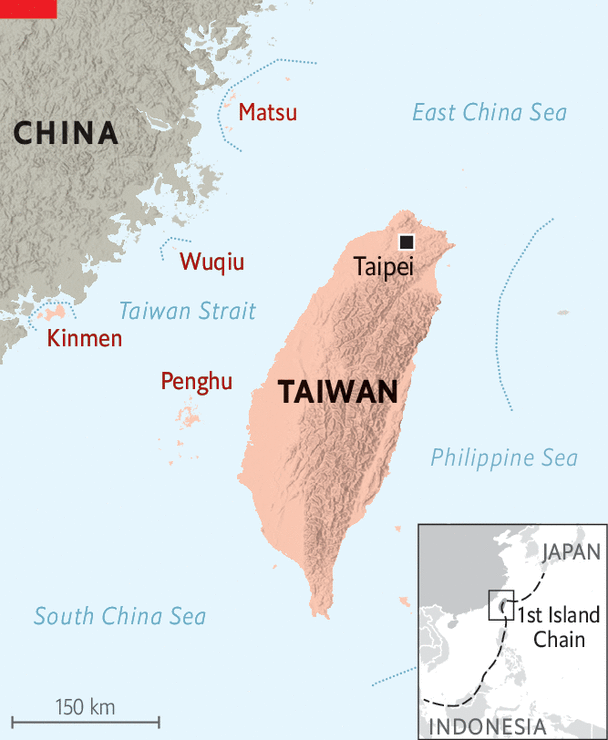
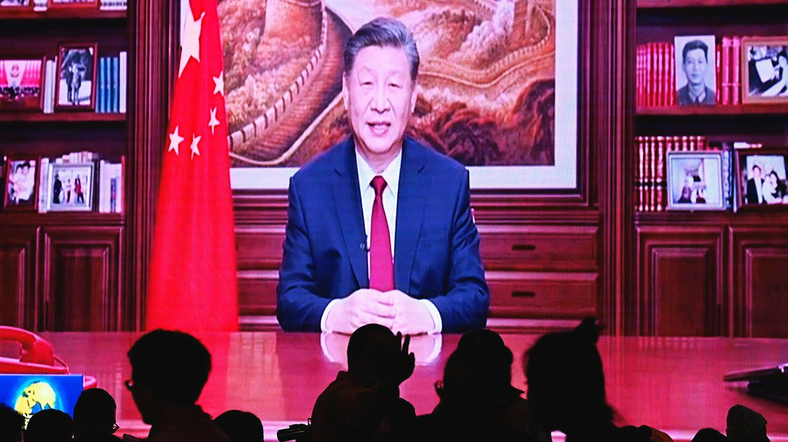
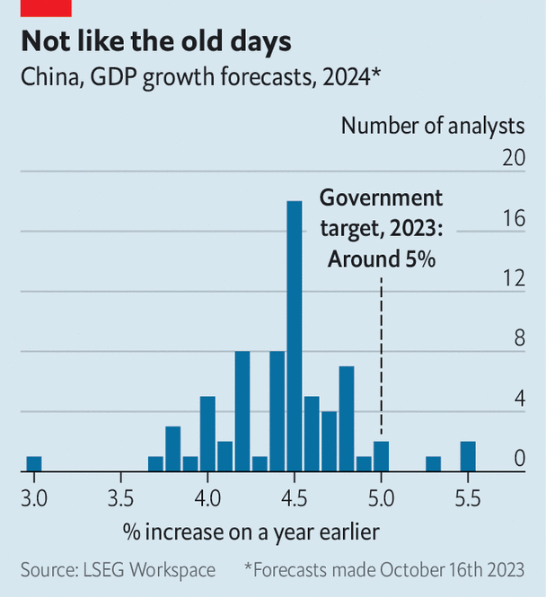
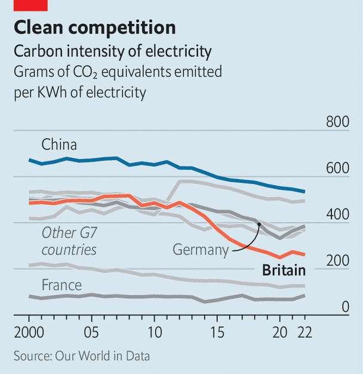
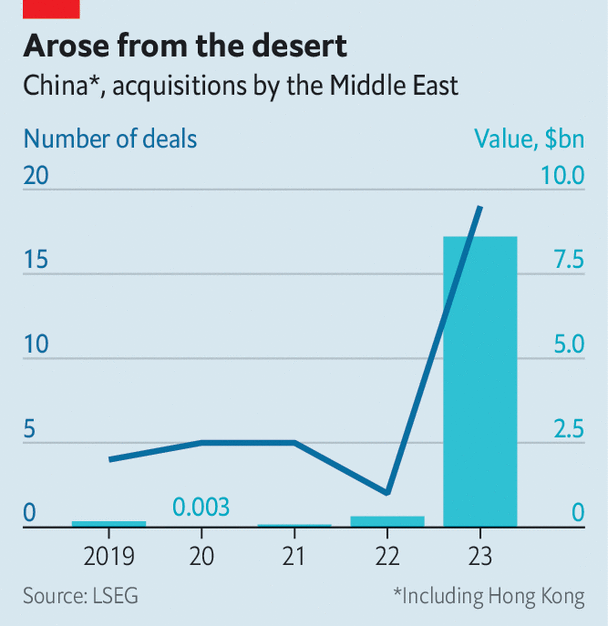
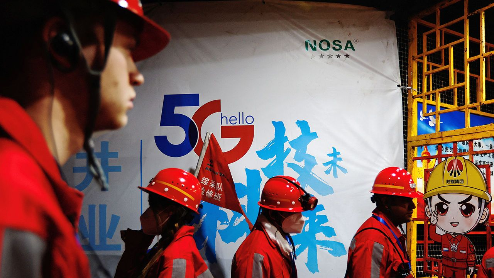

Around 100 people were killed by two bomb explosions in Iran, in what state media and regional authorities described as a terrorist attack and which the government in Tehran later blamed on America and Israel. The blasts happened as crowds of people were heading towards the tomb of Qassem Suleimani on the fourth anniversary of his assassination by America. Suleimani had led Iran’s Quds Force and created an extensive network of militias in the Middle East, some with ties to Hamas and Hizbullah.
Hamas said an Israeli drone strike killed Saleh al-Arouri, the militant group’s deputy political leader, and several of its commanders in an attack on its office in southern Beirut. Arouri had close links with Hizbullah, a militia based in Lebanon that has been shelling Israel on a near-daily basis since Hamas attacked Israel on October 7th. Meanwhile, Turkey accused Israel of plotting to “commit actions” against Palestinians living in the country.
The death toll from a number of attacks by Islamic nomadic herders on Christian farmers in Nigeria’s Plateau state rose to at least 140. Hundreds of people have been killed in the region over the years in a conflict that meshes ethno-religious feuds with rivalry over land and water.
Russia stepped up its missile and drone attacks on Ukraine, killing 39 people on December 29th. Ukraine responded with a barrage on the Russian border city of Belgorod, which killed 25 people. Another attack by Russia on Kharkiv and Kyiv killed five. The hostilities didn’t stop Ukraine and Russia from following through with their largest prisoner exchange since the start of the war. In a deal brokered by the United Arab Emirates, Ukraine released 248 Russians and Russia freed 230 Ukrainians.
Tens of thousands of protesters took to the streets of Belgrade in the biggest demonstrations yet against Serbia’s election on December 17th. The election was won by the ruling Serbian Progressive Party, tightening President Aleksandar Vucic’s grip on power. The opposition says there was widespread fraud and voter intimidation at the poll.
Alexei Navalny sent a new year’s message to his supporters via the X account managed by his social-media team, after resurfacing in Russia’s prison system. The country’s leading opposition figure had not been heard from for two weeks, but he has been relocated to the remote “Polar Wolf” penal colony 1,900km (1,200 miles) north-east of Moscow. He had previously been held in a prison 235km east of the city.
Claudine Gay resigned as president of Harvard after more allegations emerged of plagiarism in her academic writings. Claims that Ms Gay had been cribbing other people’s work surfaced after her appearance at a congressional hearing in December, where she dithered about condemning calls for genocide against Jews. Her equivocation led to a backlash from some of Harvard’s powerful donors, who questioned her leadership.
An earthquake of magnitude 7.6 hit Japan’s Noto peninsula on the country’s west coast, killing scores of people. Separately, a Japan Airlines passenger jet that was landing at Tokyo’s Haneda airport collided with a coastguard aircraft and burst into flames. Five members of the coastguard were killed, but all 379 people on the JAL plane survived.
The leader ofSouth Korea’s opposition Democratic Party of Korea, Lee Jae-myung, was stabbed in the neck. It was unclear what had motivated the attacker, a 66-year-old-man, to assault Mr Lee. The country is due to hold elections for parliament in April.
China named Admiral Dong Jun as its new defence minister. He takes over from Li Shangfu, who was sacked two months ago and hasn’t been seen in public since August. In a sign of a wider purge, nine military officials were dismissed from their roles in the National People’s Congress.
Javier Milei, Argentina’s new president, formally stopped his country from joining the expansion of the BRICS economic club. Argentina was supposed to become a new member on January 1st alongside Egypt, Ethiopia, Iran, Saudi Arabia and the United Arab Emirates. Mr Milei is an outspoken critic of China, which dominates the BRICS.
The number of illegal migrants crossing the English Channel in small boats to Britain fell to 29,437 in 2023. That is 36% lower than in 2022, a peak year for crossings. The government claimed the decrease showed that its policies of deterring migrants and operating a returns deal with Albania were working. Critics said the fall reflected bad maritime weather, and that the number would rise again this year.
Tesla lost its crown as the world’s biggest seller of electric vehicles. BYD, a Chinese carmaker that is making a big push into overseas markets, sold 526,000 fully battery-powered cars in the final quarter of 2023, overtaking Tesla, which delivered nearly 485,000.
The became the first big media company in America to file a lawsuit against Microsoft and OpenAI, the creator of ChatGPT, alleging that they unlawfully used the newspaper’s content to build chatbots and “free ride” on its journalism.
OUR COVER this week contemplates the cowardice and complacency of America’s Democratic Party. Democrats rage about how re-electing Donald Trump would doom their country’s democracy. And yet, in deciding who to put up against him in November’s election, their party looks as if it will meekly submit to the candidacy of an 81-year-old with the worst approval rating of any modern president at this stage in his term. How did it come to this?
The man supposed to stop Donald Trump is an unpopular 81-year-old
In failing to look past Joe Biden, Democrats have shown cowardice and complacency
AMERICAN POLITICS is paralysed by a contradiction as big as the Grand Canyon. Democrats rage about how re-electing Donald Trump would doom their country’s democracy. And yet, in deciding who to put up against him in November’s election, the party looks as if it will meekly submit to the candidacy of an 81-year-old with the worst approval rating of any modern president at this stage in his term. How did it come to this?
Joe Biden’s net approval rating stands at minus 16 points. Mr Trump, leading polls in the swing states where the election will be decided, is a coin-toss away from a second presidential win. Even if you do not see Mr Trump as a potential dictator, that is an alarming prospect. A substantial share of Democrats would rather Mr Biden did not run. But instead of either challenging him or knuckling down to support his campaign, they have instead taken to muttering glassy-eyed about the mess they are in.
There are no secrets about what makes Mr Biden so unpopular. Part of it is the sustained burst of inflation that has been laid at his door. Then there is his age. Most Americans know someone in their 80s who is starting to show their years. They also know that no matter how fine that person’s character, they should not be given a four-year stint in the world’s hardest job.
Back in 2023 Mr Biden could—and should—have decided to be a one-term president. He would have been revered as a paragon of public service and a rebuke to Mr Trump’s boundless ego. Democratic bigwigs know this. In fact before their party’s better-than-expected showing in the midterms, plenty of party members thought that Mr Biden would indeed stand aside. This newspaper first argued that the president should not seek re-election over a year ago.
Unfortunately, Mr Biden and his party had several reasons for him fighting one more campaign, none of them good. His sense of duty was tainted by vanity. Having first stood for president in 1987 and laboured for so long to sit behind the Resolutedesk, he has been seduced into believing that his country needs him because he is a proven Trump-beater.
Likewise, his staff’s desire to serve has surely been tainted by ambition. It is in the nature of administrations that many of a president’s closest advisers will never again be so close to power. Of course they do not want to see their man surrender the White House in order to focus on his presidential library.
Democratic leaders have been cowardly and complacent. Like many pusillanimous congressional Republicans, who disliked Mr Trump and considered him dangerous—but could not find it within themselves to impeach or even criticise him—Democratic stalwarts have been unwilling to act on their concerns about Mr Biden’s folly. If that was because of the threat to their own careers, their behaviour was cowardly. If it was thinking that Mr Trump is his own worst enemy, it was complacent. Mr Biden’s approval ratings have continued to slide, while the 91 criminal charges Mr Trump faces have, so far, only made him stronger.
Given this, you might think that the best thing would be for Mr Biden to stand aside. After all, the election is still ten months away and the Democratic Party has talent. Alas, not only is that exceedingly unlikely, but the closer you look at what would happen, finding an alternative to Mr Biden at this stage would be a desperate and unwise throw of the dice .
Were he to withdraw today, the Democratic Party would have to frantically recast its primary, because filing deadlines have already passed in many states and the only other candidates on the ballot are a little-known congressman called Dean Phillips and a self-help guru called Marianne Williamson. Assuming this was possible, and that the flurry of ensuing lawsuits was manageable, state legislatures would have to approve new dates for the primaries closer to the convention in August. A series of debates would have to be organised so that primary voters knew what they were voting for. The field could well be vast, with no obvious way of narrowing it quickly: in the Democratic primary of 2020, 29 candidates put themselves forward.
The chaos might be worth it if the party could be sure of going into the election with a young, electable candidate. However, it seems equally possible that the eventual winner would be unelectable—Bernie Sanders, say, a self-declared democratic socialist who is a year older than Mr Biden. More likely, the nomination would go to Kamala Harris, the vice-president. Ms Harris has the advantage of not being old, though it says something about the Democratic Party’s gerontocracy that she will be 60 in November and is considered youthful.
Unfortunately she has proven to be a poor communicator, a disadvantage in office as well as on the stump. Ms Harris is a creature of California’s machine politics and has never successfully appealed to voters outside her state. Her campaign in 2020 was awful. Her autocue sometimes seems to have been hacked by a satirist. Immigration and the southern border—a portfolio she handles for Mr Biden—is Mr Trump’s strongest issue and the Democrats’ weakest. Ms Harris’s chances of beating Mr Trump look even worse than her boss’s.
Better, therefore, for Democrats to focus on electing Mr Biden. The economy promises a soft landing; workers are seeing real-wage growth and full employment. Were Mr Trump convicted, he could yet be punished by voters. Most important is to invigorate the campaign. Democrats need to unlock some excitement and create a sense of possibility about a second term.
Ridin’ with Biden
The president is not a good campaigner and is up against a candidate whose rallies are a cult meeting crossed with a vaudeville show. He needs someone who can speak to crowds and go on television for him. That person is not Ms Harris.
One way she could serve her party and her country, and help keep Mr Trump out of the White House, would be to forswear another term as vice-president. Mr Biden could present his second term as a different kind of presidency, one in which he would share more responsibility with a vice-president acting more like a CEO. Either way, Mr Biden needs the help of an army of enthusiastic Democrats willing to campaign alongside him. At the moment he and his party are sleepwalking towards disaster. ■
Binyamin Netanyahu is botching the war. Time to sack him
To be safe, Israel needs new leadership
There is mayhem in the Middle East. In Gaza 2m war-battered civilians are at risk of famine. Attacks on cargo ships by the Houthis threaten world trade. Israel’s northern border is tense after the assassination of a Hamas leader in Beirut on January 2nd. A day later two explosions killed almost 100 people in Iran; the Iranians at first blamed “terrorists”, and then America and Israel. War could break out between Israel and Hizbullah, the Iran-backed militia in Lebanon. Two things are clear. The attacks of October 7th are reshaping the Middle East. And under Binyamin Netanyahu’s leadership, Israel is making blunders that undermine its own security.
Since the slaughter of Israeli civilians by Hamas in October, Israel has had to rethink its long-standing security doctrine. That doctrine involved giving up on peace with the Palestinians, building walls and using technology to repel missile attacks and infiltrations. It didn’t work. The Palestinians were radicalised and the walls did not stop the atrocities of October 7th. Israel’s air defences may yet be overwhelmed by the increasingly sophisticated arsenal of missiles aimed at it by Iran-backed militants in Lebanon, Yemen and elsewhere.
How might a new Israeli security doctrine work? supports removing Hamas from power in Gaza: it has oppressed and impoverished the people there. It is also an impediment to peace. But Israel should make clear its fight is with the terrorists. That means using force judiciously and letting in a lot more aid. It also means having a plan for after the war that creates a path to a moderate Palestinian state. Such an approach would help maintain support for Israel in America and elsewhere. This is crucial: America deters Iran and backs detente between Israel and Gulf states that also oppose Iran’s influence. Most important, it underwrites the security of Israel itself.
Alas, in Gaza, Mr Netanyahu has eschewed this logic. Israel’s tactics show needless disregard for civilian lives. The Hamas-run authorities there say 22,000 civilians and fighters have died. The UN says another 7,000 may lie under the rubble. Israel says it has killed 8,000 terrorists. Far too little water, food and medicine is reaching Gaza and there are no truly safe zones for civilians. Mr Netanyahu seems to have no post-war plan, other than anarchy or occupation. He has excluded rule by the Palestinian Authority in Gaza. Extremists in his coalition talk, outrageously, of permanently displacing Palestinians from the enclave.
What explains this myopia? It is true that Israeli public opinion shows little sympathy for the Palestinians and that the obliteration of Gaza may help restore Israel’s deterrent power. Yet the main explanation is Mr Netanyahu’s weakness. Desperate to stay in office, he has pandered to extremists in his coalition and the Israeli electorate, while testing America’s patience and horrifying Arab states. That will backfire in Gaza and hinder Israel from dealing with its own broader security concerns.
Take the northern front: the threat of a Hizbullah invasion or missile strikesmeans that a strip of northern Israel is now uninhabited. Yet Israel’s options are grim. A pre-emptive invasion of Lebanon could lead to a military quagmire, trigger the complete collapse of the Lebanese state and wreck relations with America. Diplomacy might create a buffer zone between Hizbullah and Israel’s border, but a regional plan is needed to contain and deter Iran. That requires the support of America, other Western allies and, ideally, the Gulf Arab states, all of which Mr Netanyahu is alienating.
Mr Netanyahu’s popularity at home has plummeted. Israel’s Supreme Court has just struck down his controversial judicial overhaul. For Israel’s sake, he has to go. Given the trauma of October 7th, his successor will not be soft on security. But a wiser Israeli leader might understand that famine in Gaza, anarchy or open-ended occupation there and the erosion of American backing will not make Israel safer. ■
Is America’s raging bull market exhausted, or taking a breath?
Investors have a slight hangover
If you had an overindulgent Christmas, you may have begun the new year in a more austere frame of mind. Recent goings-on in the markets may therefore seem familiar. As 2023 drew to a close the American stockmarket was on a ripping run. It ended the year with nine consecutive weeks of gains, the longest winning streak since 2004. The s&p 500 index of leading American stocks was a whisker away from its all-time high, set on January 3rd 2022, when investors thought that interest-rate rises would be small and slow. Now punters are suddenly in a more sober mood, with stocks falling by 1.4% in the first two trading days of the new year. Such modest fluctuations are hardly unusual. Nonetheless, they raise the question of whether the blistering bull market is over, or has further to go.
For the first ten months of 2023, the market rally was largely concentrated in seven tech stocks, led by Nvidia, a maker of the computer chips that are used to process artificial-intelligence (AI) algorithms. Since then, however, it broadened and gained pace. Firms that mirror the wider economy, such as retailers and banks, soared—JPMorgan Chase is up by a quarter since late October. The s&p 500 rose by 14% in the final two months of 2023, and towers 31% above its most recent trough, well above the 20% that is often used to define a bull market.
The explanation for the run was a happy mix of strong economic growth, an orderly reduction of inflation and, crucially, an enormous shift in interest-rate expectations over the past two months. America’s economy expanded at an impressive annualised pace of 4.9% in the third quarter; real-time estimates suggest it grew at a still-robust 2.5% in the last three months of the year. In the past three months “core” consumer prices have risen at an average annualised pace of just 2.2%, only a smidgen above the Federal Reserve’s inflation target.
That led to a big shift in investors’ expectations for interest rates. In October they thought one-year rates in a year’s time would be close to 5%. Thanks to lower inflation data and a doveish set of forecasts from the Fed, that has fallen to 3.5%. Bond investors see the central bank cutting rates as soon as March—and continuing in almost every meeting in 2024. This tantalising prospect of immaculate disinflation, robust growth and the promise of easier monetary policy has underpinned the rally.
Can the bull market be sustained? Asset prices still have room to rise. Although markets are close to the heights they reached after the protracted mania of 2021, that does not mean that things are as excessive now as they were then. In real terms, stock prices remain lower; valuations are therefore not quite as elevated. Participation by retail investors, which reached a giddy peak of 24% of daily trading volumes in early 2021, was steady at around 18% in 2023.
Moreover, although tech led the charge in both 2021 and 2023, investors this time have been discerning. They have lifted up Nvidia and Microsoft but Alphabet, Amazon and Tesla are all trading below their peak valuations. It is not just Americans excited about AI who are buoying stocks: in dollar terms European and Japanese equity indices are also within touching distance of their level two years ago.
Rude awakening
Yet everything hangs on whether investors’ ideal economic scenario comes to pass. The expectation that it will helped lift stocks close to a record high last year. But risks to the outlook abound, and may have given investors pause in the cold light of January. Inflation in America may not be fully vanquished, not least with the economy still in rude health and the fiscal deficit unusually wide. Strife in the Middle East could cause another commodity-price shock; the one-time easing of the supply-chain disruptions of the pandemic may be keeping inflation low only temporarily.
A downturn may merely be delayed, not dodged. Rises in interest rates may not yet have fully fed through to borrowers. Indeed, history suggests that recessions are hard to spot in real time, and tend to catch out central banks. If a recession does not arrive, it is still possible that the Fed will not move with as much alacrity as investors hope. To see what will happen in the markets in 2024, watch the real economy. ■
Can India, Indonesia and Saudi Arabia be the next great economies?
Meet the countries making bold—and risky—bets on growth
Politicians and policymakers all over the world share a preoccupation: how to make their countries richer. The trouble is that the route to prosperity looks ever more daunting. The global economy is changing, as new, green technologies emerge and trading relationships fragment. In countries that are already rich the state, after decades of free-market rhetoric, is back in a big way. Governments are spending hundreds of billions on handouts for industries they deem to be strategically important.
In the face of this, many developing countries’ ideas for growth are staggeringly ambitious. India and Indonesia hope to become high-income countries within 25 years. Muhammad bin Salman, Saudi Arabia’s crown prince, wants to diversify and develop its economy just as rapidly. Refreshingly, such plans are more outward-looking than many development strategies of old. But they contain pitfalls, too.
In many ways, the developing world is choosing to bank on globalisation. Indonesia wants a bigger role in green supply chains. It seeks to do everything from mining and refining nickel, even to building the electric vehicles that run on it. It then wants to export the finished products to the rest of the world. Countries in the Gulf want to become attractive homes for global business, and are opening up to flows of people, cargo and cash. Narendra Modi envisions India as a high-tech manufacturer for the world, churning out microchips and smartphones.
That is a welcome shift. Less than 50 years ago India hoped to grow by closing itself off from the global economy. It turned out to be an approach that failed miserably. Some still suggest that India’s domestic demand could carry its growth.
But serving foreign markets plays a vital role in development. It keeps firms honest, by forcing them to compete in markets that their governments do not control. It lets them reach the largest possible scale. And foreign customers can teach firms how to serve them better. In East Asia export performance was also a useful yardstick for policymakers, because it revealed which industries deserved their continued backing.
Nonetheless, today’s development strategies also hold dangers. In many countries governments are running the risk of warping the economy in the name of nurturing it. Saudi Arabia’s onslaught of industrial policy, mainly disbursed as handouts from the Public Investment Fund, exceeds the spending even of America’s Inflation Reduction Act. In order to help exporters grow, India is seeking to fence off its high-tech manufacturers behind tariffs and subsidies. Indonesia’s all-in bet on nickel leaves it perilously exposed, should other battery chemistries prevail.
The rich world’s new-found zeal for protectionism may make it tempting for poorer countries to follow suit. Yet floods of cash and shelter from foreign competition make it impossible to know whether a government’s development gambles are paying off. A bet on one technology could go wrong if others emerge.
Parts of the developing world have paid dearly to learn these lessons before. For most of the 1960s Africa’s policymakers had the same ideas as East Asia’s, and the continent grew as fast, until picking the wrong champions left it languishing between 1975 and 1985. It is the poorest region in the world today.
Picking winners is also harder than it was 60 years ago. Then the choice was over which form of manufacturing to promote. Cheap, abundant workforces gave poor countries an edge. Manufacturing was the only sector in which poor countries got better faster than rich countries.
Today, however, factories have become more capital-intensive. Though manufacturing still offers a way to boost a country’s productivity, it is less certain to become a poor country’s comparative advantage. That makes it even harder for policymakers to spot a good industry for them to place their bets. Rather than gambling with the public’s money, they would be better off keeping it off the table.
There are, after all, plenty of other worthwhile things to spend it on. The state has a vital role in providing public goods by investing in infrastructure to stitch regions together, or education to boost workers’ skills. That might still favour some industries over others. But if economies stay open, then they will at least experience the disciplines and benefits of trade.
Vision 2050
The stakes are high. The developing world is home to over 6bn people and some of the most fragile democracies. Getting growth wrong would keep such places poorer for longer. That would be not just a human tragedy, but also a potential source of political instability. To avert it, the developing world needs to be bold—and resist the urge to build walls around itself. ■
WHAT DO YOU do when words start to fail you? In the case of President Volodymyr Zelensky, whose heroic language galvanised the West to support Ukraine after Russia invaded it almost two years ago, the answer is that you become angry and frustrated. Despite his efforts, $61bn of American money that would help Ukraine is being held up in Congress and the European Union has failed to sign off a four-year grant of €50bn ($55bn). Ukraine needs arms and money within weeks.
Speaking to on December 30th, Mr Zelensky was in irascible, table-thumping form—far removed from the man we met in Kyiv just weeks after Russia struck. His central argument is that when the West helps Ukraine it is acting in its own interests. “Giving us money or giving us weapons, you support yourself,” he told us. “You save your children, not ours.” Mr Zelensky is right. But his message is not getting through.
Some Western politicians seem to believe Ukraine can slip safely down the agenda. Others think they can gain from obstructing aid. For too long Western leaders have relied on Mr Zelensky’s oratory to make the case for backing Ukraine. They need to start doing it themselves.
This means taking on the arguments eroding support for Ukraine: that the failed counter-offensive of 2023 shows it cannot win; that having struggled against its smaller neighbour, Russia poses little threat to NATO; and that the West is wasting money that should be spent elsewhere, including on defences against China. Those arguments are wrong.
Despite its military setback, Ukraine can win this war by emerging as a thriving, Western-leaning democracy. Defeating Russia’s president, Vladimir Putin, is not about retaking territory so much as showing the Kremlin that his invasion is a futile exercise robbing Russia of its young men and its future.
With money, arms and real progress on the accession of Ukraine to the EU, that is still possible. In 2024 a focus of Ukrainian fighting is likely to be Crimea, while the front lines on the mainland shift only slightly. This peninsula is a vital supply route for Russian forces in southern Ukraine; annexing it in 2014 was a propaganda triumph for Mr Putin. Successful Ukrainian attacks on Crimea will both hurt Russia’s capabilities and embarrass Mr Putin. An example was the sinking of the , a large landing ship berthed in Feodosia on the south coast of the peninsula, on December 26th.
By contrast, if Mr Putin sees that the West has lost faith in Ukraine, he will not stop. He needs war as an excuse for his repressive rule. Visiting a military hospital on January 1st, he declared his hostility towards Western countries: “The point is not that they are helping our enemy,” he said. “They are our enemy.” Those who argue that Russia is not strong enough to pose a threat to the West are forgetting that the Russian army is learning new tactics in Ukraine. Speaking at the hospital, Mr Putin added that Russia is re-equipping itself for war faster than the West is—and he is right.
Russia does not have to mount another full invasion to wreck NATO. A provocation against, say, a Baltic state could prise apart the alliance’s pledge that an attack on one member is an attack on all. Were Ukraine to fail because of a lack of Western resolve, especially in America, challenges to the United States—including by China, Iran and North Korea—would become more likely.
If Russia is a threat and Ukraine can win, then helping it is not a waste of money. That $61bn to help Ukraine (some of which is, anyway, spent in America and NATO countries) is just 6.9% of America’s defence budget. The EU’s spending on Ukraine is a tiny fraction of its member states’ GDP. The cost of re-establishing deterrence against Russia would be far greater than the cost of backing Ukraine to win. So would the extra cost of defending American interests around the world, including against China. An actual war with Russia—with its risk of nuclear escalation—could be catastrophic.
No longer can Western leaders leave the talking to Mr Zelensky. They need to make the case for getting Ukraine cash. And they need to make it now. ■
Letters | On income inequality, Russia and Denmark, mental health, Mondays
You discussed the paper by Gerald Auten and David Splinter on income inequality in the United States (“Free exchange, December 2nd). As you noted, one of the paper’s main arguments concerns the effects of the Tax Reform Act of 1986, which lowered tax rates on corporate income, capital income and marginal personal income, but sought to minimise revenue loss by repealing the investment tax credit and other deductions for individuals and businesses. Messrs Auten and Splinter argue that the reform brought a good deal of previously sheltered income into the open. However, the law also created a favourable tax regime for S corporations, a form of “pass-through” company, in which income from the business is taxed as personal income at a lower rate.
In the first year following the law’s enactment, the number of S corporation tax returns jumped by 36.5%, and continued to grow. This change in tax law did not spur a burst of new entrepreneurial activity or job growth, but did propel the growth of high-end incomes. By now, over two-thirds of those in the top 1% of income earners own pass-through companies, so this tax-code provision has been very favourable to those at the top.
Messrs Auten and Splinter also ignore other evidence that runs counter to their argument. For example, by a number of measures, incomes have risen fastest for the very highest segments of the top 1%; indeed, the narrower and higher the slice, the higher the growth of income. Note that the same is true for wealth. The Credit Suisse Global Wealth Reports indicate that mean adult wealth in the United States rose almost 2.2 times from 2005 to 2023. However, the mean wealth of the wealthiest 400 Americans rose 3.9 times.
Moreover, Messrs Auten and Splinter overlook evidence about how unreported income is distributed. Research shows that the lion’s share of unreported income goes to the top end of the distribution. For example, the counties with the highest rates of underreporting are the highest-income counties. Internal Revenue Service audits find that the share of tax returns for which third-party documentation is lacking, particularly for pass-through businesses such as partnerships and S corporations, account for higher shares of unreported income. Probably 60% of unreported income is distributed to the top decile in America.
In sum, Messrs Auten and Splinter have not provided a convincing refutation of the research by Piketty, Saez and Zucman on inequality.
Thomas Remington Visiting professor of government Harvard University
Russia v Denmark
One thing missing from your briefing on Russia (“For the Fatherland”, December 2nd) was the country’s declining performance in scientific and technological research and development. For example, in 1989 Russia and Denmark were within a few ticks of each other on tables of scientific and technological achievement. Indeed, according to the OECD, in 1989, Russia spent more on R&D as a percentage of its GDP than Denmark. Within a decade, that had dropped to less than half that of Denmark. In 1995 Russia had a higher ratio of technical workers; 8.6 per 1,000 members of the workforce compared with Denmark’s 5.6. By the 2020s the number for Russia had plunged to 5.3 (Denmark’s had surged to 14.5).
In 1989 Russia published around 1.8m scientific articles, and Denmark about a quarter of that. By the 2000s, Denmark has doubled its relative productivity in that area. Denmark was already ahead of Russia in terms of quality measures at the time, but the gap widened considerably over the following decades.
On most of today’s tables ranking the main science-producing countries, Denmark is near the top and Russia is towards the bottom. The significant divergence of performance between these two countries reflects the importance of science and technology policy in supporting a thriving economy, and suggests that Russia’s future economic prospects are built on a flimsy base.
Professor Caroline Wagner Ohio State University
image: Holly Stapleton
Poor mental-health services
I have been a psychiatrist in London’s East End for 35 years. The bulk of our work lies at the beguiling interface between mild and severe mental-health illness (“Time to rethink”, December 9th). Complexity is in the eyes of the beholder. Meanwhile, the cruel elision of austerity and covid continues. It is now routine for a frightened, hallucinating person to be hospitalised (if we can find a bed) only to be discharged without any meaningful assessment in order to make way for another patient, deemed more severe at that moment. If a bed is found, it is often far from the patient’s support network, assuming that he or she has one.
Modern managerialism, choosing price over value, has dismantled formerly tight-knit, well-honed multidisciplinary teams into a fragmented maze of specialisms, often based on diagnoses of questionable value. The patient’s experience today involves a solitary wandering between services with waiting lists now measured in years. The system now serves itself rather than the patient, providing a convenient lattice of storage silos for distress and discontent, not unlike the asylums of old, but with fewer bricks.
In these uncertain times we choose the illusory comfort of rational abstractions, such as pills, Greek-sounding diagnoses and quick therapies, over the messy, more demanding need for an empathic, trusting professional relationship which endures over time. Until we return our over-cherished reason to its proper place alongside embodied emotion, hope, imagination and our need to belong, we will continue to get the mental services that we deserve.
Dr Mark Salter Consultant psychiatrist East London Foundation Trust
image: Paul Blow
Blue Mondays
Bartleby’s musings on the misconceptions surrounding Mondays struck a chord with me (December 9th). Our firm successfully moved to a four-day week a year and a half ago. The change was at first met with scepticism, but our increased productivity has silenced any doubts.
Unbeknown to our clients and the public, we’ve eliminated Mondays from our work schedule, maintaining the same vacations, salary and standard working hours. The results have been remarkable, with a more energised and motivated team. I certainly don’t experience “Tuesdayitis”. Perhaps “Tuesdayphiliac” is more appropriate?
Brian Ogilvie Director Clover Residential
Bartleby cited “I Don’t Like Mondays“ by the Boomtown Rats as a musical lamentation of Mondayitis. There were two American precursors for this take on manic Monday. “Monday, Monday”, a number-one hit by The Mamas & the Papas, contained the forlorn lyric that “whenever Monday comes, you can find me cryin’ all the time”. And “Rainy Days and Mondays” by the Carpenters found that Mondays “always get me down”.
Joe Biden’s chances do not look good. The Democrats have no plan B
It is too late to hold a competitive primary to allow a better candidate to emerge
SITTING PRESIDENTS do not tend to abandon bids for re-election. The most recent to do so was Lyndon Johnson, in 1968. And that is a year that his party, the Democrats, would rather forget. Johnson was unpopular. The country and the party were divided by the Vietnam war and the civil-rights movement. After a surprisingly strong challenge in the first primary, he stood aside, only to unleash chaos. One of the leading candidates to replace him, Robert Kennedy, was assassinated. The nomination was eventually awarded by party grandees to a man who had not won a single primary, Hubert Humphrey. In the end the Republican candidate, Richard Nixon, who had been widely considered unelectable at the beginning of the year, won convincingly. He went on to do more damage to the presidency than anyone bar the Republicans’ likely candidate this year, Donald Trump.
Mr Trump, too, should be unelectable, owing to the 91 felonies with which he has been charged in different parts of America. Yet Joe Biden, the incumbent president, is so unpopular he may well lose to Mr Trump. There have been occasional calls for Mr Biden to step aside, like Johnson. But there is no sign that he is willing to do so and no guarantee that the Democrats would end up with a stronger candidate if he did. For that reason, although many Democratic operatives have grave misgivings about his candidacy, most are keeping quiet. As one puts it, if you’re all stuck on a boat of questionable seaworthiness, it is natural to wish for a finer vessel, but unproductive to poke holes in the hull or stoke a mutiny.
Whitmer and wisdom
It is Mr Biden’s feeble polling that is seeding the angst. ’s poll tracker for the Republican primary puts Mr Trump more than 50 percentage points ahead of his nearest rival, making him the prohibitive favourite. A polling average for the general election compiled by RealClearPolitics shows Mr Trump ahead of Mr Biden by a margin of 2.3 percentage points. This is well above his showing in the past two presidential contests, in which he consistently lagged in the polls. At this point in 2016 Mr Trump’s support was seven points lower: he trailed Hillary Clinton by a margin of five points. At this point in 2020 he trailed Mr Biden by five points.
With most states so partisan that they are not worth contesting, the presidential campaign will be centred on six where the outcome is actually uncertain: Arizona, Georgia, Michigan, Nevada, Pennsylvania and Wisconsin. Early polling in these states also shows Mr Biden several points behind. And some Democrats fear that these polls may be underestimating Mr Trump’s support, because his conspiracy-minded voters may not be open with those taking the surveys.
image: The Economist
Underpinning Mr Trump’s strength is a broad political shift. Partisan allegiance in America may seem hysterically entrenched, but in fact it is mutable. White working-class voters powered Mr Trump to victory in 2016; in the years since, the non-white working class has begun to shift, too. Between 2016 and 2020 Hispanic Americans, once fairly loyal Democratic voters, moved 18 points towards the Republicans. Black men are also slowly peeling away from the Democrats. Only the influx of white college graduates has kept the Democratic Party competitive nationally. These demographic trends are sizeable enough to determine the outcome of the election if they persist—and they do appear to be. The latest polls indicate higher support for Mr Trump among African-American and Hispanic voters than he enjoyed in 2020 (see chart 1). “It seems like the 2024 polls right now are 2020 trends carried forward,” says Patrick Ruffini, a Republican pollster.
Secular trends aside, there is plainly a problem with Mr Biden himself. The president’s net approval rating is -16 points, according to several public polling averages. That is notably worse than Mr Trump’s at this point in his presidency. Voters are worried about his fitness for office. One of YouGov’s weekly polls for in December found that 55% of Americans think that the 81-year-old Mr Biden’s health and age “severely limit his ability to do the job” of president, including 25% of Democrats. Only 24% of Americans want him to run for president again. Fully 61% of them do not, including 38% of those who voted for him in 2020.
Americans are only marginally more enthusiastic about the 77-year-old Mr Trump’s revenge bid for the White House, but they are much less likely to think that he is too old or frail to resume the office. Mr Biden, after all, did not do much campaigning in 2020, owing to the pandemic. He does not seem to relish the arduous campaign ahead, whereas Mr Trump appears to like nothing better than rambling on in front of adoring crowds. Four years ago Mr Biden reportedly toyed with promising to remain in office for just a single term. “If Trump wasn’t running, I’m not sure I’d be running,” he said to a room full of donors in December. When asked how many other Democrats could beat Mr Trump, he said, “Probably 50 of them…I’m not the only one who could defeat him. But I will defeat him.”
There is almost no chance that Mr Biden will voluntarily abandon his re-election bid. He sees himself as a divinely appointed Trumpbuster and believes his electoral record reflects that. First he vanquished Mr Trump in 2020. Then in the midterm elections of 2022, when Republicans had expected to deliver a terrible rebuke to Democrats, the Democrats’ support held up surprisingly well.
Mr Biden’s supporters, naturally, express great confidence. “If you play poker, which I do, you’d rather have our cards than their cards,” says Jim Messina, the manager of Barack Obama’s successful re-election bid in 2012—although he admits, “This thing will be really close.” The campaign argues that the president has been underestimated before, as in the hotly contested Democratic primary of 2020, when he looked fatally unpopular before suddenly becoming the consensus candidate.
Campaign staffers point to the mid-terms as proof that Republican candidates who champion abortion and reject the election results of 2020 will fare poorly. They argue, correctly, that polls conducted ten months from an election are a poor guide to the outcome. Most voters will not devote much thought to the election for months and the billion-dollar campaign machines are only just gearing up. When Americans are paying more attention, the campaign insists, the spectacle of Mr Trump shuttling between rallies and court appearances will remind Americans of the chaos of his time in office.
Mr Biden’s polling deficit is not insurmountable. Bidenworld also thinks that, with time, voters will give the president more credit for his achievements. The labour market is robust, unemployment is low and wage growth is strongest at the bottom of the income distribution, reducing wage inequality. Inflation, which has infuriated many voters, is abating without a recession. YouGov’s polling for suggests Americans are unduly gloomy: 58% think the country has high unemployment (it does not); 44% think the country is in a recession (it is not); and 40% think inflation will be higher in six months (quite unlikely). The Democrats are hoping that voters will notice that the economy is doing better than they thought by election day. But Republicans keep talking about “Bidenomics” as a pejorative, suggesting that they doubt the topic will end up helping the president.
Mr Biden’s apologists also argue, in effect, that he will win because he must. “We’re going to win because democracy and freedom and the very ideas that make America America are on the line. We have no other choice,” says Quentin Fulks, his deputy campaign manager.They see a battle for the very “soul of the nation”, as Mr Biden often says. This is a stirring appeal, but only for the converted. A new study by the Democracy Fund Voter Study Group finds that Americans like to invoke democratic norms to chide someone from the opposing party, but are willing to suspend them when it comes to their own preferred candidate. Mr Trump is also muddying things by deploying apocalyptic rhetoric of his own: he has recently taken to calling Mr Biden “the destroyer of American democracy”. Republicans in Congress may pursue a farcical impeachment inquiry against Mr Biden in order to claim that both men are equally disreputable.
Newsom fine day
Anyway, the end-of-days argument cuts both ways. It could be used to assert that the Democrats cannot risk as weak a candidate as Mr Biden. The party has plenty of non-geriatric politicians who could helm a presidential ticket. The problem is that none of them has dared to enter the primaries, in part for fear that they would not be able to beat Mr Biden and instead would only harm his chances in the general election. Only little-known politicians such as Dean Phillips, a Democratic congressman from Minnesota, have put themselves forward. “President Biden—a man I respect and I think a person of decency and integrity—is perhaps one of the only Democrats who could lose and probably will lose to Donald Trump,” explains Mr Phillips. He says he is merely saying “the quiet part out loud” about the president’s advanced age and unpopularity.
As reasonable as Mr Phillips’s criticisms may be, his challenge looks doomed (“keep the faith” is one of his catchphrases). He could score unexpectedly highly in the New Hampshire primary, to be held on January 23rd, which Mr Biden is boycotting over a scheduling spat within the Democratic Party. Thereafter, things will be harder. Some states, such as Florida, have in effect cancelled their Democratic primaries altogether, declaring that there is only one qualified candidate. The difficulty of getting on the ballot prompted Robert Kennedy junior, the son of the candidate assassinated in 1968, to abandon an attempt to stand in the primaries against Mr Biden and instead try to get on the ballot in the general election as a third-party candidate.
image: The Economist
Even if more plausible candidates saw any hope of defeating Mr Biden, they are too late to initiate a serious primary challenge. The deadlines to file as a candidate in the primary have already passed in more than 20 states, and several more loom in early January. In recent years the primary calendar has become much more compressed: most of the almost 4,000 ordinary delegates will be allocated by the end of March (see chart 2), giving an insurgent candidate very little time to gain any momentum.
All of which suggests that Mr Biden will easily secure his party’s nomination. It is possible, of course, that he might be forced to step aside by what pundits politely call a “health event”. But such an outcome would not necessarily be providential for the Democrats. As when Johnson declared in 1968, “I shall not seek, and I will not accept, the nomination of my party for another term as your president”, pandemonium would probably follow. The party might have to rewrite the rules of the primaries, to allow more candidates late access to the ballot, but even so, the campaign would presumably be nasty, brutish and short. Only a few candidates, with the resources to crank up an electoral machine at short notice, would be able to compete.
Harris teeters
Kamala Harris, the vice-president, would be the presumptive nominee, with the institutional support of the party behind her and perhaps even Mr Biden’s endorsement. Democrats are a hierarchical bunch. The last time they denied a vice-president seeking the presidential nomination was in 1952. The unfortunate man was Harry Truman’s deputy, Alben Barkley, a septuagenarian whose abysmal eyesight required documents to be set in inch-tall font.
But Ms Harris, who ran a disastrous campaign for the presidency in 2020 that ended before the first votes were cast, would almost certainly attract challengers. Only 36% of Americans think she is qualified to be president, according to YouGov. Only 23% think she would beat Mr Trump (including 43% of those who voted for Mr Biden in 2020 and just 3% of Trump voters). Although it would be awkward in an identity-conscious party to attempt to step over the first black and the first female vice-president, some rivals would probably be willing to take the plunge.
image: Mark Harris
Gavin Newsom, the governor of California, is plainly clamouring for the chance to be president, although he denies it, and has built a formidable political machine. The governor of Illinois, J.B. Pritzker, has both ambition and an inherited fortune worth billions. But the moderate governors whom many Democrats see as best-placed to take on Mr Trump—such as Andy Beshear of Kentucky, Josh Shapiro of Pennsylvania or Gretchen Whitmer of Michigan—might not have enough money to hand to compete properly in a suddenly open primary or enough time to build a viable campaign. The biggest political talents in Mr Biden’s cabinet, such as Pete Buttigieg, the secretary of transportation, and Gina Raimondo, the secretary of commerce, would probably have to resign if they wanted to enter the fray. A coronation of Ms Harris might simply be unavoidable.
If Mr Biden were forced to abandon his bid for the White House after lots of primaries had concluded, the confusion would be all the more intense. The big parties’ rules for nominating a candidate are fiendishly complicated, but in essence they require a majority of delegates to back the winner at a national convention. For Democrats this will be held in Chicago in August—the same city as the traumatic convention of 1968, where police brutally dispersed anti-war protesters outside while bewildered delegates debated the way forward inside. Normally, most delegates are “pledged” meaning that they are expected to reflect the outcome of the primary in their home state. But if they are pledged to a candidate who is no longer in the race they are treated much as “superdelegates”, the 746 party grandees who get to vote as they please.
If Mr Biden were to withdraw after winning a big share of delegates, candidates to replace him would be forced to woo the party’s patricians rather than its plebeians. The convention would revert from its present form—a four-day bout of pageantry—to its old-fashioned format: four days of haggling in smoke-filled rooms. Hans Noel, a political scientist at Georgetown University, argues that a contested convention is more likely to produce a candidate able to unite a fractious modern party than the current “sports tournament” system. But most Democratic operatives think the party would emerge more divided rather than united after such tumult. American voters, too, are unused to such machinations. They have not witnessed such a contested convention since 1976, when Republican grandees plumped for Gerald Ford over Ronald Reagan.
If Mr Biden fell ill and were unable to contest the election after securing the nomination in August, the Democratic National Committee, which consists of a few hundred party operatives, would decide who to place at the top of the ticket. Such a meeting has only been required once before, in 1972, when the Democrats’ vice-presidential candidate, Thomas Eagleton, had to withdraw after revelations that he had suffered from depression and received electroshock therapy. Again, it is likely that the crown would pass in this instance to Ms Harris. Mr Biden appears loyal to her as his running-mate. Yet her shakiness as a candidate is thought to be one of the reasons Mr Biden is reluctant to bow out.
Mr Biden’s swooning poll numbers leave the Democrats in a miserable predicament. The alternatives that might still be possible are not obviously preferable. When asked whether it would be better if Mr Biden withdrew, the party’s preferred public-relations strategy is to pretend that the idea is absurd. Mr Biden’s staffers tell heroic stories about the punishing days he routinely endures and insist that he is so alert, informed and mentally agile that the reporter asking the awkward questions “couldn’t survive a ten-minute policy briefing with the president”. What they really mean is that there is no Plan B. ■
A clash over Trump’s disqualification tests the Supreme Court
The justices must try to find a way through a legal and political minefield
THE 14th AMENDMENT is no stranger to America’s Supreme Court. Many of the most controversial questions to reach the justices—from abortion rights to affirmative action—turn on interpretations of “due process” or the promise of “equal protection” found in the Reconstruction-era text. But 156 years after the amendment was ratified, the court now has its first occasion to grapple with a clause that some believe disqualifies Donald Trump from becoming president again.
Section 3 of the 14th Amendment bars those who have sworn an oath to uphold the constitution from federal or state office if they have “engaged in insurrection or rebellion” against the constitution or “given aid or comfort to the enemies thereof”. This rule was designed to keep former Confederate rebels from the levers of power after the Civil War. Few dispute that it applies with equal force to insurrectionists today. The open question is whether Mr Trump’s attempts to secure himself a second term despite losing the 2020 election—culminating in the Capitol riot three years ago—count as an insurrection and so disqualify him from trying to recapture the White House the old-fashioned way.
A flurry of conflicting answers has emerged in recent weeks. On December 19th the Colorado Supreme Court released a ruling that removes Mr Trump from the ballot for the state’s Republican primary on March 5th. Nine days later Shenna Bellows, Maine’s secretary of state, announced that Mr Trump’s role in the January 6th attack made him ineligible to be listed on her state’s primary ballot. (Both decisions are on hold, for now, as appeals proceed.) Ms Bellows’s ruling followed an administrative proceeding in which several residents of the state challenged Mr Trump’s inclusion. She wrote that, although no one in her position “has ever deprived a presidential candidate of ballot access” stemming from a claim under Section 3, “no presidential candidate has ever before engaged in insurrection”. She has a duty, she wrote, to ensure that all candidates on the ballot “are qualified for the office they seek.”
By contrast, Michigan’s highest court rebuffed an invitation to consider a challenge to Mr Trump’s bid to appear on the primary roster. Minnesota’s did, too. Similar attempts have faltered in Florida, New Hampshire and Wisconsin. Others are under way in Oregon, Alaska and eight other states. In California, when the lieutenant-governor implored Shirley Weber, the secretary of state, to find a way to keep Mr Trump’s name off the ballot, Ms Weber demurred. “[I]t is more critical than ever”, she said, “to safeguard elections in a way that transcends political divisions.”
This disagreement among Democrats in California shows that, though political motives may animate some challenges to Mr Trump under Section 3, responses from officials and scholars have not always fallen along partisan lines. All seven judges on the Colorado Supreme Court were appointed by Democratic governors, but only four signed the opinion removing Mr Trump from the ballot. The three dissenters, without denying that the 45th president had engaged in insurrection, cited various reasons he should not be erased from the ballot: the five-day trial in the lower court was insufficient; applying Section 3 requires an act of Congress; and Mr Trump has not been criminally convicted of insurrection.
William Baude and Michael Stokes Paulsen, two law professors on the right, reject these arguments and contend in a forthcoming law-review article that it is “unquestionably fair to say that Trump ‘engaged in’ the January 6th insurrection through both his actions and his inaction”. The case, they write, “is not even close”.
Messrs Baude and Paulsen are respected scholars with conservative bona fides (Mr Baude clerked for Chief Justice John Roberts), but the Supreme Court may shrink from their politically earthshaking position. The court was widely condemned for interfering in the 2000 election, in effect making George W. Bush the victor over Al Gore. It will be hesitant to shake up the 2024 contest by empowering states to deny voters the chance to opt for the Republican front-runner.
Adam Unikowsky, who has litigated at the Supreme Court and comments on it, writes that disenfranchising millions of Trump voters would seem “insanely anti-democratic”. Yet it will not be a simple matter to reverse the Colorado court decision, he reckons, as its analysis is sound. He puts the chances of the Supreme Court disqualifying Mr Trump at 20%.
The review could proceed apace. The Republican Party in Colorado (which on December 27th petitioned the court to scuttle the Colorado Supreme Court’s ruling), Mr Trump himself (who added his appeal on January 3rd) and those supporting Mr Trump’s removal from the ballot have all asked the justices to accelerate their consideration of the cases. On January 2nd Mr Trump appealed against the Maine disqualification to a court in Augusta. It, too, could end up in the Supreme Court.
The justices will juggle this novel constitutional quandary as two more Trump-related cases speed their way to them. In the spring they will consider whether Capitol rioters (and by implication, the man they were rioting for) can be charged under a federal law that criminalises corruptly obstructing an official proceeding. And in the coming weeks they may be asked to resolve whether ex-presidents enjoy “absolute immunity” from criminal prosecution for things they did in office—a question at the heart of the January 6th case that Jack Smith, the special counsel, is prosecuting.
Chief Justice Roberts may try to broker big majorities for a path through the minefield: keeping Mr Trump on the ballot while rejecting his claim to blanket immunity. But it is a hazardous time for what Alexander Hamilton pitched as “the least dangerous branch”. ■
American pollsters aren’t sure they have fixed the flaws of 2020
That does not inspire confidence for 2024
AS AMERICA ENTERS a nervous election year, one thing is certain: the opinion polls will be watched closely for clues about the outcome. But how much faith should be placed in them? In the past two presidential cycles they misfired, badly underestimating support for Donald Trump each time. Mr Trump looks likely to be the Republican nominee again. In head-to-head polls he leads Joe Biden by 2.3 points on average. That suggests a toss-up. Polls conducted so far in advance of the election have generally missed by a margin far greater than Mr Trump’s current lead.
And Mr Trump’s voters vex pollsters: they appear to be disproportionately less likely to take part in pre-election surveys yet turn out to vote for him. Pollsters have been grappling with ways to reflect this in their numbers, but no one knows how well their adjustments will work. In a close contest, even small errors can prove critical.
Polling looks simpler than it is. To gauge what people think, pollsters ask questions of a tiny subset of a population. But some people—generally those who are older, whiter and have college degrees—are more likely to respond than others. To make the sample better reflect the population as a whole, pollsters have two levers they can fiddle with. They can adjust how they select their sample or they can place more weight on the views of those underrepresented within it. Most do both.
To complicate matters further, election prognosticators also have to predict who will actually vote. Pollsters filter out those they predict are unlikely to show up. Although they have various tools to do this—from voter-registration data to respondents’ stated intentions—it remains as much an art as a science.
In 2016 the size and composition of the electorate surprised pollsters. The national polls had accurately predicted Hillary Clinton’s margin in the popular vote. But at the state level polls failed miserably. Turnout surged in Republican counties in swing states across the Midwest. And it was precisely those voters—mostly white and without college degrees—that pollsters had missed because they were less likely to take part in their surveys. The white respondents who did pick up their phone calls were more likely to have college degrees and to support Mrs Clinton than the electorate was as a whole.
Polls that had accounted for respondents’ education level were more accurate. Some 52% of national polls had done so, which helps explain why the national polls erred by far less than state polls did in 2016 (see chart). In crucial states such as Michigan, by contrast, only one in five polls adjusted for education. So in the aftermath of that election most pollsters began ensuring their samples better reflected Americans’ education levels and thus captured the widening partisan gap between those with and without college degrees. This seemed to work in the 2018 midterms: polls were more accurate than they had been in the previous five midterm cycles.
image: The Economist
But then, in 2020, came another polling meltdown. In gauging the national popular vote, pollsters had their largest miss in 40 years. And their errors were no longer concentrated in the Rust Belt but rather rippled across the country. Whereas pollsters had, on average, expected Mr Biden to win with an 8.4-point margin in the popular vote, his edge turned out to be about half that. The American Association for Public Opinion Research assembled a task force of academics and pollsters to conduct an autopsy. Their findings are not reassuring: “identifying conclusively” why the polls erred, they reckoned, “appears to be impossible with the available data”.
One theory is that some of Mr Trump’s supporters—who are unusually sceptical of institutions like the federal government and the media—may have heeded his calls to not trust pollsters. (He has recently been at it again, calling a New Hampshire poll that showed Nikki Haley trailing behind him by a mere four percentage points “just another scam”.) If enough of his backers ignored pollsters yet turned out to vote for him, estimates of the size and preferences of the electorate would be skewed. This puts pollsters in a bind: unlike demographic variables that they can adjust for, like age, sex or educational attainment, there is no objective measure of “institutional trust”.
Some have tried creative workarounds. Wick Insights, a polling firm, realised that respondents who were vaccinated against covid-19 took part in its polls disproportionately often. To adjust for this, it placed more weight on the views of unvaccinated respondents. But in 2022 its polls far overstated Republican support.
Technology has also changed the game. Nearly every American used to have a home phone, and pollsters could randomly dial a number of households to obtain a sufficiently representative sample of the country. But with the advent of cell phones and caller-ID, response rates plummeted, from 36% in 1997 to 6% in 2018.
Use of online polling has soared in recent years. In 2016 38% of polls were conducted online. By 2020 that number had swelled to 64%. They are cheaper than live-caller polls, but bring their own challenges. Rather than reaching out to a random sample of the population, online pollsters rely on respondents opting in. Doug Rivers, the chief scientist at YouGov, an online pollster partners with, notes that, whereas phone surveys have low response rates, online pollsters can’t be sure whether “the people we are getting [to respond] are unusual in some way that we don’t understand”.
One answer is to use a patchwork of survey methods—online, text, telephone, postal—to stitch together a fuller picture of the electorate. “As reaching people on the phone gets harder, mail is actually still a way to reach a broad swathe of the population,” says Chris Jackson, a researcher at Ipsos, a polling firm. Pollsters are also increasingly relying on voter rolls, databases of all registered voters. After 2020 the /Siena College poll started using these to identify people whose demographic data or voting history suggest they are unusually averse to speaking with pollsters. Extra efforts can then go into including them in polling samples.
Such innovations seemed to pay off in the 2022 midterms. The average polling error was the lowest since at least 1998. But whether this success can be repeated in a general election with Mr Trump on the ballot is unclear. Mr Trump seems to animate two parts of the electorate: highly engaged Democrats who loathe him and turn out to vote against him and his party, and a historically less engaged set who turn out to vote for him but maybe not for his party.
Polls, not prophecy
So how should the polls be read? Even pollsters urge caution. Josh Clinton, who co-directs the Vanderbilt poll, says that “in some sense, it’s background noise”. At this stage, he notes, “it’s nearly impossible to know what’s going on”. He points to the narrow margins between Messrs Biden and Trump and the unresolved issues from 2020. Others are upbeat. “I think the state of polling is vibrant right now,” says Don Levy, the director of polling at Siena College, “and the consumer of polls has a lot to look at.”
The discerning consumer would do well to keep a few things in mind. First, it is better to follow polling averages than any single poll. Second, it makes sense to focus above all on polls in the swing states that will determine the outcome in the electoral college, and thus who wins the presidency. Lastly, the election will almost certainly be close. Polls that show a large lead for either candidate are probably outliers.
After falling short in 2016 and 2020 pollsters are wise to underpromise and hope to overdeliver. The candidates will not be the only ones facing judgment in 2024. The polling industry will be, too. ■
Claudine Gay’s sloppy citations added to the embarrassment of her recent congressional testimony
When it comes to scandals, the drip-drip-drip kind can prove deadly. Embarrassments accrue; the mess metastasises. So it was with Claudine Gay, president of Harvard University. Revelations of plagiarism in her academic work were first publicised weeks ago. But more kept surfacing. The latest allegations, published on January 1st in the , a conservative outlet, brought the total to several dozen. The next day she resigned, a mere six months into her post—the shortest tenure in Harvard’s history. She determined that this was in the university’s best interests. Harvard’s provost, Alan Garber, will fill the job on an interim basis.
Plagiarism did for Ms Gay, a political scientist by training. But the pressure on her to step down began with her response to Hamas’s attack on Israel on October 7th. Critics—Harvard donors, professors, politicians—assailed her for not immediately condemning the violence and not disavowing a statement by pro-Palestinian students that blamed Israel. Larry Summers, a former president of Harvard, said he had “never been as disillusioned and alienated” with the university. A few days later Elise Stefanik, a Republican congresswoman, called on Ms Gay to resign.
Then, in early December, came her dismal performance at a congressional hearing about antisemitism on campus. Questioned by Ms Stefanik, she and two other university leaders refused to say that calling for the genocide of Jews would be punished at their schools. Amid the blowback, the president of the University of Pennsylvania resigned. Harvard’s faculty rallied behind Ms Gay and urged the board to back her. Point-scoring Republicans and meddlesome donors should butt out, went the feeling. It rankled that some critics had in effect called Ms Gay, Harvard’s first black leader, a diversity hire.
But then came the plagiarism accusations. On December 10th Christopher Rufo, a conservative activist, accused Ms Gay of lifting phrases from other scholars’ work in her dissertation without quotation marks. Two days later Harvard’s board acknowledged that it had been notified of separate allegations in late October. An independent review of her work had uncovered “a few instances of inadequate citation”, said the board, resulting in corrections to two articles.
Still more accusations followed, filed in two anonymous complaints with the university and published by the . About half of Ms Gay’s 11 journal articles—a thin body of scholarship compared with that of her predecessors—were said to contain lifted lines, or to lack attribution.
None of Ms Gay’s transgressions alone appears all that egregious—nothing like, for example, the data fabricated in the lab led by Marc Tessier-Lavigne, a neuroscientist who resigned as president of Stanford University in July. (Stanford’s board determined that he was unaware of the falsification.) But any Harvard student who copies others’ work without citing it, as Ms Gay appears to have done, would incur penalties ranging from academic probation to expulsion. The university could not credibly warn students about plagiarism and talk up academic integrity when its own president had been so sloppy.
Two of Harvard’s last four presidents have now resigned amid scandal—the other being Mr Summers, whose gaffes cost him the support of some of the faculty in 2006. The latest affair is a win for the likes of Ms Stefanik and Mr Rufo. Ever-more scrutiny will mean that university presidents need to be better prepared for prime time. Ms Gay was evidently coached for her disastrous congressional testimony by lawyers with zero media-savvy.
They also need to be better vetted. The allegations against Ms Gay predated her tenure. Eleven months ago an anonymous user posted on econjobrumors.com, a Reddit-type site for academics with an axe to grind, that “whole sentences in her literature review [were] lifted off original sources with no quotation marks”. Then, more ominously: “This won’t end well for her now that the whole world is watching.” ■
Drugs and suicide are no longer killing more working-class whites than they are other Americans
MOST ECONOMIC theories come and go with little fanfare. Every once in a while, however, one catches fire. In 2015 Anne Case and Angus Deaton, two Princeton University economists, published a landmark study showing that from the late 1990s the mortality rate of white middle-aged Americans had started to rise after decades of decline—owing to a surge in alcohol-related deaths, fatal drug overdoses and suicides. This “deaths-from-despair” mortality rate has not slowed since: in 2022 more than 200,000 people died from alcohol, drugs or suicide, equivalent to a Boeing 747 falling out of the sky every day with no survivors. Yet even as America’s deaths-of-despair epidemic has intensified, its causes have grown harder to identify.
When Ms Case and Mr Deaton put forward their thesis, their focus was on middle-aged white Americans without university degrees. For decades this group had been able to make a living with no more than a high-school diploma. But they were now suffering from stagnant wages and shrinking job opportunities. That, in turn, had contributed to an erosion of traditional social institutions, such as marriage and religion. Although black and Hispanic Americans had been affected by many of the same economic forces, it was whites that were left with particular feelings of despair and meaninglessness. The result was drug abuse and suicide, aided by exploitative pharmaceutical companies and inept regulators.
This story appealed to many pundits, in part because it seemed to explain political trends. In the 2016 presidential election rust-belt states with a high concentration of white working-class people voted disproportionately for Donald Trump. Places where life expectancy had fallen most experienced the biggest swing towards the Republican candidate. The Case-Deaton theory seemed to explain why Americans in such “left-behind” communities were so receptive to Mr Trump’s bomb-throwing rhetoric and his promises to restore the American dream for the country’s forgotten.
Many economists, however, were not convinced. Some criticised the researchers’ methodology. By adjusting for inflation using the consumer-price index rather than the personal-consumption-expenditures index, for example, the duo overestimated the decline in white working-class wages. By comparing people with and without college degrees, they obscured the fact that much of the increase in mortality was concentrated in high-school dropouts, a small and shrinking segment of the population. And some researchers thought that the survey data on which the economists relied to illustrate growing mental distress was inadequate to explain the rising death toll.
Others argued that the deaths-of-despair phenomenon was better explained by supply-side factors. In 2010 Purdue Pharma, a drug company, reformulated OxyContin, its signature prescription opioid. The new “abuse-deterrent” version, unlike the original one, could not be crushed and snorted to deliver an immediate high. This prompted some addicts to switch to heroin, leading to more overdoses. When fentanyl, a synthetic opioid, entered widespread use from the early 2010s, deaths were highest in places with the greatest access to the drug. A recent working paper shows that between 2008 and 2020 states with more imports—fentanyl is often smuggled from abroad, hidden in legitimate shipments—suffered from more fentanyl overdoses.
New kids on the block
As explanations for the causes of the deaths have evolved, so have theories about the populations most vulnerable to it. The Case-Deaton thesis centred on working-class whites. But an analysis of mortality and demographic data by shows that the devastation has spread beyond predominantly white cities such as Huntington, in West Virginia, to more diverse places like Baltimore, New Orleans and St Louis (see map).
image: The Economist
2010 marked a turning-point. Between 1999 and 2010 counties with the highest share of working-class whites saw deaths of despair grow much faster than in the counties with the lowest. Between 2010 and 2022, though (a period that covers Mr Trump’s election), that relationship flipped (see chart). Deaths of despair rose by 5.5% per year in counties with lots of high-school-educated whites, but by 7% in the most diverse, educated ones.
A decade ago the mortality rate from alcohol, drugs and suicide was nearly one-fifth higher in conservative counties than in liberal ones. Today, deaths from despair are now as prevalent in Democratic parts of the country as in Republican ones. And because left-leaning counties tend to be bigger than conservative ones, they record 10,000 more deaths of despair per year than them.
Indeed, the despair that Ms Case and Mr Deaton wrote about can now be found among nearly every demographic group. Black Americans are more likely to die from drug overdoses than whites. Young people are taking their own lives at ever-higher rates. Perhaps most overlooked are Native Americans, for whom the deaths-of-despair mortality rate is at least one-and-a-half times that of white Americans, and rising. Our data show that such deaths are more than three times as common in the 35 counties where Native Americans make up the largest share of the population than they are in the rest of the country.
image: The Economist
What does this mean for the nearly decade-old theory of deaths of despair? “We were very optimistic about African-Americans in the first paper—there had been no upsurge in deaths for them until two years after we first wrote it,” says Mr Deaton. “The facts on the ground have changed.”
So must the analysis. In 2010 suicides barely outpaced overdoses, and alcohol deaths lagged just behind. That justified thinking about the three causes of death together. Today, however, there are more deaths from overdoses than from the other two causes combined (see chart).
This now looks more like a medical crisis than a social one. And if the lethality of new drugs is even partly to blame, America is in trouble: dealers have started lacing fentanyl with “tranq”, a horse sedative that causes flesh wounds, and nitazenes, a Chinese-made opioid more than 40 times as potent as fentanyl. Such cocktails will kill even more people, even more quickly. ■
Dave Chappelle is routing his critics, but “American Fiction” transcends the whole fight
In America culture has become politics by other means, and that has not been good for either realm. As Donald Trump and his imitators have made politics more outlandish and offensive, films, television and even comedy, dominated as they are by creative types of the left, have grown more didactic and censorious—thereby supplying more fuel to the right.
This loop has sucked in even some entertainers wise enough to try to stand outside it, at least to judge by the comedian Dave Chappelle’s latest Netflix special, “The Dreamer”, released on the last day of 2023. Mr Chappelle’s wit is still fanged, his storytelling still absorbing, the strike of his punchlines as surprising—as deserving of the name—as ever.
Some jokes fall flat, but that has always been the case. What seems new are the triumphal notes. Early in the new act, Mr Chappelle says with a grin, “I love punching down.” That is ostensibly a reference to a marginalised group he is newly mocking, people with disabilities. But it registers also as a shot at the offended multitude that tried in 2021 to get Netflix to remove his show that year, “The Closer”, because of his jokes about transgender and gay people. It was among the biggest of the many uproars thus far over where to draw the boundaries for American discourse, and it was also unusual because Netflix held the line in the face of an internal uprising as well as a social-media assault.
The company’s co-chief executive, Ted Sarandos, told its employees at the time that Netflix would host shows they might not like. “There are going to be things that you might feel are harmful,” he warned. “But we are trying to entertain a world with varying tastes and varying sensibilities and various beliefs.” Whether the leaders of Netflix took their stand out of principle or commercial interest—most likely, some unknowable mix of the two—they were right on both counts.
For his part, while Mr Chappelle may not have won the culture war, having overcome his adversaries he is relishing the rout. Since the uproar over “The Closer” he has been filling arenas as well as theatres, benefiting too from fans’ growing enthusiasm for live experiences. According to the he earned more in ticket sales last year than any other touring comedy act—at least $62m, a total that does not include all his events. “The Dreamer” almost immediately was listed as the most popular Netflix show in America.
In the new show, Mr Chappelle says he is done telling jokes about gay and transgender people, before catching himself: “Maybe three or four times tonight—but that !” He knows that his fans expect such jokes. So do his adversaries, though snide reviews of “The Dreamer” from leftish publications have sounded less enraged than resigned. Everyone is going through the motions. On both sides the furious battles of yesteryear are being reprised as shtick. That is progress, of a sort.
Stand-up comedy tends not to age well. Its particular, backhanded contribution to pluralism is to puncture contemporary pieties and mores, and those change, or should. But as Mr Chappelle attacks this era’s cant and self-certainty, the punchlines can suggest that he, and America, remain a bit stuck. “You see, it’s a funny thing if you believe you’re absolutely right,” he observes near the end of the show. “You can get drunk off the feeling of how right you are.” Then he sticks in the now-familiar barb: “That’s why gay people are so mean.” The attacks on Mr Chappelle’s work only strengthened him, but in repeatedly picking the same fight, he is granting his adversaries some continued power, too.
In 2022 an audience member with a knife charged at Mr Chappelle while he was performing at the Hollywood Bowl. The assailant later said the jokes were “triggering” him. Mr Chappelle, who was not injured, has turned the attack into one of his best bits. It reverses his usual pattern: the routine starts out poking at bisexuality, but then leaves that subject behind to wend towards first poignant, then hilarious punchlines about the inheritance he has squirrelled away in a safe-deposit box for his family. Maybe, when Mr Chappelle’s whole act can follow that sort of pattern, the culture wars will truly be ending.
An American fraud
A fine new film, “American Fiction”, transcends all this bickering. Thelonious Ellison, known as Monk, is a black academic and author whose erudite novels do not sell well. Enraged by the success of a novel he sees as black-poverty porn (its title: “We’s Lives in Da Ghetto”), Monk, under a pseudonym, bats out a parody of such work (“My Pafology”), only to have it rapturously embraced by white literary types who consider themselves progressive. This broad conceit about racial tropes occasions many more subtle observations of bigotry and hypocrisy, as when a white film director inflated with self-regard over his sensitivity to anti-black cruelty casually humiliates an Asian-American assistant.
But the film’s most powerful message is that, to be compelling to a broad audience, it should not need to indulge in the conceit about racial tropes at all. Race recedes from the story’s real comedy and pathos, which lie in Monk’s relationships with his equally bruised, witty and accomplished siblings and with his aristocratic mother, who is fading into Alzheimer’s. “You know, I don’t really believe in race,” Monk says plaintively at one point. The problem, as his agent notes, is that pretty much everyone else does believe in that most poisonous of American fictions.
Like Mr Chappelle, “American Fiction” argues that people deserve respect not just because of their identification with any broad group but because of their intricacies, because of their facets and flaws as individuals. Politics, with its traffic in demographic voting blocs, has never had much patience for such microscopic focus or even such universal themes. That is why the culture needs to supply them. ■
Read more from Lexington, our columnist on American politics:
It was an admission of sorts. When Manuel Marrero Cruz, Cuba’s prime minister, stood in front of the National Assembly in late December to announce a package of new economic measures, he first blamed the American embargo for the woeful state of the country’s economy. But then he added: “We could have done much more.” That is an understatement.
Cuba’s economy is in its worst state since the collapse of the Soviet Union in the 1990s. Even the official figures—which one Western businessman in Havana, the capital, describes as “an exercise in a cover-up”—make grim reading. Annual inflation, according to the government, is at 30%. The fiscal deficit is forecast to be at least 18% of GDP in 2024. In 2023 the economy contracted by around 2%, according to Alejandro Gil, the economy minister.
Unable to take part in a democratic election, many Cubans are voting with their feet. Migration from the island is at its highest level since the revolution in 1959, reports the Washington Office on Latin America, an advocacy group. During the fiscal years of 2022 and 2023 some 425,000 Cuban migrants went to the United States and 36,000 submitted asylum applications in Mexico. That is more than 4% of the population. Many have left for other destinations, including Russia, where detailed migration figures are not published. At the start of the school term in September, Cuban schools were missing 17,000 teachers, according to the ministry of education.
Some of Cuba’s problems have been exacerbated by recent events. During Donald Trump’s tenure as president of the United States, sanctions on the island were tightened. Cuba was also added to a list of state sponsors of terrorism. Meanwhile tourism, which accounted for 11% of GDP in 2019, has not recovered from the pandemic. In 2023 the number of visitors was barely 2m, though the government had hoped for 3.5m. Last year Venezuela reduced its shipments of crude oil to the island, as it was struggling to process enough for its own needs. That caused Cuba’s government to impose rationing and warn of blackouts. (Shipments rebounded in September, before being cut again in November, after American sanctions on Venezuela’s state oil company were lifted.)
But the biggest problem is the enduring reluctance of Cuba’s rulers to allow the private sector to thrive. Much has changed in the country since Fidel Castro, the revolutionary leader, declared in 1968 that “there will be no future in this nation for private business or the self-employed”. Raúl Castro, Fidel’s brother and successor, who formally took over the presidency in 2008, moved to end certain pretences such as the idea that Cubans would rather swap their houses than sell them. A modest housing market now exists.
Since 2018 under Miguel Díaz-Canel, the current president, private enterprise has been steadily extended, too. In 2021 Cubans, previously restricted to being sole traders, were permitted to become entrepreneurs and run small- and medium-size enterprises (with up to 100 employees). There are now 10,000 of these SMEs, accounting for fully 14% of GDP. They fill the gaps where the inefficient state has failed. Delivery companies which import food are one example. “It’s all easier here now, if you have money. I order everything online,” says one Havana-based expatriate as he displays his well-stocked freezer, crammed with American frozen food.
It was clear from the meeting of the National Assembly in December, however, that any further attempts to open up the economy to the free market would be resisted by the regime’s elderly top brass, many of whom were schooled by Castro. “We are stuck. We need to increase production!” Esteban Lazo, the 79-year-old president of the Assembly, blurted out in despair during one meeting.
Mr Lazo complains about the symptom, but not the cause. It is he and his cohort who have prevented some of the basic reforms which the country desperately needs. This is particularly notable in the agricultural sector. Farmers cannot import their own equipment or sell most of their produce directly to consumers; instead they have to go through the state. But the government is useless at getting fuel and parts to farmers. Cuban agricultural production fell by 35% between 2019 and 2023, according to official figures.
Another example of old-fashioned thinking concerns the exchange rate. Cuba’s two-currency system was scrapped in 2021. But there are still official fixed rates of 24 Cuban pesos per US dollar for state enterprises and 120 to the dollar for individuals. The black-market rate, however, is more than 270 pesos for each dollar.
The mismatch causes a series of distortions, most of which favour the rich. Petrol is priced at 30 pesos a litre, which at the black-market rate is equivalent to about ten US cents per litre. That is cheaper than in Kuwait, where petrol is heavily subsidised. Opulent early-20th-century mansions, confiscated from the “bourgeoisie” by the state after the revolution in 1959, can be rented from a government-owned estate agent in Havana for around $300 a month if you pay in pesos, in cash and know the right people.
Yet instead of accepting that its official rate is out of kilter, the government blames the messenger. At the assembly meeting Mr Marrero, the prime minister, accused foreign websites, which track the street exchange rate, of publishing what he said were “fictitious” rates. The data-publishers are “enemies” of the revolution, he said.
There are some reformers in government. Mr Díaz-Canel is believed to be more sympathetic to private business than his elderly colleagues. On December 29th he said the state was not embarking on a “crusade” against the private sector, but warned that it would not be allowed to become an anti-revolutionary faction either. The message was that political loyalty still remains a prerequisite for running a business in Cuba. Mr Gil, the economy minister, is also viewed as a cautious reformer.
Some changes were announced at the meeting last month, including an unspecified rise in the price of petrol and a 25% rise in electricity prices for heavy consumers this year. Although that is a move in the right direction, it will hit private businesses, most of which have so far enjoyed almost free electricity. There is also a plan to phase out subsidised staples, such as rice or sugar, and instead provide direct benefits to poorer people. Mr Díaz-Canel said the measures “will give a necessary jolt to the economy”. He added: “We will make more revolution and more socialism.”
In practice, that seems unlikely. More probable is that a manipulated private sector and artificial exchange rate will benefit a few well-placed insiders, while small tweaks to a rotten system will not be enough to stem Cuba’s decline. ■
Brazillians have long been early adopters of fintech. In 2017 EY, an accounting firm, found that two-fifths of Brazilians regularly used online banking, one of the highest rates worldwide. In 2020 44% of customers had a digital-only account, compared with less than 20% in the United States and Canada, according to a survey by Accenture, a consulting firm. That year the central bank released Pix, an instant-payments platform. It has been wildly successful. Today it has 3bn transactions a month. That is five times more than transactions by debit and credit cards combined.
This bonanza has attracted cyber-criminals. Their main weapon has been the “banking trojan”, a programme that steals users’ account information. According to Kaspersky Lab, a cyber-security firm, Brazil is the top country for attacks by banking trojans, with 1.8m attempted infections from June 2022 to July 2023 (the latest data available). Globally eight of the 13 most popular types of trojans are made in Brazil.
Cyber-criminals initially focused on trojans as they require little skill to use. However, as banks developed better defences, criminals were forced to branch out into more complex and lucrative attacks. Brazil’s underworld has developed the most advanced “point of sale” malware, which scammers use to filch bank details from card readers, according to Kaspersky Lab. Known as Prilex, this application can block contactless payments by stopping the short-range connection between a credit card and the payment terminal. The terminal reads: “Error. Please Insert.” When a customer inserts her card and PIN, the malware uses the credentials to authorise a fraudulent transaction. During Rio’s carnival in 2016, a hacker used a basic version of this software to remotely take over 1,000 ATMs.
Another example is ransomware, which gangs use to scramble computers and demand money to restore them. In October last year Brazil’s lawmakers met to discuss the increasing use of artificial intelligence in cyber-crime, too.
The financial losses are big. According to Andre Fleury of Accenture, Brazil is in the top five countries for the cost of cyber-crime. He estimates the figure is around $20bn per year. That is the equivalent of 0.9% of GDP. There is some hope, though. In 2022 a hefty data-protection law came into effect, forcing companies to defend consumers’ data. In 2023 Brazil’s banks spent $9bn on cyber-security, nearly double the amount in 2019, according to the Brazilian Federation of Banks. The bigger problem is naive customers who fall for scams, says Eduardo Mônaco of ClearSale, a Brazilian fraud-management company. Until they fully know the risks, there will be plenty more phish in the sea. ■
America braces for Taiwan’s election—and vice versa
Presidential races in both places may worsen tensions with China
The year 2022 brought the war in Ukraine; 2023 the one in Gaza. Will 2024 add a crisis over Taiwan? The self-governing island will hold elections on January 13th, as will America on November 5th. Both polls will raise the geopolitical heat at a time of military tension across the Taiwan Strait and deepening rivalry between America and China.
Many in Washington worry that a clash over Taiwan looms, despite efforts by the American and Chinese presidents, Joe Biden and Xi Jinping, to stabilise relations at a summit in November. China claims the island as its own, and America says Mr Xi has ordered the People’s Liberation Army to develop the means to invade Taiwan by 2027. American commanders, worried about the shifting military balance, talk of a “window of vulnerability” in the second half of the decade. Yet conflict could erupt sooner, if the delicate balance between Taiwan, China and America is upset.
America, Taiwan’s main protector, will not favour any candidate in the island’s election. But American officials have long fretted that a victory for Lai Ching-te, deputy to President Tsai Ing-wen and fellow member of the independence-minded Democratic Progressive Party (dpp), could lead to escalation. He is leading polls by five percentage points, according to ’s tracker.
China calls Mr Lai a “destroyer of peace”. Mr Lai, for his part, once described himself as a “pragmatic worker for Taiwan independence”. Of late, though, he has emphasised the fudgy status quo. He says Taiwan is “already a sovereign country” and thus has no need to declare independence. That position still infuriates the mainland, and Mr Lai’s election could quickly be met with intensified Chinese economic or military pressure.
America has a history of tense dealings with the dPP. Of late relations have improved owing to Ms Tsai’s caution and increased bullying by China—not least a missile barrage in 2022, almost blockading Taiwan, after it was visited by Nancy Pelosi, then speaker of America’s House of Representatives. Still, American officials worry about Mr Lai’s proclivity for loose language, including a remark about hoping to “enter the White House” as Taiwan’s president, which would break with precedent.
All of which might suggest that a win for Mr Lai’s nearest rival, Hou Yu-ih of the Kuomintang (kmt), could reduce tensions. The former mayor of New Taipei City (the exurbs of Taiwan’s capital) is preferred in Beijing. The nationalist kmt is the Chinese Communist Party’s old enemy: its leaders fled to Taiwan after losing a civil war in 1949. But it at least shares the party’s belief in one China (even if the kmt wants a democratic one). Mr Hou accuses the dpp of endangering Taiwan by flirting with independence and promises to bring peace through dialogue with China.
Yet Mr Hou might not bring greater calm. He opposes both independence and China’s offer of unification under a “one country, two systems” arrangement. Most Taiwanese reject that model, which failed to protect Hong Kong’s former freedoms. Mere dialogue will not satisfy Mr Xi, who will want concessions that Mr Hou cannot deliver, like progress towards unification. A foot-dragging Mr Hou could prove as irksome to Mr Xi as Mr Lai.
A second danger, in American eyes, is that Mr Hou might curb the push for a more asymmetric strategy, ie, using lots of mobile defensive weapons to turn the island into a “porcupine”. The dpp has hiked defence spending and extended conscription. Mr Hou tells American interlocutors he values deterrence, but says Taiwan can save on defence and shorten conscription by improving ties with China.
Were he to prove more overtly pro-China, Mr Hou might irk America. Evan Medeiros, a former China hand at the White House, notes a “background debate” about America’s one-China policy. The United States would in theory be content to see the unification of Taiwan with the mainland if done peacefully. In practice these days it is wedded to the status quo. Pentagon officials see the “first island chain”, running from Japan through Taiwan to Indonesia, as “America’s forward defence perimeter in the western Pacific”, in the words of one.
Whoever wins the presidency may be constrained by a hostile or hung Yuan, Taiwan’s parliament. “The question is less whether the new president will enact a radical change in the status quo. The question is more: how will an untested leader deal with a change in the status quo due to exogenous factors?” says Jude Blanchette of the Centre for Strategic and International Studies, another American think-tank. What would happen if Taiwan overreacted to Chinese military probing; or if there were a clash during an encounter between American and Chinese forces?
image: The Economist
America’s elections could also unsettle things in several ways. One is that Mr Biden, burdened by wars in Ukraine and Gaza, and by his re-election campaign, could yield to Chinese pressure on Taiwan despite his repeated vows to defend the island. Another is that, during a fevered presidential race in which standing up to China becomes a virility test, Mr Biden overreacts or hawks in Congress stage a provocation akin to Ms Pelosi’s trip.
As for Donald Trump, Mr Biden’s likely Republican challenger, he has long been contemptuous of America’s alliances, and has accused Taiwan of stealing America’s semiconductor industry. In his first term he told aides he would not defend the island. Yet it is also possible that his future aides might push to confront China more forcefully, using Taiwan as leverage. Many in Congress want to give Taiwan greater support and diplomatic recognition.
For now, isolationism is paralysing American policy. Republicans in Congress are holding up a supplemental budget to help friends and allies—including support for Ukraine, Israel and Taiwan’s military defences. In exchange, they want measures to curb migration across America’s southern border. The budget bill also includes funds for American submarine yards to facilitate the aukus deal, under which America and Britain would supply nuclear-powered submarines to Australia. Congress has also delayed a full defence appropriations bill for fiscal year 2024, hampering the Pentagon’s efforts to prepare for possible conflict with China. Mr Trump may or may not return to power. But Trumpism is already undermining Taiwan and other Indo-Pacific allies. ■
Lee Jae-myung, South Korea’s opposition leader, survives a stabbing
The motive for the attack is unclear
With a parliamentary election due in April, Lee Jae-myung was quick to start campaigning in the New Year. On the stump in Busan, South Korea’s second-most populous city, on January 2nd, the leader of the opposition Democratic Party (DP), which hopes to enlarge its majority in parliament, criticised the country’s ruling party and promised solutions to his audience’s cost-of-living problems. Then things went off-script. A man in the crowd wearing a blue paper crown lunged at Mr Lee, and stabbed him in the throat with a knife.
He left a centimetre-long hole in Mr Lee’s neck, fortunately missing his carotid artery. The opposition leader was rushed to hospital, where he is recovering. The knifeman was wrestled to the ground by security guards and arrested.
Nearby Japan has recently seen such attacks, including last year a failed assassination attempt against its prime minister, Kishida Fumio, and in 2022 a successful one against one of his predecessors, Abe Shinzo. They are rarer in South Korea, but not unprecedented. Song Young-gil, then head of the DP, was struck on the head with a hammer in March 2022 while campaigning for Mr Lee. An American ambassador, Mark Lippert, needed 80 stitches to his face and hand after being attacked by a North Korean sympathiser in 2015. In 2006 Park Geun-hye, later South Korea’s president, was gashed with a Stanley knife.
The latest violence comes at an especially ugly time in South Korean politics. The most recent presidential election, in which Yoon Suk-yeol beat Mr Lee by 0.7% of the vote, was notable for mudslinging. It has deepened partisan animosity. Yet what motivated Mr Lee’s attacker, identified by the police as a 66-year-old man named “Kim”, is unclear.
He had purported to be a fan of Mr Lee. He carried a sign reading “200 [DP] seats at the National Assembly”, more than the party has now. On his crown was written, “I am Lee Jae-myung”, a slogan used by diehard fans of the politician. Still, his intention was clear. After his arrest he told police: “I tried to kill him.”
The feuding parties have vowed to dial it down. Mr Yoon and others in his People Power Party (PPP) expressed concern for Mr Lee. Hong Joon-pyo, a combative ppp veteran, called for an end to the “gladiatorial politics of us hating and killing each other”.
If this leads to even a modest sympathy vote for Mr Lee, it would be invaluable for the DP, which is tied in polling with its rival. If the opposition party can preserve its parliamentary majority in April, it could block Mr Yoon’s policy agenda until he leaves office in 2027.■
A major earthquake in Japan highlights the country’s resilience
At least 78 were killed. But the feared tsunami did not happen
THE NEW YEAR began dreadfully in Japan. At around 4:10pm on January 1st a magnitude 7.6 earthquake struck the Noto peninsula on the northern side of Honshu, the country’s main island, killing at least 78 people. The earth shook even in Tokyo, some 300km (185 miles) away. The following day a Japan Airlines flight burst into flames after landing at Tokyo’s Haneda airport and colliding with a Japan Coast Guard plane that entered the same runway while on a mission to deliver supplies to the earthquake disaster zone.
The disasters proved less catastrophic than was feared. In the wake of the quake, officials warned of an impending tsunami with five-metre waves. Broadcasters urged residents to evacuate, evoking a tremor in 2011 that triggered a vast tsunami and a meltdown at the Fukushima nuclear plant. Yet the major tsunami did not materialise; the highest waves reached 1.2m in Wajima port, near the epicentre. Though dire, the death toll is far from the roughly 20,000 people killed in 2011. Several nuclear plants are located near Noto but none experienced operational abnormalities, according to the Nuclear Regulation Authority, a body set up after Fukushima’s meltdown.
image: The Economist
Dramatic video footage of the burning Japan Airlines plane spread on social media. The images made the chances of survival for passengers look slim. In the event, five of the six crew members on the coastguard flight were killed. But all 379 people aboard the civil aircraft made it out alive.
The earthquake still caused severe damage. The recovery will be protracted. Some 97,000 people were initially ordered to evacuate their homes. More than 30,000 households lost power; water service ceased in dozens of towns and villages. Bullet-train service was halted. The runway at Noto’s main airport cracked. Many roads collapsed, complicating evacuation and rescue efforts. In light of the suffering this caused, Japan’s emperor and empress cancelled their traditional New Year appearance, planned for January 2nd.
Japan sits in one of the world’s most seismically active areas. Major earthquakes have occurred regularly throughout its history, often causing political aftershocks. In 1923 a magnitude-7.9 quake struck near Tokyo, triggering a disaster in which at least 105,000 perished. The tragedy prompted the government to introduce seismic building codes and to support extensive research into plate tectonics.
Japan is still dealing with the aftermath of the Great East Japan Earthquake of 2011, in particular the Fukushima meltdown, which led to the temporary closure of its nuclear plants. The current government has been pushing to revive nuclear power, and public opposition has softened in recent years. But each subsequent quake is a reminder that seismic risk is ever-present.
Yet the earthquake in Noto also shows how resilience can be cultivated. The destruction would probably have been much worse were it not for Japan’s attention to disaster risk. The country invests heavily in prevention measures. Early-warning systems beam messages about big quakes to mobile phones and television screens; one alert for an aftershock on January 1st interrupted a live broadcast of an appearance by the prime minister. Local governments and businesses plan and train rigorously for disasters. Ishikawa prefecture, which includes the Noto peninsula, created a “Disaster Countermeasures Headquarters” almost as soon as the disaster hit. JR East, which operates trains in the regions closest to the quake, had its bullet-train lines running again by 3pm on January 2nd—less than 24 hours after the quake.
Similarly, those aboard the Japan Airlines flight survived largely thanks to thorough preparation and calm execution. The carrier is known as an industry leader in safety culture. Despite flames licking at the plane’s windows and smoke filling its cabin, a well-trained crew evacuated all 367 passengers, including eight infants, within 18 minutes. Flight attendants implored passengers to keep calm while they identified three safe exits and employed backup megaphones to communicate when the in-flight announcement system failed. Passengers in turn seem to have followed instructions not to take luggage during their escape. Together they slid to safety, turning a potential tragedy into an object lesson.■
The energy transition could make India even more unequal
Rich Indian states are sunny and windy, while poor ones have lots of coal
INDIA’s energy transition is well under way. Generation capacity from renewable sources nearly doubled in the five years to last November, from 72 gigawatts (GW) to 133GW. The government of Narendra Modi has set a target of generating 500GW from renewable sources, or half the projected total capacity, by 2030.
But coal will remain an important part of the mix. According to a study by Niti Aayog, a government think-tank, demand for it will not peak until 2035-2040. That helps explain why India has given itself until 2070 to hit net-zero emissions. This should provide latitude to develop its economy—and also give the regions most reliant on fossil fuels time to adjust.
India’s mineral riches are largely in its eastern and central states. These are among its poorest places. Without proper planning, dwindling coal revenues could throw their economies into disarray. Neither can they rely on much investment in renewables. In a cruel quirk of geography, six of the eight Indian states that receive the most sunshine and wind are in the prosperous south and west.
Consider Jharkhand. It is India’s biggest coal-producing state, with 28% of proven reserves. It is also grindingly poor: 28% of its people are classified as living in extreme poverty, the second-highest rate of any state. Mining is a big chunk of its economy, accounting for 78% of non-tax revenues. Of its 24 districts, 18 produce coal or host coal-dependent industries.
Yet of India’s 1050GW wind-and-solar potential, Jharkhand accounts for just 18GW, or 1.7%. By contrast, four states in south India and two in its west, along with Madhya Pradesh in the middle and the desert state of Rajasthan in the north-west, account for two-thirds. “The power vector will change from [flowing] east to west or centre to south to the reverse…It is inevitable,” says Sutirtha Bhattacharya, a former chairman of Coal India, a state-owned firm that is the world’s biggest coal producer.
India’s energy economy is already shifting. Nearly 75% of the country’s installed solar and wind generation capacity in 2020 was in the six southern and western states. Less than 5% was in ten northern, eastern and central states, excluding Madhya Pradesh. Though coal production and consumption are still growing, coal’s share in the electricity-generation mix declined from 57% to 48% in the five years to last November. States such as Jharkhand face a prospect of having to buy energy from other states, even as their revenues from coal decrease. Their fiscal deficits are likely to balloon, according to a working paper by Rohit Chandra and Sanjay Mitra for the National Institute of Public Finance and Policy, a research institution in Delhi.
Jharkhand, the state that will be hardest-hit, is already thinking ahead. In late 2022 it set up a task-force to plan for what it calls a “just transition”. “We were considered to be blessed because we have so much coal. Today people are saying it’s a curse,” says Ajay Kumar Rastogi, the task-force’s chairman. “But we see it as an opportunity for the state to plan.”
The task-force is charged with devising policies to help exploit whatever solar potential Jharkhand has, perhaps on disused coalfields, and to incentivise green industries such as hydrogen. It is also working to ensure its policies are implemented by the state’s bureaucracy. This is an example to other affected states. Chhattisgarh, a similar case, is said to be considering setting up a task-force of its own.
Limiting the negative fallout of the energy transition will be important not just for such states, but also for regions that stand to benefit and for India overall. As part of its federal compact, richer states help fund poorer ones by paying more into central government coffers than they draw out. If Jharkhand and its peers grow poorer, southern and western states will find themselves footing a larger bill. So far, write Mr Chandra and Mr Mitra, the “central government ministries have shown little interest” in thinking through, and mitigating, such economic consequences. That needs to change. ■
Anwar Ibrahim, Malaysia’s prime minister, is wasting his opportunity
Having sought the top job for decades, he is making a hash of it
THE MOST enigmatic figure in South-East Asian politics for half a century, Anwar Ibrahim has now served just over a year as Malaysia’s prime minister. Simply holding on to power in that country’s friable politics is a feat. Malaysia’s political parties have in recent years torn themselves apart and prime ministers have come and gone. Mr Anwar, 76, is therefore concentrating on consolidating his ruling coalition. Yet the two questions that loomed over his extraordinary path to power (which included years in jail on politically motivated charges) are now even more salient. What does he stand for? And what will he do with power?
If Mr Anwar were plain-speaking and consistent, the answers would be obvious. For most of his career, has been his call sign. He argued for modernising Malaysia’s institutions to render them more democratic and less prone to political interference. He vowed to sever the sleazy nexus of money and politics. He promised a fairer but more productive economy. The political grouping Mr Anwar heads, called Pakatan Harapan (PH)—or Alliance of Hope—is also nominally committed to those goals. It is reformist and multi-ethnic, with support from urban ethnic-Chinese and -Indian minorities as well as liberal Malays. It opposes the racialised politics that for decades saw benefits siphoned to the ethnic-Malay (and Muslim) majority.
But in office the mercurial Mr Anwar has yet to engage in serious policy. He has instead been largely focused on insiderish politicking, with some admittedly impressive results. In the hung Parliament that emerged from the election held in November 2022, it was not Mr Anwar’s own party but a polarising Islamic party, PAS, which had the most seats. Mr Anwar nonetheless trod an unlikely path to power by persuading parties outside PH to beat back PAS and help him form a government. Other parties continue to join his “unity” administration, which now commands a formidable two-thirds of Parliament. On December 12th Mr Anwar shuffled his cabinet for the first time, a move intended to signal strength.
Anthony Loke, the transport minister and an Anwar ally, argues that “with such a strong position in Parliament we should be able to focus on governance, focus on transitioning to major policies and…on developing the economy.” Mr Anwar’s bid to expand his coalition has instead pushed him to unsavoury compromises.
A key backer of the unity government is the rump of the United Malays National Organisation (UMNO), which lorded over post-independence politics until the ouster of the coalition it led, Barisan Nasional, in 2018. Mr Anwar played a part in Barisan’s fall. Today its head, Ahmad Zahid Hamidi, is his deputy prime minister. Mr Zahid faced dozens of charges of breach of trust, corruption and money-laundering (which he denied). In September the High Court discharged him after the government chose, with little explanation, not to pursue the case.
Mr Anwar’s embrace of Barisan, an emblem of what ailed Malaysian politics, is not the only thing causing dismay to the would-be reformist’s former supporters. The courts remain prone to political interference. Too much power is centred in the prime minister’s office (Mr Anwar also holds the finance portfolio). And a much-needed law on dark money in politics has not progressed.
Above all, as Bridget Welsh, a scholar of South-East Asia, points out, despite a cross-section of Malaysians lifting him to power, Mr Anwar has done too little to foster tolerance across a polarised society. Indeed Mr Anwar, who began his political career as a young Islamic firebrand, is increasingly pandering to Malay chauvinism and religiosity.
Mr Anwar’s people say his desire to remake Malaysia’s institutions is undimmed, but that the nature of his coalition precludes serious progress for now. Though the unity government’s support looks considerable, it is flimsy: if the reform-averse UMNO walked out, other parties would follow. His supporters say his best strategy is to govern decently enough, within the political constraints he faces, to secure a stand-alone Harapan majority at the next election. Then serious reform could begin. In the meantime, Mr Anwar can do things like attract foreign investment.
But the election is not due until 2027. And Mr Anwar’s apparent abandonment of reform has a cost. It is reinforcing Malaysians’ growing disillusion with politics. And how could it not? Their long-promised champion of change right now looks more like an obstacle to it.■
Amid numerous challenges, will the government be able to keep a lid on dissent?

EVERY YEAR on December 31st a glimpse of an impenetrable world is revealed. On Chinese state television, Xi Jinping delivers his New Year address to the nation (pictured). China’s netizens pore over the footage. On no other occasion do they get to see their leader sitting at what purports to be his desk. They swap analysis of Mr Xi’s collection of photographs, displayed on bookshelves behind him. And they parse his ponderously delivered words. “Along the way, we are bound to encounter headwinds,” he said this year. Many will see that as an understatement of China’s woes.
Just over a year ago, Mr Xi abandoned his strict “zero-covid” measures, which had been in force for nearly three years and had led to ever more frequent lockdowns. But the country did not experience what Mr Xi described in his speech as a “smooth transition”. China’s under-vaccinated population was ill-prepared: according to some estimates, well over 1m people died of the disease as the country staggered back to normality (officials covered up the actual death toll). The economy failed to gather momentum. Youth unemployment soared, the property market continued to slump and foreign investors grew more nervous. The headwinds were fierce. The coming year looks hardly less troubled.
Mr Xi will try to put on a brave face. He will send an unusually large delegation to schmooze with plutocrats at the World Economic Forum in mid-January, an annual gathering of the rich and powerful in Davos, Switzerland. Reuters, a news agency, says the team will be led by China’s prime minister, Li Qiang—the highest-ranking Chinese official to attend in person since Mr Xi himself showed up in 2017. Mr Li, a protégé of Mr Xi, got the job in March 2023 after serving as Communist Party leader in Shanghai. He impressed foreigners there with his business-friendly ways.
He will find that much harder in Davos. When Mr Xi went there, it was different. Many officials and firms in the West were shuddering at the prospect of Donald Trump’s presidency (he was about to be sworn in) and the impact that his threatened trade war with China would have on global growth. They were enraptured by Mr Xi’s efforts to portray himself as a champion of free trade. Now many of them see China as a source of risk, whether caused by the country’s faltering economy, strategic rivalry with America or Mr Xi’s own West-loathing politics, with their growing emphasis in all domains on the need to protect national and regime security.
In Western capitals and boardrooms the new year begins with much China-related worry. On January 13th a presidential election in Taiwan could whip up cross-strait tensions if the front-runner, William Lai of the ruling Democratic Progressive Party, wins. China sees him as a diehard separatist.
By the normal political calendar, the party’s Central Committee—a body comprising more than 370 members of the political, military and business elite—should have convened its “third plenum” late in 2023. In the party’s five-yearly cycle of gatherings, third plenums attract much attention because of their usual focus on economic reform. That no such meeting has yet been held in the current cycle has caused much speculation about disharmony among the elite over how to tackle China’s long-term economic difficulties, such as an ageing population, shrinking workforce and high levels of debt. Senior officials did manage to hold an annual conference in December to discuss more immediate economic problems. Nothing that emerged from the gathering suggested any bold new measures to rev up growth.
image: The Economist
For the economy, 2024 will be no less bumpy than 2023. It will not enjoy the brief boost that it gained from the end of covid controls and the pickup in consumer demand. GDP growth this year may be slower than in 2023, when it was probably close to the government’s target of around 5% (the lowest one in more than three decades). The World Bank predicts the economy will grow by 4.5% in 2024 and 4.3% in 2025. There will be “continued fragility” in China’s recovery, it says. Most economists seem to agree (see chart).
Some clues to the government’s economic strategy will be revealed in March at the annual session of China’s rubber-stamp legislature, the National People’s Congress. In his report to the delegates Mr Li is likely to announce a growth target for 2024. If it matches the previous year’s, despite all the headwinds, that could signal that the state is prepared to boost stimulus measures to ensure the target is reached.
But investors will remain wary, not least because the government’s messaging is becoming ever more untrustworthy (in 2023, for example, it stopped publishing data on youth unemployment). At December’s meeting on the economy, officials were told to “strengthen economic propaganda” and “sing the praises of the bright prospects of the Chinese economy”. China’s Ministry of State Security went further. In a commentary on the meeting, posted on social media, it suggested that negativity about the economy was a serious political sin. The aim of people who air disparaging views, it said, was to “attack and deny” Chinese-style socialism in a “futile attempt” to subject the country to “strategic containment and suppression”.
Customers wantedimage: AP
On December 25th , a magazine in Beijing, published a pro-reform editorial, noting that during the Cultural Revolution “the national economy was on the brink of collapse, yet the authorities insisted that the situation was ‘very good’ and ‘getting better and better’.” The article was quickly deleted from ’s website.
In 2024 Mr Xi will be in no mood for dissent. A few days before the zero-covid policy was scrapped, he saw one of the most powerful displays of discontent with the government since the Tiananmen Square unrest of 1989. The protests, though brief and small, broke out in several big cities. Ostensibly they were against covid-related lockdowns, but they also had a political hue. People held up sheets of white paper to symbolise opposition to censorship. As their counterparts did in Tiananmen, they sang the communist anthem, the “Internationale”—loved by protesters in China not for its ideological message, but for its language of revolt. In Shanghai some even shouted “Communist Party step down” and “Xi Jinping step down”. In a country so saturated with surveillance technology, it was an extraordinary moment of bravery. Mr Xi will remain haunted by it.
Throughout 2023 police tracked down participants, warning many and detaining some. Fear has taken hold again. A young resident of Beijing describes how the government ordered many of his friends to leave the city because of their roles in the protests. “They’ve had to pay a huge price,” he says. At a meeting on December 23rd to discuss their priorities in 2024, police chiefs around the country were ordered by their bosses in Beijing to “tighten the strings of political security” and step up “proactive” efforts to protect China’s political system and its ideological sanctity.
In Hong Kong security will be a prominent theme of the political year, too. The territory is planning to adopt new laws in 2024 relating to crimes such as treason, secession, sedition and subversion. This is required by article 23 of China’s mini-constitution for Hong Kong, the Basic Law, but previous efforts to enact such legislation have been frustrated by strong public opposition. Since an eruption of anti-government unrest in Hong Kong in 2019, China’s sweeping clampdown on dissent in the territory has cleared the way for these laws to be passed. Few observers believe that residents would dare to organise any large protests. In the coming months verdicts will be reached in juryless trials of dozens of Hong Kong’s most prominent pro-democracy activists. The outcomes could cast an even deeper chill over Hong Kong’s shrinking space for free speech.
Turbulence at the top
Among China’s leaders, the purges that have been an ever-present feature of Mr Xi’s rule will continue apace. The past year saw a dramatic display of these, with the ousting of a foreign minister, Qin Gang, and a defence minister, General Li Shangfu—both of whom had been in the job for just a few months. No reasons have been given for the dismissals, but it is believed that Mr Qin’s related at least in part to an extramarital affair and General Li’s to corruption. Mr Qin was replaced by his predecessor, Wang Yi. After months without a defence minister, China named a new one on December 29th: Admiral Dong Jun, a former chief of the navy. On the same day, nine military officials were purged from the legislature, without explanation.
It is sometimes difficult to tell what motivates these shake-ups. Mr Xi is waging a relentless war on corruption as well as a campaign to enforce loyalty to his rule; there may be hidden political reasons why certain people are targeted for graft. But in the financial industry, fighting corruption appears to be the main reason for a sweeping clean-up in the past year. State media say that in 2023 more than 100 financial officials, mostly bankers, were rounded up for graft. The campaign is “expected to be ratcheted up” in 2024, says Jiemian, a Shanghai-based business-news portal.
So is Mr Xi’s control of financial affairs generally. In March 2023 he announced the setting up of a new party-led agency, the Central Financial Commission, to take charge of all financial matters. Its duties include oversight of watchdogs such as the People’s Bank of China, the central bank, and the newly established National Administration for Financial Regulation. He also re-established a long-disbanded body—the Central Financial Work Commission—to enforce party discipline. Far from reinvigorating pro-market reforms, the third plenum, whenever it is held, will probably stress the party’s—and Mr Xi’s—leadership of everything. The glumness that has settled over China’s private sector is unlikely to be dispelled in 2024.
Mr Xi may hope that China’s troubles will be offset by malaise in the West, such as divisions over support for Ukraine and Israel’s war in Gaza, and political strife in America as a presidential election looms. But the West’s anxieties about China will not abate—whoever wins America’s election, China will remain a bugbear in Washington. America will keep trying to handicap the development of cutting-edge technology in China with restrictions on investment and trade. Economic friction between China and the West will grow, not least as governments in Europe struggle to protect their car industries from a deluge of cheap electric vehicles (EVs) made in China. The European Commission is investigating whether Chinese EVs receive subsidies that violate trade rules. Punitive tariffs could ensue.
Mr Xi will exploit such moves to portray his country as a victim, hoping to nurture nationalist sentiment. Celebrations in October of China’s 75th anniversary as a communist state will be milked for the same purpose. (A new law on patriotic education, which took effect on January 1st, will hammer home the point that sharing this sentiment is not optional.) But nationalism is not entirely effective as a bulwark against the party’s critics: the protests in 2022 showed that. Murmurings about Mr Xi’s rule, fanned by the country’s troubles since then, will probably remain mostly private. But they are unlikely to subside in the upcoming year of the dragon. ■
For China, Taiwan’s elections are a looming crisis
Xi Jinping wants Joe Biden to constrain Taiwan’s democracy for him
XI JINPING HAS a lot riding on upcoming elections in Taiwan. Those polls will do more than choose the island’s leaders for the next four years. The results may clarify whether politics can still resolve the “Taiwan question”, or whether only force can compel the island to submit to Chinese Communist Party rule.
In an address on December 31st, Mr Xi called Taiwan’s unification with China “a historical inevitability”. Logically, the party chief would rather fulfil that promise without betting his regime on an all-out invasion of Taiwan, which would risk war with America. A safer option involves some mix of blandishments and strangulation, both economic and military, leading to capitulation by Taiwan’s political and business elites. Peace has long rested on America deterring Chinese aggression, and on China deterring Taiwan from declaring independence. It also rests on party bosses being able to plausibly maintain that such a negotiated settlement is possible, not least to China’s people, schooled to believe that most in Taiwan long to return to the motherland.
It is nearly 75 years since China’s civil war ended with Communist Party control of the mainland, and with exile on Taiwan for the Nationalist, or Kuomintang (KMT), regime. Today the island is a raucous democracy, marked by divisions about ties to China. If on January 13th Taiwanese voters hand the presidency to William Lai Ching-te, the candidate of Taiwan’s pro-independence Democratic Progressive Party (DPP), they will cast fresh doubt on the prospects for a peaceful, negotiated unification.
Victory for Mr Lai would mark the DPP’s third presidential win in a row. Chinese officials and scholars have issued warnings—notably to counterparts in America, Taiwan’s superpower protector—that they have no trust in Mr Lai, whom they call a dangerous, lifelong campaigner for Taiwanese independence. According to Chinese warnings, there would be “no wait and see” period after a Lai victory. To deter a President-elect Lai from radical moves, the People’s Liberation Army can be expected to stage exercises that threaten Taiwan in new ways, it is said. These would aim to show resolve to the Chinese public and to teach the island’s voters that they have rejected the path of peace. New provocations could include unmanned Chinese aircraft flying over Taiwan, or China’s navy or coastguard finding a pretext to search island-bound ships. China recently reimposed tariffs on some Taiwanese goods, arguing that the current DPP-led government had trampled commitments needed to preserve a cross-strait trade deal, the Economic Co-operation Framework Agreement (ECFA). Victory for Mr Lai could see the ECFA suspended in its entirety.
Worryingly, the Chinese side has (or pretends to have) unrealistic expectations that President Joe Biden and his administration would help to constrain a Lai presidency. In part, that nods to China’s scornful insistence that the DPP—and indeed Taiwan’s voters—are America’s hapless pawns in a superpower game to hold China down. In part, it reflects a Chinese hunch that America does not trust Mr Lai, either. When the DPP candidate visited America last August in his capacity as Taiwanese vice-president, his meetings were strictly controlled by his American hosts, and Chinese diplomats briefed in advance on his itinerary. China should be realistic, though. True, over the past 20 years American officials have offered bruising, public rebukes to DPP leaders, urging them not to provoke China. But Washington politics have changed. If China bullies Mr Lai, America will have to back him up.
China sees Taiwan’s election as a test of American sincerity. Mr Biden insists that he does not support Taiwanese independence, but muddles that message with unconditional pledges to defend the island in a crisis, says Xiang Lanxin of the Shanghai University of Political Science and Law. For China, Taiwan’s election is “an opportunity for America to clarify what its position really is”, he suggests. Against that, several Chinese scholars suggest that their country has few incentives to stoke a big crisis over Taiwan before America’s presidential contest in November. Mr Xi needs to know whether he will face Mr Biden again or the transactional Donald Trump, who talks tough on China but has no great love for Taiwan.
Mr Lai’s victory is not assured, with the presidential vote split three ways. In reality, a win for the second-ranked candidate, Hou Yu-ih of the KMT, might also offer its own painful clarity about the prospects for peaceful unification. Mr Hou, a mayor and former police chief, urges dialogue with the mainland. But Taiwan has changed. Today’s KMT cannot offer Mr Xi the same concessions that the party did just a decade ago. For China, a Hou presidency could be as frustrating as another DPP term, just in a different way.
A peace offer backed with threats
Along with Taiwan’s presidential race, China’s leaders will be watching parliamentary elections held on the same day. Quite possibly the KMT and a newer, centrist outfit, the Taiwan People’s Party, may do well and secure a majority in the Legislative Yuan and significant control over the agenda of the next president, even if that is Mr Lai of the DPP. In that case, Taiwan’s rambunctious democracy would be keeping alive Communist Party hopes of imposing its rule without a war, for now at least.
If both presidential and legislative elections are a rout of the KMT, that will trigger heated debate on the mainland about whether that party has a future, scholars predict. Over the past century China’s Communist Party and the KMT have been variously comrades in arms, enemies in a civil war and now uneasy partners in cross-strait dialogue, bound by a shared hostility to Taiwanese independence. Familiarity has not bred respect. When KMT leaders visit the mainland and complain that aggressive Chinese policies make it hard to woo Taiwanese voters, Communist Party bosses hear the KMT whining about its own political incompetence. China is learning that elections have consequences. For Mr Xi’s party, that is always someone else’s fault. ■
The country has seen a post-pandemic boom in winter sports
EYES WIDE and arms flailing, a skier slowly makes her way down the slope at Mission Hills. Outside the weather is balmy, but at this snow-dome in the southern city of Shenzhen, skiing is a year-round pursuit. Mission Hills, which opened last year, is one of nearly 700 indoor and outdoor ski centres in China. Visits to such places are increasing, according to state media.
When Beijing won the right to host the 2022 Winter Olympics, Xi Jinping, China’s leader, called on people to show their passion for winter sports. New resorts were built. According to the government, some 300m Chinese (out of a population of 1.4bn) have taken part in a winter sport since 2015. Those figures may be an overestimate, but this mass campaign appears more appealing to middle-class Chinese than others of a more ideological nature.
“If sports are strong, a nation is strong,” Mr Xi has said. China won just one gold medal at the Winter Olympics in 2018, but nine in 2022. To achieve that success it naturalised some foreign athletes, notably Eileen Gu. The freestyle skier was born in America, but decided to compete for China, becoming the face of the Beijing games. She won two golds at the Olympics and claimed victory again in December at the Freestyle Skiing World Cup, which was also held in China.
But the government’s promotion of winter sports is about more than just medals. China’s most recent five-year plan included targets for participation in sports and exercise. The primary goal is increased fitness. Around half of China’s population is overweight, reported the National Health Commission in 2020. The state would also like Chinese holidaymakers to spend their money on activities at home—such as skiing.
Most skiers in China are beginners, so few complain that the country’s destinations tend to have tiny slopes with gentle inclines. The largest Chinese resorts are the size of small European ones. Mission Hills devotes more space to photo opportunities and shoot-em-up games than skiing. But those who master its simple, single run have something to look forward to: in 2025 the world’s largest indoor ski centre will open in Shenzhen.
For now, Chinese seeking steeper slopes might consider the north-western region of Xinjiang, with its high mountains and long winters. Xinjiang has 64 ski resorts, nearly 10% of China’s total. Xinhua, the state news agency, says visitors to the prefecture of Altay, a wonderland for skiers, increased six-fold over the five years to 2022. While boosting the local economy, skiing also distracts from the human-rights abuses that the government has inflicted upon Xinjiang over the past decade.
The Communist Party even claims that Xinjiang is the birthplace of skiing. The evidence? Rock paintings in Altay—which date back 12,000 years, according to state media—apparently depict hunters on skis. But history, like skiing, can be a slippery business in China. ■
Another war could break out on the Israel-Lebanon border
Israeli officials see Hizbullah as an unacceptable threat
T he bright winter sun playing over caves in the pockmarked cliffs and the views out over the Mediterranean are idyllic. Yet look more closely at the seemingly peaceful view from the point where Israel’s border with Lebanon meets the sea, and menace lurks. Naval patrol boats loiter close to the shore, their guns bristling in readiness. A normally popular tourist attraction is deserted save for armoured vehicles. A short drive up the wooded mountainside just south of the border fence reveals dozens of camouflaged bivouacs where paratroopers of the Israel Defence Forces (IDF) have been deployed since October 7th, the day of a devastating surprise attack by Hamas on Israeli communities and army bases in the south.
Though the scenery is tranquil, the risks are rapidly mounting of a full-blown war between Israel and Hizbullah, the Iran-backed Lebanese party and militia. Especially since a blast on January 2nd in Beirut’s Dahiye neighbourhood, Hizbullah’s main stronghold. The explosion, attributed to an Israeli drone strike, killed Saleh al-Arouri, a senior Hamas leader close to Iran, as well as several other commanders. Hizbullah responded by saying the killing would not go without “punishment” and that it has its “finger on the trigger”. Even before this strike, some European officials worried that the front could erupt within days or weeks.
Adding to the tension and uncertainty were two explosions on January 3rd in the Iranian city of Kerman that killed almost 100 people near the tomb of Qassem Suleimani. Many of them had gathered to mourn the commander of the Quds Force, the foreign-operations wing of Iran’s Islamic Revolutionary Guard Corps (IRGC), who was assassinated in an American strike four years ago. Iran first blamed “terrorists” and then America and Israel for the latest blasts.
The risks of war on the Lebanese border first shot up in the hours and days immediately after the Hamas attack on Israel, which had feared that a similar strike was about to be carried out by Hamas’s ally, Hizbullah. Many of the hundreds of thousands of reservists called up that day were sent north. By nightfall entire divisions were deployed near the border, known as the blue line.
Top brass in Israel’s security establishment, including the defence minister, Yoav Gallant, favoured carrying out a pre-emptive attack on Hizbullah. That remained in the balance until Benny Gantz, the more pragmatic general and now centrist party leader, joined the government on October 11th. Urgings of restraint from America’s president, Joe Biden, who deployed an aircraft-carrier strike group off the coast of Lebanon, also played a part in convincing the Israelis to wait. In a visit to Israel on October 18th Mr Biden issued a warning. “To any state or any other hostile actor thinking about attacking Israel,” he said. “Don’t. Don’t. Don’t.”
image: The Economist
What ensued was a deadly series of tit-for-tat strikes, with Hizbullah firing missiles and drones every day at Israeli civilian and military targets and Israel launching counter-attacks (see map). For the most part, both sides have hit targets close to the border, in accordance with tacit rules of engagement established over the years. In Israel and Lebanon, tens of thousands of civilians have fled the fighting, with cities like Israel’s Shlomi and Kiryat Shmona rendered ghost-towns. Over three months Hizbullah has lost more than 146 of its fighters, while 15 Israelis have been killed by the missiles. Three journalists on the Lebanese side were also killed.
There is a precedent for this situation. In 2006 Hizbullah launched a cross-border raid, attacking an IDF patrol, killing five soldiers and snatching two of the bodies. The conflict rapidly spiralled into a 34-day war in which both sides bombarded each other. The IDF launched a large ground operation inside Lebanon, but was fought to an embarrassing standstill by Hizbullah. Lebanon suffered most, with over a thousand civilians killed and massive damage done to infrastructure.
Hizbullah insists on defining itself as a “resistance” movement and has built up a formidable arsenal of around 150,000 missiles. A few hundred of these have the range and accuracy to hit anywhere in Israel. It boasts of having as many as 100,000 fighters (the actual number is probably half that), many of whom acquired recent battle-experience in Syria, where Hizbullah propped up the regime of Bashar al-Assad throughout a decade of civil war.
Hold your horses
These are strong reasons for Israel to avoid all-out war, but following the Hamas surprise attack, some senior Israeli security officials believe their country cannot allow such threats to remain on their border. They argue that Israel should take the initiative—especially as Hizbullah’s elite Radwan Force has been trained to attack Israeli territory with the same tactics Hamas used in its attack on Israeli communities and army bases.
An Israeli army spokesman says that the IDF is “already fighting a war”, though “we’re still in defence mode at this point”. Commanders note the empty towns and kibbutzim nearby and say that for them the mission “is not completed as long as our civilians cannot return home in peace and Hizbullah is still here on the border”. Israeli soldiers, currently occupied with locating and destroying Hizbullah missile teams from afar, are prepared to go on the offensive.
Western officials say the IDF has the military capacity to open a second front, even while the war in Gaza is going on, and to quickly envelop Hizbullah positions near the border within hours. Though a wider conflagration has at times appeared inevitable, efforts to defuse the situation persist. Hizbullah has withdrawn fighters from positions right on the fence to ones some 2-3km away from the border. This may be just a tactical retreat, but it is also a signal to the Israelis and the Americans that it wants to avoid a fight. Meanwhile, the IDF has slightly reduced its force-levels, though they are still much higher than before October 7th. The Israelis are ready to go on the offensive at any moment.
Both sides have compelling reasons to avoid an escalation. Israel is embroiled in a bloody campaign on the ground in Gaza and has lost some 1,400 citizens and soldiers since October 7th. Hizbullah, for its part, knows it will not make itself popular by inviting Israeli retribution, particularly since many Lebanese remember the destruction of the war in 2006 and are watching the devastation of Gaza—where more than 22,000 Palestinians, most of them civilians, have been killed. Iran, which has seen Israel destroy a large part of Hamas’s military capabilities, is loth to squander its investment in Hizbullah, which provides a deterrent to an Israeli strike on Iran’s own nuclear facilities.
Even so, Iran has been freely using its proxies elsewhere in the region to keep Israel on edge. Militias it backs have launched rockets against Israel from Syria and Yemen, while in Iraq they are attacking American forces. The Houthis, who control large parts of Yemen, have also been disrupting global trade with attacks on cargo ships in the Red Sea. An international naval task-force led by America has been trying to guard shipping sailing through the Bab el-Mandeb strait, a key route that goes past Yemen and leads to the Suez canal. But major shipping lines are rerouting around South Africa, leading to longer and costlier voyages. Western ships have shot down a number of Houthi missiles and sunk several small Houthi boats.
Yet America is finding it hard to maintain its massive deployment in the region, which has helped to tamp down hostilities. On January 1st it said a carrier group would return to base, though a second one is still in the vicinity, as is a Marine force of about 2,000 troops. Even so, Israel worries that as America draws down its forces, its ability to deter Iran or Hizbullah from attacking Israel will diminish.
Israel’s response has been to try picking apart Iran’s proxies without provoking a wider backlash. On December 25th an air strike it almost certainly carried out near Damascus killed Razi Mousavi, a brigadier-general in Iran’s Quds Force. Mr Mousavi served for many years as a liaison between the IRGC and Hizbullah and other Iranian-armed militant groups in the region.
Outsiders are trying to cool the situation on the Lebanese border. A close adviser to President Biden has been frequently visiting Israel and Lebanon in an attempt to broker an agreement that would defuse the situation. The basis for this could be UN Resolution 1701, passed at the end of the war in 2006. It is supposed to keep Hizbullah’s forces north of the Litani river, which runs roughly parallel to the border, about 29km to the north. But the Lebanese army and the UN’s peacekeeping force in Lebanon, UNIFIL, which are tasked with enforcing the resolution, have failed to do so.
But stop digging tunnels
Israel claims that since 2006 Hizbullah has placed hundreds of rocket-launchers in civilian buildings across southern Lebanon in defiance of the UN resolution. In December 2018 the IDF revealed six cross-border tunnels excavated by Hizbullah in preparation for future attacks. Hizbullah has also set up observation posts along the border under the guise of an ecological front group named Green Without Borders. Many of these have been hit by Israel since October 7th.
Talks are not helped by Lebanon’s dysfunctional politics. The country has not had a president since October 2022 and has been run since then by a caretaker government. Yet some kind of agreement is not impossible. In October 2022 Israel and Lebanon agreed to demarcate their maritime border to allow for the exploration and exploitation of offshore gasfields in an area that each claimed belonged to its exclusive economic zone.
And although the leaders on each side are given to bombastic statements, in practice they have proved to be cautious. Binyamin Netanyahu, Israel’s longest-serving prime minister, has long exercised restraint in response to attacks across the border. And Hassan Nasrallah, Hizbullah’s leader for over three decades and Iran’s most powerful ally in the region, has seemed reluctant to provoke another war after badly miscalculating that Israel would not respond forcefully to Hizbullah’s raid in 2006.
Israel’s gamble is that he will remain cautious, even as it attacks Hamas’s leaders in Lebanon, and that he would rather pull his troops back across the Litani than risk losing them to an Israeli attack. “Nasrallah can contain this,” says one Israeli military official. “It’s still his choice.” ■
The territory is on the verge of famine after three months of war
ASK anyone in Gaza what he or she ate yesterday, and the answer will be brief. Families are surviving on scraps from the UN and other aid agencies. One father got two packs of cheese and some crackers on his last supply run; another went home with only a tin of beans. Mothers gather weeds to feed their children. The UN’s World Food Programme (WFP) says half of the displaced families in southern Gaza go entire days without eating anything.
On January 1st Israel announced that it would begin withdrawing some troops from Gaza. Reservists from two brigades would be sent home while those from three others would return to Israel for training. The drawdown may signal the slow start of the war’s next stage.
Israel needs fewer troops in northern Gaza. Much of it is in ruins. Yoav Gallant, the defence minister, says the army has destroyed the 12 Hamas battalions that were there. Sending reservists home could give some respite to Israel’s economy, which is short of workers due to the mass mobilisation. It could also appease America, which has pushed Israel to shift to a lower-intensity campaign of targeted raids.
But it will bring scant relief to Gazans, who have endured three months of war. The UN estimates that 85% of the territory’s 2.2m people have been displaced. Hundreds of thousands have ended up in Rafah, the southernmost city in Gaza, which is now more densely populated than New York City. Luckier ones found shelter with family or friends. The rest live in tents or makeshift shelters, crowding once-vacant lots now filled with dwellings just a metre or two apart.
Ahmed Masri fled Beit Lahiya in northern Gaza in the first month of the war. After a stay in Khan Younis, in southern Gaza, he moved to Rafah in early December. He sent a photo of how his family of six has lived for the past month: under a tarpaulin held up by plywood scavenged from a construction site. “We were lucky,” he says. “The people arriving now, they can’t find wood.”
Cramped, filthy conditions are spreading disease. The World Health Organisation says that 180,000 people are suffering from respiratory infections. It has recorded 136,400 cases of diarrhoea and 55,400 cases of lice and scabies, among other ailments. Only about one-third of Gaza’s hospitals are even partly functional, and they are short of basic supplies; those in the south are operating at three times their intended capacity.
For most families, though, the most pressing concern is food. The WFP says that “virtually all households” in Gaza are skipping meals and that 26% of the territory’s population suffers from an “extreme lack of food”. The WFP has three criteria for declaring a famine. Gaza already meets at least one of them.
Israel says it is not obstructing aid deliveries to Gaza. It blames Hamas for stealing supplies, and the UN and charities for not sending more. There is evidence that the former claim is true, but even if it were not, the aid entering Gaza would be insufficient to feed the population. On some days fewer than 100 lorries enter the enclave, compared with 500 before the war, when Gaza also had its own farms to provide food. The few products in local markets have soared in price: a sack of flour now costs around 500 shekels ($137), ten times its pre-war cost.
As for not sending enough supplies, aid workers would like to bring more into Gaza, but the logistics are a nightmare. Lorries must be inspected at an Israeli-controlled checkpoint, where an ever growing list of prohibited goods (including things like water filters) are removed. The Rafah border crossing with Egypt is not designed for large volumes of goods. Once inside Gaza, lorries must navigate damaged roads and daily bombing.
Though it sent some reservists home, Israel insists there are long months of fighting ahead. If it does not do more to facilitate the entry of humanitarian aid—perhaps by sea, an idea European countries have discussed—those months will push Gaza into a man-made famine. ■
The justices block a controversial law aimed at weakening the power of the courts
AT ANY OTHER time it would have provoked a constitutional crisis. For much of 2023 Israelis had taken to the streets to protest against the government’s efforts to weaken the power of judges to overrule the government, a step many saw as an attack on Israel’s democracy. Yet when on January 1st Israel’s highest court struck down the judicial-reform law passed just six months earlier, most Israelis shrugged. Since Hamas attacked in October, killing or kidnapping some 1,400 people and sparking a war in Gaza, Israelis have had bigger issues to worry about. Even so, the ruling is a notable blow to the right-wing government led by Binyamin Netanyahu, and its ramifications will be felt long after the fighting in Gaza has ended.
The court’s former president, Esther Hayut, in one of the last rulings of her tenure which ended in October, said that this was one of the “rare cases where the beating heart of a constitution…is harmed”. She was referring to an amendment passed last July in the Knesset, Israel’s parliament, which all but eliminated the court’s ability to overturn government decisions that it deemed “unreasonable”.
Only a bare majority, eight of the court’s 15 judges, ruled to nullify the legislation itself, but there was an additional ruling of even greater significance. Twelve of the judges agreed that, in principle, the Supreme Court has the power to strike down changes to Israel’s quasi-constitutional Basic Laws, in “rare and extreme cases [where] the Knesset has overstepped its constitutional powers”.
It was a stern rebuke to Mr Netanyahu’s coalition, which took power at the end of 2022 promising to weaken the independence of the Supreme Court. The legal reforms proposed by Yariv Levin, the hardline minister of justice, went beyond giving the government and parliament immunity from the court’s “reasonableness standard”. They included giving the governing coalition control over the appointments of judges and ending the professional independence of the government’s legal counsels. Yet amid widespread protests and civil unrest, the coalition government had succeeded in forcing through only its abolition of the reasonableness standard. Now the court has put an end to that initiative, too.
Mr Levin responded to the ruling by saying that the judges had “taken into their hands all the authorities that are supposed to be divided between the three branches of government in a democracy”. However, in a nod to the war, he added that the coalition would “act with restraint and responsibility”. Senior members of the ruling Likud party acknowledged in private that this was “the end of the legal reform”. Mr Netanyahu’s government has plummeted in the polls since the war began and it is unlikely to relaunch such a controversial policy once the war ends, when many expect the country to hold early elections.
The court’s ruling in defence of its own powers to overturn the government is a bold one, given that Israel does not have a formal written constitution defining the separation of powers between the judiciary, legislature and executive. Yet the ruling will not put an end to the battle over the character of Israel’s democracy—between right-wing and religious sections of Israeli society on the one hand and liberal, secular ones on the other—that led to the government’s efforts to hobble the judges in the first place. When Israel declared its independence in 1948, it postponed passing a constitution because those disagreements seemed too difficult to resolve and, in any case, it had a war to fight. ■
Ethiopia’s gambit for a port is unsettling a volatile region
Abiy Ahmed is doing a deal for a stretch of Somaliland’s coast
GEOPOLITICS IN THE Horn of Africa is already off to a combustible start in the new year. On January 1st Abiy Ahmed, Ethiopia’s prime minister, and Muse Bihi Abdi, his counterpart in the would-be state of Somaliland next door, delivered a surprise announcement. At a press conference in Addis Ababa, Ethiopia’s capital, they revealed that landlocked Ethiopia is to lease a naval port and a 20km stretch of Red Sea coastline in the breakaway Somali state. In exchange, Somaliland is to receive shares in Ethiopian Airlines and—much more significantly—possibly official diplomatic recognition by the Ethiopian government. This would make Ethiopia the first country to formally recognise the former British colony, which declared independence from the rest of Somalia more than three decades ago.
image: The Economist
The deal has thrown an already volatile part of the world into even greater uncertainty. Authorities in Mogadishu, the capital of Somalia, have reacted furiously to the news that Ethiopia is willing to break with the African Union’s long-standing policy against redrawing the continental map. “Abiy is messing things up in Somalia,” complains an adviser to Hassan Sheikh Mohamud, Somalia’s president. Just three days earlier Mr Mohamud and Mr Abdi had signed an agreement to resume talks over Somaliland’s disputed constitutional status. That deal is now in tatters. Somalia declared the new agreement “null and void” and recalled its ambassador from Addis Ababa. Mr Mohamud said the deal would serve only to fuel support for al-Shabab, the al-Qaeda-linked jihadist group that controls much of the countryside of Somalia and first emerged partly in response to Ethiopia’s invasion of it in 2006.
Abiy, by contrast, portrayed the deal as a diplomatic triumph that fulfils Ethiopia’s decades-long quest for direct access to the sea. In recent months the prime minister had alarmed observers with bellicose calls for Ethiopia’s roughly 120m people to break out of what he has termed a “geographical prison”. Though Ethiopia once had two ports as well as a navy, it lost these when Eritrea, a region to the north, seceded to form its own country in 1993. Since a bloody border war between 1998 and 2000, which deprived it of access to Eritrea’s coastline, Ethiopia has relied on the port of Djibouti for almost all its external trade. In 2018 it struck a deal with Somaliland in which it was to acquire a 19% stake in the recently expanded port of Berbera, some 160km from Somaliland’s capital, Hargeisa. Leaders in Mogadishu were furious; four years later the deal fell through.
Abiy has long made plain his ambition to make Ethiopia a power on the Red Sea and in the Bab el-Mandeb strait, one of the world’s busiest and most geopolitically contested shipping lanes. A peace agreement with Eritrea was hailed at the time as an opportunity for Ethiopia to regain tax-free access to its neighbour’s ports. The prime minister also mentioned an opaque deal with Somalia’s former president, Mohamed Abdullahi Mohamed, for Ethiopia to use four unnamed ports along the coastline of Somalia, including Somaliland’s.
Neither materialised. More recently foreign diplomats and analysts have fretted that Ethiopia’s prime minister, who is by turns messianic and unpredictable, plans to go to war with Eritrea in order to grab a slice of its coast. Now, though, Abiy can claim to have achieved his goals through diplomacy. “In accordance with the promise we repeatedly made to our people, [we have realised] the desire to access the Red Sea,” he declared. “We don’t have a desire to forcefully coerce anyone.”
For Somaliland’s leaders the deal marks a breakthrough in its three-decade-long quest for international recognition. “Somalia has been using delaying tactics ever since talks began in 2012,” says Mohamed Farah of the Academy for Peace and Development, a think-tank in Hargeisa. “We can’t wait for ever.” Their hope is that where Ethiopia goes, the rest of Africa will follow: the African Union is based in Addis Ababa. Abiy also enjoys strong relations with the United Arab Emirates (UAE). Some foreign diplomats suspect the UAE, which is also close to Somalia’s government, may have played a part in brokering the deal.
Its announcement came just as Abiy also played host to Sudan’s most notorious warlord, Muhammad Hamdan Dagalo (better known as Hemedti), whose paramilitary force, flush with Emirati cash and arms, is closing in on victory over the Sudanese army. In this view an Ethiopian military base in Somaliland is the latest step in an Emirati plan to secure a sphere of influence throughout the broader Gulf region and Horn of Africa.
Further turmoil is likely. Though Eritrea’s rulers may breathe more easily now that Abiy appears to have achieved his goals without resorting to arms, the prospect, however distant, of an Ethiopian navy on their doorstep will hardly be welcome. Djibouti, which stands to lose out from competition for Ethiopia’s trade flows, is also unhappy. The deal will probably also displease Egypt and Saudi Arabia, which are at odds with the UAE in its bid for regional dominance. To calm nerves, Somalia is appealing to the African Union and the UN Security Council to intervene. But as one Western diplomat notes, “This is an age where, if you’re ruthless and reckless, nobody gets in your way.” It is a lesson that Abiy has long taken to heart. ■
A thumping win for Tshisekedi in Congo’s election raises eyebrows
The opposition has few good options
The slick ceremony to hail the results of Congo’s presidential election in a hall of bigwigs in fancy suits gave off an air of official competence. Félix Tshisekedi, the incumbent president, won with a thumping 73% of the vote, declared the electoral commission. The runner-up, Moïse Katumbi, a businessman, got 18%. Yet neither the stylish lighting nor the name of the results hall—Bosolo, meaning truth in Lingala, a local language—could undo the chaos of the election day. Nine opposition candidates, including Mr Katumbi, rejected the results and demanded a re-run, denouncing the election as “a sham”.
Congo has vast seams of minerals critical for the green transition, yet 60% of its 100m citizens are extremely poor. Four times the size of France, it is battered by an eternal war in the east that has displaced some 7m people. Polling in such a setting was bound to be patchy but Mr Tshisekedi’s margin of victory far exceeded even his own campaign’s surveys (seen by ), which showed him winning but with less than 50%. Despite a huge rise in death and displacement in the east on his watch, the official result gave him close to 90% of the vote there. “The margin of victory raises a lot of questions,” says Trésor Kibangula of Ebuteli, a local think-tank.
An influential observer mission of Catholic and Protestant churches documented “numerous cases of irregularities that could affect the integrity of the results”. Yet it crucially also said that by its parallel count “one candidate clearly stood out from the others, with more than half of the votes.” That may reassure many that fraud was not on a scale to delegitimise the winner. (After the last election, in 2018, Mr Tshisekedi was declared the victor despite the Catholic Church’s parallel count and leaked official data showing that another candidate, Martin Fayulu, had easily won.)
The opposition says that widespread cheating included ballot-stuffing. Much of this would not be revealed by the parallel count, says Bienvenu Matumo, an activist with LUCHA, a rights group. For example, an unverified video shows someone in a private apartment with a voting machine casting vote after vote for Mr Tshisekedi. Still, the opposition has yet to provide detailed evidence to back its claims.
It is clear, in any event, that the election was utterly chaotic. Millions waited for hours to vote. Many gave up or never found their name on the voting lists. The electoral process was a “huge failure” that left many disenfranchised and angry, says Richard Moncrieff of Crisis Group, a think-tank based in Brussels. Almost 60% of polling stations opened late, often because the voting papers had not arrived or because voting machines malfunctioned, according to SYMOCEL, a local observer group. Voting also stopped for 30 minutes or more in about a third of polling stations. And the electoral commission announced without a legal basis that the polling would continue for another day in some areas. In fact it was still going on, in some parts of the country, for six more days.
Official turnout was 43%, the lowest since multi-party elections resumed in 2006. Alarmingly, at least 11,000 of 75,000 polling stations did not open at all. The commission failed to clarify why or where those were. That one in six polling stations were summarily cast aside also bodes ill for the simultaneous elections to the national assembly, whose results have been delayed amid investigations into fraud. Earlier this year, another 1.7m Congolese in the east had not even registered to vote, because of the war. How many missing voters, it may be asked, does it take to invalidate the results of an election?
Mr Tshisekedi’s supporters argue that their man was plainly the most popular because the economy has grown steadily and the president has declared, among other things, free primary education for all. He was helped by a divided opposition and heavy and favourable coverage by the state broadcaster. The country seemed to be smothered in his posters.
He also boasted alliances with regional bigwigs such as Jean-Pierre Bemba, a former warlord in the north whom the International Criminal Court in The Hague had convicted of crimes against humanity (a verdict later overturned), and Vital Kamerhe, convicted in 2020 of embezzling $48m (a verdict also overturned).
Perhaps the key to Mr Tshisekedi’s apparent success was his repeated claim, without evidence, that Mr Katumbi was a foreigner and in bed with Rwanda, which backs rebels in eastern Congo. This helped Mr Tshisekedi cast himself as a defender of Congo’s sovereignty. He even promised to declare war on Rwanda if re-elected.
Both Mr Katumbi and Mr Fayulu, who calls the results a “new coup d’état”, say they will not appeal to the constitutional court because they claim it is not independent. Instead they will try to rally people in the streets. That will be difficult A small protest in Kinshasa, the capital, was clobbered by the police. The army was sent in there the day the results were declared.
“The time for action has arrived,” said Mr Katumbi on January 3rd, calling for peaceful protests while castigating some of Congo’s allies. “Tell me, in which country in the world can you find voting machines in the hands of the ruling party’s candidates and one still rushes to congratulate the winner?” Western governments that put access to Congolese minerals above democracy are loth to be swayed. Congo had an opportunity to do things differently and have an election that did not end in a crisis of legitimacy, says Mr Kibangula, the dismayed think-tanker. “We did not take the opportunity.” ■
The Ukrainian president remains defiant, despite the prospect of a bleak year ahead
The president of Ukraine is angry; not about the successes of his enemies (he sees none) nor even about his own army’s lack of progress on the battlefield. Instead, Volodymyr Zelensky is exasperated by the wobbles of some of his allies, as well as a sense of detachment among some of his compatriots. And he wants you to know it.
Hardened by the pressures of war, a year of negative headlines and the failure of a counter-offensive that promised so much at the start of 2023, he has shed the lightness and humour of our earlier meetings with him. Seated in his situation room and speaking to via Zoom, he punches out his message as if trying to break through the computer screen.
The day after Russia invaded on February 24th 2022, Mr Zelensky galvanised the world and mobilised his country with a 32-second video recorded on his phone in which he said simply: “We are here.” He and his team are still there, in the vast government complex in Kyiv. Russia is still striking at Kyiv, Dnipro, Kharkiv, Odessa and elsewhere, but the world is no longer listening as intently and the master-communicator no longer controls the narrative as he did two years ago. In Ukraine, weariness is setting in. In the West headlines ask whether Vladimir Putin, Russia’s president, has started to win. Aid to Ukrainians has become a subject for political horse-trading in America and Europe.
The West has lost a sense of urgency and many Ukrainians have lost a sense of existential threat, Mr Zelensky says. He is now trying to rekindle both. “Maybe we did not succeed [in 2023] as the world wanted. Maybe not everything is as fast as someone imagined,” he says, but the idea that Mr Putin is winning is no more than a “feeling”. The reality, he says, is that Russian forces are still being slaughtered in places like Avdiivka, from where he has just returned. British defence intelligence sources estimate that, on current trends, Russia will have suffered more than 500,000 casualties, killed and wounded, by 2025.
“Thousands, thousands of killed Russian soldiers, nobody even took them away.” He emphasises that Mr Putin’s army failed to take a single large city in 2023, whereas Ukraine was able to break through Russia’s blockade of the Black Sea and is now shipping millions of tonnes of grain abroad using a new route that hugs Ukraine’s southern coast. “Huge result!” the president declares.
Yet, as a former actor who managed to change how the world sees Ukraine, Mr Zelensky knows that perceptions can become reality in less helpful ways, too. In a war that has become about mobilising resources, the belief among Ukraine’s backers that victory has become impossible risks starving Ukraine of the money and arms that it needs to win. Fatalism can become a self-fulfilling prophecy.
That is what makes the coming year so vital. As Russia’s war effort cranks up a gear and Ukraine’s resources are depleted, the attention of America and many European countries is shifting to domestic politics in a year of elections. Mr Zelensky’s task is harder than ever. The stakes have not been higher since those first days of fighting.
Central to his argument is that by supporting Ukraine, Europe is protecting itself from Russian aggression. “Giving us money or giving us weapons, you support yourself. You save your children, not ours,” he warns bleakly. If Russia is allowed to take Ukrainian children, “they will take other children”. If Russia violates the rights of Ukrainians, “it will violate the rights in the world”. If Ukraine loses, warns Mr Zelensky, Mr Putin will bring his wars closer to the West. “Putin feels weakness like an animal, because he is an animal. He senses blood, he senses his strength. And he will eat you for dinner with all your EU, NATO, freedom, and democracy.”
With hunched shoulders, Mr Zelensky rams home his points by banging his fingers on the white formica desk of the situation room: “Maybe something is missing. Or maybe someone is missing. Someone who can talk about Ukraine as a defence of all of us.” European countries should be lobbying America to support Ukraine for their own sake. “Intelligence services of several European countries have started to [examine] a possibility of attack on their territory from Russia...even those countries that were not in the USSR.”
As for talk of negotiations, Mr Zelensky does not detect “any fundamental steps forward to the peace from Russia”. What he and Ukrainians experience instead is a barrage of aerial attacks on Ukrainian cities in the east, south, north and west. “I see only the steps of a terrorist country.” And if Russia sends signals about wanting to freeze the conflict, as some media have reported, “it is not because they are righteous men, but because they don’t have enough missiles, ammunition or prepared troops. They need this pause. Restore all their strength. And then with all their strength, turn the page of this war.”
Mr Zelensky gives little away about what Ukraine can achieve in 2024, saying that leaks before last summer’s counter-offensive helped Russia prepare its defences. But if he has a message, it is that Crimea and the connected battle in the Black Sea will become the war’s centre of gravity. Isolating Crimea, annexed by Russia in 2014, and degrading Russia’s military capability there, “is extremely important for us, because it’s the way for us to reduce the number of attacks from that region,” he says.
image: The Economist
A successful operation would be an “example to the world”, he continues. It would also have a big effect inside Russia. Losing a centrepiece of the Kremlin’s propaganda would show that “thousands of Russian officers died just because of Putin’s ambition.” Ukraine is already scoring improbable victories on the strategically important peninsula, destroying a “good number” of ships in the Black Sea fleet—British officials say that a fifth of that fleet has been destroyed in the past four months alone. Losing naval bases that Russia has held for the past 240 years would be a huge embarrassment for Mr Putin.
But Mr Zelensky says that the speed of any success will depend on the military assistance he gets from Western partners. He has asked for the Taurus, a German-made, long-range stealth cruise missile with the ability to explode deep inside a target. This could enable Ukraine to destroy the $4bn Kerch bridge, in effect isolating the Crimean peninsula from Russia. “Russia has to know that for us this is a military object.” He suggests the Germans are not the only Western power standing in his way.
Mr Zelensky is still less open about his goals in the east and the south. Ukraine’s stated strategic ambition to restore Ukraine to its original borders has not changed, and will not, but he is no longer setting timelines and makes no promises about how much territory Ukraine can “de-occupy” next year. Its immediate task in the land war will be “to defend the east, to save these very important cities of Ukraine, east and south, Kharkiv, Dnipro, Zaporizhia, Kherson, Mykolaiv”, and to protect his country’s critical infrastructure.
The long grind ahead
The inflated expectations Mr Zelensky created ahead of the counter-offensive of 2023 were partly what led to a sense of disappointment. An interview by Valery Zaluzhny, the commander of Ukrainian forces, with in November 2023 acknowledged the stalemate on the battlefield. Although it initially sparked an angry reaction from Mr Zelensky, it has also given him an opportunity to shift his message. To sustain this grinding war it is not just the West that needs to mobilise, but first and foremost Ukraine itself.
“We must consider our own strength,” says Mr Zelensky. While he reckons America will in the end provide military aid, Ukraine, he says, is also building up its own production. It was a message he echoed in a defiant and sober New Year address that was markedly less upbeat than his words a year ago. As part of this Plan B, he is asking America to provide licences to Ukraine to produce weapons ranging from artillery systems and missiles to air defence.
The “mobilisation of Ukrainian society and of the world” at the start of the war is not present today, Mr Zelensky says. “That needs to change.” Polls suggest that reducing the minimum age for mobilisation from its current 27 years and reducing the grounds for exemption are not popular. But Ukraine’s leader insists there is no alternative. “Mobilisation is not just a matter of soldiers going to the front. It is about all of us. It is the mobilisation of all efforts. This is the only way to protect our state and de-occupy our land. Let’s be honest, we have switched to domestic politics,” Mr Zelensky says. This is a choice Ukrainians will have to make. “If we continue to focus on domestic politics, we need to call elections. Change the law, the constitution. But forget about counter-offensive actions and de-occupation.”
Nearly two years into a full-scale war, Mr Zelenksy has lost his youthful vibrancy. But he insists Ukraine cannot abandon its plan to defeat Russia. “The most important profession a Ukrainian can do at the moment is to be in Ukraine…and for our Western partners, it is to be with Ukraine…If you don’t have the strength, then either get out or step aside. We will not retreat.” The question is whether the master-communicator of 2022 can persuade the rest of the world to share that conviction. ■
Some German Jews say their country goes too far defending Israel
And they find themselves attacked for antisemitism
What do an Indian poet, an Australian political scientist, an Irish folk troupe, a British architect, a Bangladeshi photographer, an American historian of the Holocaust, a Chilean composer, an Israeli-Austrian playwright, a Dutch footballer, a German-Nigerian journalist, a Palestinian novelist, a South African artist and Bernie Sanders, the American senator, have in common? All of them—and many others, too—have in the past three months found themselves abruptly cancelled in Germany. The reasons cited for pulling the plug on their shows, grants, contracts, awards or meetings with public officials have varied slightly. Yet all hang on a single fear: that these disinvited people, quite a few of whom happen to be Jewish, might have said something that someone might see as antisemitic.
German ultra-squeamishness about antisemitism did not begin on October 7th, the day Hamas gunmen from Gaza launched a murderous rampage that left 1,200 Israelis dead. There is a context, beginning obviously with the Nazi regime’s murder of 6m European Jews. One answer to that horror by subsequent generations of Germans has been to embrace the creation of Israel as a “happy ending” to their own national nightmare. Over time, says Eyal Weizmann, the British-Israeli leader of Forensic Architecture, a research group that has probed antisemitic attacks in Germany as well as Israeli human-rights violations, Germans have come to see any challenge to this redemption myth as something akin to committing a sin.
This evolution started decades ago, with Germany’s decision to offer war reparations not just to Holocaust survivors but also to the new Jewish state. In the late 1960s the darker chapters in German history began to be explored with sharper objectivity. This long process of coping with the past grew to underpin a new, self-effacing German national identity. Angela Merkel, the chancellor from 2005 to 2021, cemented the sense of a special responsibility to Israel by stressing that its security is a part of Germany’s own “reason of state”. In 2019, ironically at the instigation of the Alternative for Germany (AfD), a party widely shunned as fascistic, German legislators adopted a motion that equated calls to boycott Israel with antisemitism.
This official conflation, identifying opposition to Israeli policy with hostility to Jews in general, spread more widely with the appointment of government “antisemitism commissioners”. Organisations that rely on state funding, which in Germany means a very large proportion, have found themselves increasingly scrutinised over suspicions that they might cross this bureaucracy’s vaguely defined lines. The fear of budget cuts or public ostracism—the underlying cause of the rash of cancellations cited above—is not misplaced, as Oyoun, a cultural centre in Berlin, discovered in November. The city abruptly severed funding for the venue after it hosted a pro-peace Jewish NGO that one culture commissioner thought might encourage “hidden forms” of antisemitism.
The horror of Gaza, where Israeli forces have now killed more than 18 times as many people as Hamas’s terrorists killed on October 7th, has exposed the awkwardness of Germany’s one-sided embrace of Israel, but also placed Germany’s Jews in a quandary. Some fear that official over-protectiveness could itself provoke an anti-Jewish backlash. By contrast Wieland Hoban, a Frankfurt-based composer and Jewish activist, suggests that being told by the German establishment “how to be Jews” could itself be called antisemitic.
But perhaps the advice delivered at a Berlin seminar in December by Alon-Lee Green, an Israeli activist, is easier for Germans to understand. If you really want to act as a good friend to Israel, he said, criticism is fine. When a friend is drunk you don’t give them another drink. You take them home and put them to bed. ■
The simmering row over Spanish-language teaching in Catalan schools
Now fuelled by a poor result in the latest PISA educational tests
WHEN THE PISA worldwide educational comparisons came out late in 2023, most countries fell to wondering how to do better. In Catalonia the results were seen through the lenses of nationalism and language—as everything is. Spain had lost ground since the last time the tests were done, in 2018. But students in Catalonia lost even more, and native Spanish-speakers did worse than Catalan-speakers to boot—a failing critics were quick to pin on language policy.
In the 1980s Catalonia began a transition to teaching all subjects in Catalan, except Spanish. Several years ago the region’s top court ruled that at least 25% of classes must be given in Spanish. The regional government, led by separatists, then passed a law allowing individual school heads to raise or lower the level of teaching in Spanish, according to need.
A new report for the Association for Bilingual Schools in Catalonia (AEB), which campaigns for more Spanish, said that hardly any schools have changed their published policies. And so they petitioned the European Parliament to investigate what they call a violation of pupils’ basic rights. The week before Christmas a delegation made a fact-finding trip. The Catalan education secretary says they came having already made up their minds that the region’s language policy harms pupils’ performance. She blames child poverty, which is above the European average.
In the Escola San Jaume, a primary school in El Prat de Llobregat, a heavily Spanish-speaking town near Barcelona, all signs are in Catalan. Only about 10% of the pupils are native Catalan-speakers, says the director, Arturo Ramírez. A pupil who asks a question in Spanish is gently encouraged to try in Catalan, but children may speak to each other in Spanish in class—as they overwhelmingly do in breaks. Everyone eventually learns both languages, Mr Ramírez says.
Indeed, that is the stated goal of both his school and that of the AEB: fluency in Spanish and Catalan. Despite the never-ending dispute across Spain, it is one largely achieved in Catalonia, where over 80% of the population speaks and reads Catalan, and everyone barring some immigrants speaks Spanish too. Of the happy charges on his playground, Mr Ramírez says “There is no problem here. The problem is outside the building.”■
On Gaza, Europe is struggling to make its diplomacy matter
Call it the agony of inaudibility
When Europeans face a crisis beyond their shores, there is only one thing worse than not agreeing on what to say: not even being heard. The war between Israel and Hamas in Gaza has cruelly reminded Europe that, for all its talk of geopolitical clout, it is not treated in the region as an indispensable interlocutor. Frank-Walter Steinmeier, the German president, was made to wait in his plane on the tarmac in Doha recently for 30 minutes until a Qatari minister turned up to welcome him. In December his French counterpart, Emmanuel Macron, had to scale back a would-be regional Middle East tour to just two Gulf cities. Britain and France have each sent naval vessels to the eastern Mediterranean, but this gesture has barely registered. For all such efforts and more besides, if and when Israel silences the guns in Gaza, it will not be thanks to the Europeans.
In some respects this should come as no surprise. As its closest friend and supplier of arms, America is the only Western power with proper influence in Israel. In the region it is Qatar and Egypt that have a line to Hamas. Europe’s voice is not only marginal, but discordant. In the immediate aftermath of the Hamas terrorist attacks of October 7th, Europeans paraded their differences with a procession of unco-ordinated visits. Germany’s history keeps it close to Israel. Spain has angered Israel with its pro-Palestinian leanings. When in December America voted against an emergency United Nations resolution calling for an immediate ceasefire in Gaza, Britain and Germany abstained; France voted in favour.
Moreover, what Europeans lack in unity they do not always make up for in clarity. In countries with big Muslim and Jewish populations national leaders are treading a perilous line, wary of inflaming inter-communal tensions at home. Many try not to take sides, even as they harden their words in the face of the devastation in Gaza. Complexity engenders confusion.
Take the example of France as a good way to encapsulate the problem. After terrorists struck Paris in 2015, the leaders of Israel and the Palestinian Authority joined a march in the French capital in a symbolic display of international support. When Mr Macron flew to Israel in October, keen to show reciprocal solidarity, he initially called for nothing less than an international “coalition” against Hamas, based on the one set up to fight Islamic State. Weeks later, as the shells rained down, he was telling Israel to stop bombing women and children, and called for a ceasefire.
French diplomats wind a heroic thread from one presidential position to the other. At the outset, they point out, Mr Macron did also urge Israel to respect international law and spare civilians, and restated French support for a Palestinian state (which is true). There is no inherent contradiction between supporting Israel’s right to defend itself against terrorism and calling for restraint in how that right is exercised (which is also true). Yet the perception that the French president initially tilted too far in Israel’s direction took hold, including among some of his own ambassadors. By the end of 2023 Mr Macron emerged as one of Europe’s more outspoken critics of the way Israel is waging war in Gaza.
Such a shift in tone, prompted by a mix of indignation and concern about the radicalisation of a new generation of Palestinians, is now to be heard in many of Europe’s chancelleries. Britain and Germany, staunch allies of Israel, have both also called for a ceasefire, albeit one they call “sustainable” rather than “immediate”. Europeans seem to be converging on a note of public censure. Yet even so they are up against the limits of declarative diplomacy. The sad truth is that their voice does not carry in the region.
The agony of inaudibility is felt both by national leaders and those who run Europe’s Brussels-based institutions. It is acutely frustrating for France, where nostalgia lingers for the days when its traditional “Arab” foreign policy secured the country a certain stature in the region. In 1974 France, unlike America and Britain, voted to invite the Palestine Liberation Organisation to take part in relevant meetings at the UN. When Jacques Chirac was president in the mid-1990s, under a very different world order, he was mobbed by enthusiastic crowds on the streets of Ramallah, in the West Bank. Later, France’s opposition to the American-led invasion of Iraq earned it credibility across the Arab Levant. France still sees itself as a useful power in the region, allied to America but not bound by it, and one that can speak to all. Yet today an awkward gap has opened up between a hugely energetic diplomatic effort on the one hand and a frustratingly meagre return on the other.
The voice
Does inaudibility render the European effort futile? Not necessarily. The French, for one, have no illusions about what they alone can achieve. Those close to Mr Macron talk about the country being a “facilitator”, rather than a decisive intermediary. International pressure, if co-ordinated, still counts for something. Some Arab officials invoke in private the early French call for a ceasefire, if only in order to put pressure on the Americans to do the same. Moreover, Europeans get a hearing of sorts by sending medicine, tents, generators and food to Gaza, as they have long done. In Lebanon, where France has historic ties, a line to Hizbullah and hundreds of soldiers in the UN peacekeeping force, the French (along with the British) are working with the Americans to try to contain the conflict in the country’s south. Boots on the ground there secure a seat at the table.
If the war in Gaza has exposed the limits to European ambition, it has done so just as Russia’s war on Ukraine has revealed the bloc can stay relatively united, and make a difference. Therein lies a thought for 2024. Gaza matters hugely. But Europeans are also dealing with an existential war on their own soil, emerging war fatigue, a stalemate on the ground and the prospect of America unplugging support in 2024. On this battlefield, Europe’s voice is not just audible but crucial. That is where its leaders should use it. ■
Read more from Charlemagne, our columnist on European politics:
Britain needs an unprecedented expansion of the electricity grid
That means a bigger role for the state, whoever wins the election
For decades the electricity grid—the mix of inverters, pylons, substations and transformers that connects sources of energy to consumers—has barely featured in British politics. Fuel burned, turbines spun and transmission lines hummed as energy moved from power plants to urban centres. Distribution grids took over from there, carrying energy over the last mile into factories and homes, so machinery could whirr and kettles boil.
image: The Economist
The system works. Britain’s grid has long been one of the most stable in the world, according to the World Bank. The British grid is also one of the world’s cleanest (see chart), emitting a third less carbon dioxide than the German grid did in 2022. “Liberalisation and privatisation have delivered the outcomes you want,” says Guy Newey, a former policy adviser who now runs Energy Systems Catapult, an outfit that helps startups.
But the grid’s days of quietly efficient obscurity are over. The demands of decarbonisation, needed to slow down climate change, have propelled it up the political agenda. The Conservatives have promised a grid whose operation causes no net emissions of carbon by 2035. Labour has pledged to do the same by 2030.
That is an enormous undertaking. Renewable sources of power, such as wind turbines and solar panels, must be plugged into the grid; so must banks of batteries to smooth out variable supply. Britain must increase the amount of grid infrastructure that is built every year by a factor of seven, says Adam Bell, formerly the government’s head of energy strategy, now of Stonehaven, a consultancy.
The current system is not equipped to meet this challenge. Regulatory processes are geared to slow and predictable change. In an independent review of the grid commissioned by the government and published in August, Nick Winser, an energy grandee, wrote that it currently takes between 12 and 14 years for new transmission lines to go from conception to being switched on. If this sort of sluggishness persists it will torpedo both parties’ grid ambitions, not to mention Britain’s hopes of meeting its climate targets.
It will also hurt the economy. Housing and data-centre developments are being held back by the lack of available connections; the queue of connection requests is gigantic. British electricity looks dear compared with neighbouring countries. “Reducing emissions comes after the economic benefits of solving the grid,” says Sam Alvis of Public First, a consultancy. “It’s the number one thing that British business needs to compete.”
Some action is already being taken. On November 27th Ofgem, which regulates the electricity grid, changed the way it handles requests to connect. The old system was a first-come-first-served affair, in which everyone just waits their turn. A 1GW solar farm in the Midlands was recently added to the queue, with a connection date brushing up against 2040. The new rules introduce strict milestones for grid-connection projects—whether land rights have been secured, say—and give the grid operator, National Grid ESO (NGESO), the power to kill both new and existing requests which do not meet them. The idea is that this will eliminate speculative “zombie” projects, which bag a spot in the queue in order to be bought out.
Mr Winser’s report made 18 recommendations to speed things up further. In one way or another they involve moving away from the case-by-case processes of identifying need, carrying out a preliminary design, gaining regulatory approval and planning permission, buying components and hiring workers. All grid infrastructure should be built according to a single plan, he concluded, with the government, regulators and grid operators united behind it. The state, in other words, needs to start playing a bigger role.
This shift is also under way, most obviously with the nationalisation of NGESO. The creation of the Future System Operator (FSO), as the new government-owned grid operator will be called, is one of the primary goals of the Energy Act that received royal assent in October. The government is due to buy the operator this year from National Grid, a private company which builds and owns physical grid infrastructure. This is to avoid conflicts of interest as NGESO develops a countrywide plan for the transmission network to efficiently connect far-flung renewable generation with pools of mostly urban consumers.
If the Tories have already paved the way for greater government control of the grid, Labour would go further and faster. That is partly a matter of political economy. Labour is in a stronger position to ram through more electricity infrastructure because its own supporters are less affected by it. The plans being drawn up by NGESO for the future grid happen to require pylons to be run through just a single existing Labour seat, according to Mr Alvis. The party intends to increase the number of planning officers and to standardise environmental surveys so that a given project can gain consent faster.
More radically, Labour also plans to set up a state-owned company called GB Energy. This will run a purchasing consortium for all buyers of grid gear, aping a successful Dutch system, in order to ensure that equipment is procured upfront and on time. Some of that gear, Labour hopes, will come from British factories.
GB Energy will also bid to construct some bits of grid infrastructure. Building seven times more grid every year requires a commensurate increase in investment; Labour sees this as its only way to have a net-zero grid by 2030. It is a goal, says Andrew Sissons, a former policy official now at Nesta, a charity focused on innovation, that implies an “almost wartime effort”.
Volting ambitionimage: National Grid
Part of the idea, says Mr Bell, is to hold down capital costs by using the government’s ability to borrow cheaply. This is a model the current government has used to build nuclear power plants, risky projects that attract high interest rates. In the same way GB Energy will probably try to bid on riskier and more expensive grid projects. If it wins these contracts, then the consequences could be material. “It is quite radical,” says Mr Sissons, “because it implies some partial nationalisation of the grid. Those new bits of grid infrastructure may end up in state hands.”
Private operators hope that they will also be allowed to bid against National Grid and GB Energy to build lower-risk bits of the grid. Eclipse, an independent distribution network operator (DNO) owned by Octopus, a utility, thinks it could deploy £3bn ($3.8bn) of capital if it received a licence for transmission work.
There are pitfalls aplenty here for Labour. The most obvious is that there is simply not much public money available for the kind of state-led activity it envisages. Under the current model, grid upgrades are paid for by energy consumers via bills. If the government ends up funding the construction of electricity infrastructure directly, via the exchequer, it will find it has a fiscal “tightrope” to walk, says Mr Sissons.
A second challenge is to ensure that the roles of all the state bodies are clear. “What is absolutely needed urgently is a very clear articulation of what is the responsibility of FSO, what is the responsibility of Ofgem and what is the responsibility of the government,” says Mr Newey. “A messy set of overlapping responsibilities could lead to finger-pointing.”
The third looming problem is that distribution networks, which bring electricity over the last mile to consumers, are not yet part of any rewiring plan. DNOs do not have good systems for monitoring their networks and often know that they have reached capacity only when a substation blows out. This could lead to a situation where the transmission grid has been successfully decarbonised, but there is no way to plug in all the cars and heat pumps which use that clean electricity.
Current plans
The best way to minimise these risks is to maximise the amount of efficiency that can be squeezed from the existing grid. “The debate is about how much emphasis you put on building, and how much you put on flexibility, so you’re making the most of your system,” says Mr Newey. Flexibility would mean changing the way the electricity market is regulated to allow different prices to be charged to consumers on different parts of the grid.
At the moment, for example, Scottish wind-farm operators are paid to switch off their turbines when the wind blows strongly because the grid does not have the capacity to send all the electricity they generate to consumers. “One answer to curtailed Scottish wind farms is to build loads of transmission to get it to the south of England,” says Mr Newey. But he thinks it would be better to have location-based pricing which both encourages generation to be built nearer demand centres and incentivises new sources of consumption, like factories, to be built where power is cheaper. Utilities like Octopus agree.
Labour believes that the task of rewiring Britain is important enough and urgent enough that public money and central planning are the only way to achieve it quickly. Even if Labour’s goal of making the grid net zero by 2030 is arbitrary, speed is undoubtedly necessary. But the risk is that state intervention dampens price signals, leaving Britain with an expensive, overbuilt grid. The costs of that would, as ever, end up being paid by consumers. ■
An ageing population ought to suit the archetypal English sport
IF ASKED TO name the archetypal English sport, many people would probably plump for cricket. But there is another game—both older and, for much of its history, more popular—which fits the description better. In the 14th century lawn bowling, a sport in which players roll large balls towards a smaller one (the “jack”), was so popular that it kept soldiers from their archery practice. Henry VIII was one of several monarchs to ban it, at least for the lower classes (a keen bowler, he continued to play).
British players still dominate in lawn bowls at the Commonwealth games (where it has been a “core sport” since the event was launched in 1930). Lush and meticulously tended bowling greens continue to dot Britain; many clubs serve as community hubs. But the game now has a different sort of popularity problem. As Britons have found more ways to fill their leisure time, club memberships have fallen. Closures have followed.
No one knows precisely how many bowling greens Britain has left—there may be around 7,000—but Hugh Hornby, a sports historian, painted a melancholy picture in “Bowled Over”, a book published in 2015. Between 1959 and 2015 the number of bowling clubs in Middlesex, a historic county swallowed up by London, fell from 242 to 94. In nearby Surrey the number dropped from 311 to 137. If losses continued at that rate, Hornby wrote, bowls would disappear from Britain by 2050.
This decline is worth noting if only because of the role the game has played in Britain’s social and cultural history. A recognisable version of the modern game was established by 1500. The first rules were published in 1670, nearly a century before those for cricket and golf were codified. Shakespeare alluded to bowling a lot; so did Samuel Pepys. In 1618 Nicholas Breton, a poet, wrote that a gentleman should “speake well, ride well, shoote well and bowle well”. That view was reflected in the design of many country-house gardens, the strikingly level lawns of which were once bowling greens.
Bowls England, the national governing body, does not want bowls to become history. In 2021 it launched a five-year plan, “Fit for the Future”, to attract new players. Its advertising campaigns point out that the game is easy to learn (although it is hard to master) and doesn’t require any athleticism. That arguably makes it a little dull to all but the very old or infirm. Seeking to attract younger players, in 2022 Bowls England launched a newer, faster version of the game dubbed, with a hint of desperation, Bowls Bash.
Yet the gentle exercise the game provides, coupled with the presence of clubs in villages, towns and cities, ought to make bowls the perfect game for an ageing (and increasingly unhealthy) population. Some clubs report that many of their new members join their ranks after golf becomes a bit too much.
Residents of Brixton, a diverse neighbourhood in south London, recall how the bowling club in the local park held impromptu games, to which strangers were welcomed, on summer evenings. Some games took place in a haze of marijuana smoke—Bowls Hash, perhaps. But park greens, which are maintained by local authorities, are particularly vulnerable to closure. A service that attracts relatively few users (Bowls England reckons that 20% of clubs have fewer than 20 members) yet requires careful maintenance (the kinds of large lawnmowers used on football pitches don’t cut it) is an obvious target for council bean-counters.
A few years ago the local authority stopped maintaining the green in Brixton for bowls. Today, its grass gone, the green is brown. It is used, variously, as a practice ground for volleyball and a football pitch by children. In a crowded city, that feels a bit like progress. But for one of the country’s historic sporting pastimes, it tells a bleaker story. ■
Older British voters still favour the Tories. Others, not so much
The Economist’s poll tracker shows the scale of the task facing the Conservatives
The next general election must be called no later than December 17th (which would mean the actual vote happens in January 2025). The Tories should not be written off, but they have a mountain to climb. According to s poll tracker, which is updated online each week and breaks voters down by age, region and choice on Brexit, Labour has a poll lead of around 20 percentage points, the largest gap one year before an election since its landslide victory under Sir Tony Blair in 1997. It leads in every region, Scotland included. Older Britons still lean blue: 40% of people aged 65 and over say they will vote Tory. Just 18% of voters aged between 18 and 34 say the same. ■
Rachel Reeves is heir to a long Labour history of ambivalence towards the EU
RACHEL REEVES can surprise visitors by her coldness towards Europe. At a recent dinner the shadow chancellor was asked when Britain would rejoin the European Union. A naive question, met with a blunt response. “No, no, no! You don’t get it!” she said, according to one who was there. Ms Reeves voted to remain in 2016; in the deadlock that followed she reluctantly supported a second referendum. But, she told her fellow diners, her constituents in Leeds had seen local factories advertising for workers in Poland; lifelong Labour voters had come out for Brexit in their droves. “The constitutional question is closed.”
Plenty think that is just a practised feint from a former junior chess champion. Sir Keir Starmer, the Labour leader, has packed his shadow cabinet with second-referendists. Many Labour voters would cheer a reintegration with the EU: 78% of them think divorce was a mistake. Brexit is a drag on growth, the party’s proclaimed number-one priority. In opposition, the Labour Party is proposing only modest tweaks to Britain’s EU trade deal. If elected later this year, will they not yearn for Brussels’s embrace?
The short answer is “no”. Ms Reeves represents the dominant strand of thinking in the Labour Party: not Europhilia, but Euro-agnosticism. The binary choice imposed by the Brexit referendum masked older Labour instincts on Europe: ambivalence, indifference and suspicion. In government, these instincts will prevail.
Electoral strategy demands Euro-agnosticism. Leavers may be a minority of Labour’s electorate but they predominate in the places it lost in the rout of 2019, and on which the Starmer project is singularly focused. When activists ask why, given Labour’s poll lead, it can’t be bolder about Europe, Ms Reeves rebukes their complacency. The party loses too often, she argues, to alienate a wing of its support. Voters’ identities as Leavers and Remainers persist; you stir them up at your peril.
And in Ms Reeves’s telling, Leave voters had a point. In a pamphlet in 2018 she argued that the EU’s single market, and the free movement of labour it brought, were part of four decades of globalisation which caused fissures in Labour’s electoral coalition. Labour-supporting urban professionals prospered from cross-border services; its socially conservative working-class heartlands got only low-wage migration, low investment and the spectre of “the redundancy of its way of life”. Labour could circumvent such folk, she wrote, and squeak into power with a “progressive alliance”. But that “would bring to an end Labour’s historic role as the party of working people. And what then would be its purpose?”
As a result, Labour is Euro-agnostic on economics. Out with what Ms Reeves terms the “hyper-globalisation” of the New Labour era; in with industrial subsidies, shortened supply chains and “Buy British” policies, framed by the rhetoric of resilience, security and a “home-grown” economy. This vision is not incompatible with EU membership. But it casts the liberalising force of the single market as yesterday’s thinking and as a distraction from much older problems in the British economy. Sir Keir these days dismisses the European question as an intellectual “warm bath”. His shadow chancellor argues that a party which promises investors stability can hardly re-litigate the paralysing Brexit debates.
While Tories still obsess about the EU, in other words, Labour doesn’t think about it much at all. The party’s blueprint to decarbonise electricity—a project ripe for co-operation—makes no mention of Europe other than to gripe about foreign ownership of British wind farms. Few of the shadow cabinet are familiar with Brussels. Labour looks across the Atlantic, to the Democrats, for ideas. The typical party member voted to remain but is more animated by poverty and the health service.
Europe is foreign policy, not destiny. David Lammy, the shadow foreign secretary, sees Britain as an active power in a concentric Europe, with new security treaties and regular summits. The ambition reflects internationalism more than integrationism; the EU is spoken of in the same breath as aid and climate diplomacy.
All of which accords with a long history of Labour Euro-agnosticism. “I don’t stand on the south coast, look towards the continent and say ‘There’s the new Jerusalem’,” declared Harold Wilson, a Labour prime minister who called Britain’s first referendum on Europe in 1975. James Callaghan, his successor, thought it a handy commercial “instrument” but not a vision like the empire. Ed Miliband, the Labour leader in the 2015 election, put Labour on a course towards an in-out referendum, albeit on a slower timetable than David Cameron’s (at the next EU treaty change, rather than by 2017). He and Lord Cameron shared a nitpicky critique of Brussels: too bossy, too expensive, too many migrants.
She’s just not that into EU
Can a party that has promised the fastest growth in the G7 afford to be ambivalent about Britain’s largest trading partner? Some around the party muse that a radical rethink of the relationship would be a project for Labour to pursue during a second term. But Euro-agnosticism can breed naivety about other European leaders’ appetite for a new deal with Britain. It would require of Labour hard diplomatic graft, a willingness to spend political capital and a vision that is currently lacking. It would also mean grappling with the EU’s constitutional glue: the writ of the European Court of Justice, the supervision of the commission and so on. Labour MPs flinch at that. They are not sovereignty-fetishists but they are creatures of Westminster, at home with parliamentary supremacy.
A first Labour term is likely to yield a few worthwhile improvements in the relationship with the EU—shaving paperwork for food products, school visits and the like. The day may come when it sees no alternative to a pitch for serious reintegration. But the strictures entailed by that would not be sold as crowning achievements of a European project. They would be the price to be paid, reluctantly and without fanfare, for a higher standard of living. ■
Read more from Bagehot, our columnist on British politics:
Sovereigns the world over are racing to control their technological destinies
The hottest technology of 2023 had a busy last few weeks of the year. On November 28th Abu Dhabi launched a new state-backed artificial-intelligence company, AI71, that will commercialise its leading “large language model” (LLM), Falcon. On December 11th Mistral, a seven-month-old French AI startup, announced a blockbuster $400m funding round, which insiders say will value the firm at over $2bn. Four days later Krutrim, a new Indian startup, unveiled India’s first multilingual LLM, barely a week after Sarvam, a five-month-old one, raised $41m to build similar Indian-language models.
image: The Economist
Ever since OpenAI, an American firm, launched ChatGPT, its humanlike conversationalist, in November 2022, just about every month has brought a flurry of similar news. Against that backdrop, the four latest announcements might look unexceptional. Look closer, though, and they hint at something more profound. The three companies are, in their own distinct ways, vying to become AI national champions. “We want AI71 to compete globally with the likes of OpenAI,” says Faisal al-Bannai of Abu Dhabi’s Advanced Technology Research Council, the state agency behind the Emirati startup. “Bravo to Mistral, that’s French genius,” crowed Emmanuel Macron, the president of France, recently. ChatGPT and other English-first LLMs “cannot capture our culture, language and ethos”, declared Krutrim’s founder, Bhavish Aggarwal. Sarvam started with Indian languages because, in the words of its co-founder, Vivek Raghavan, “We’re building an Indian company.”
AI is already at the heart of the intensifying technological contest between America and China. In the past year their governments have pledged $40bn-50bn apiece for AI investments. Other countries do not want to be left behind—or stuck with a critical technology that is under foreign control. In 2023 another six particularly AI-ambitious governments around the world—Britain, France, Germany, India, Saudi Arabia and the United Arab Emirates (UAE)—promised to bankroll AI to the collective tune of around $40bn (see chart). Most of this will go towards purchases of graphics-processing units (GPUs, the type of chips used to train AI models) and factories to make such chips, as well as, to a lesser extent, support for AI firms. The nature and degree of state involvement varies from one wannabe AI superpower to another. It is early days, but the contours of new AI-industrial complexes are emerging.
Start with America, whose tech firms give everyone else AI envy. Its vibrant private sector is innovating furiously without direct support from Uncle Sam. Instead, the federal government is spending around $50bn over five years to increase domestic chipmaking capacity. The idea is to reduce America’s reliance on Taiwanese semiconductor manufacturers such as TSMC, the world’s biggest and most sophisticated such company. Supplies from Taiwan could, fear security hawks in Washington, be imperilled if China decided to invade the island, which it considers part of its territory.
Another way America intends to stay ahead of the pack is by nobbling rivals. President Joe Biden’s administration has enacted brutal export controls that ban the sale of cutting-edge AI technology, including chips and chipmaking equipment, to adversaries such as China and Russia. It has also barred Americans from sharing their AI expertise with those countries.
It is now coercing those on the geopolitical fence to fall in line. In October the American government started requiring companies in third countries, including Saudi Arabia and the UAE, to secure a licence in order to buy AI chips from Nvidia, an American firm that sells most of them. The rules have a “presumption of approval”. That means the government will “probably allow” sales to such firms, says Gregory Allen, who used to work on AI policy at the Department of Defence—as long, that is, as they do not have close ties to China. On December 6th Xiao Peng, who runs a state-backed AI startup in Abu Dhabi called G42, announced that the company would be cutting ties with Chinese hardware suppliers such as Huawei, a Chinese electronics company.
China’s AI strategy is in large part a response to American techno-containment. According to data from JW Insights, a research firm, between 2021 and 2022 the Chinese state spent nearly $300bn to recreate the chip supply chain (for AI and other semiconductors) at home, where it would be immune from Western sanctions. A lot of that money is probably wasted. But it almost certainly helped Huawei and SMIC, China’s biggest chipmaker, to design and manufacture a surprisingly sophisticated GPU last year.
The central and local authorities also channel capital into AI firms through state-backed “guidance funds”, nearly 2,000 of which around the country invest in all manner of technologies deemed to be strategically important. The Communist Party is guiding private money, too, towards its technological priorities. Often it does so by cracking down on certain sectors—most recently, in December, video-gaming—while dropping heavy hints about which industries investors should be looking at instead. The government is also promoting data exchanges, where businesses can trade commercial data on everything from sales to production, allowing small firms with AI ambitions to compete where previously only large data-rich firms could. There are already 50 such exchanges in China.
Elements of this state-led approach are being emulated in other parts of the world, notably in the Gulf’s petrostates. Being autocracies, Saudi Arabia and the UAE can move faster than democratic governments, which must heed voters’ concerns about AI’s impact on things like privacy and jobs. Being wealthy, they can afford both the GPUs (on which the two countries have together so far splurged several hundred million dollars) and the energy needed to run the power-hungry chips.
They can also plough money into developing human capital. Their richly endowed universities are quickly climbing up global rankings. The AI programme at King Abdullah University of Science and Technology in Saudi Arabia and the Mohamed bin Zayed University of Artificial Intelligence (MBZUAI) in Abu Dhabi, the world’s first AI-focused school, have poached star professors from illustrious institutions such as the University of California, Berkeley, and Carnegie Mellon University in Pittsburgh. Many of their students and researchers come from China. And plenty stick around. Nearly all of MBZUAI’s graduates, who number a couple of hundred, stay in the region to work at local firms and labs, says its provost, Timothy Baldwin (himself lured to the Middle East from the University of Melbourne).
The Gulf approach is producing results. The capabilities of the Falcon model, first built by a team of 20 or so engineers, rival those of Llama 2, the most widely used “open-source” model, devised by Meta, an American tech giant. AI71 plans to improve its open-source models using national datasets from fields including health, education and, some day, perhaps oil. “In the last 50 years, oil drove the country…now data is the new oil,” says Mr al-Bannai.
The alignment problem
A third group of governments is combining elements of America’s approach with those of the Chinese and Emiratis. The EU has its version of America’s incentives for domestic chipmaking. So do some member states: Germany is footing a third of the €30bn ($33bn) bill for a new chip factory to be built there by Intel, an American chipmaker. Outside the bloc, Britain has promised to funnel £1bn ($1.3bn) over five years to AI and supercomputing (albeit without going into detail about how exactly the money will be spent). India’s government is promoting manufacturing, including of semiconductors, with generous “production-linked incentives”, encouraging big cloud-computing providers to build more Indian data centres, where AI models are trained, and thinking about buying $1.2bn-worth of GPUs.
Like China and the Gulf but unlike America, where federal and state governments are reluctant to part with public data, India and some European countries are keen on making such data available to firms. France’s government “has been very supportive” in that regard, says Arthur Mensch, Mistral’s boss. Britain’s is considering allowing firms to tap rich data belonging to the National Health Service. India’s government has enormous amounts of data from its array of digital public services, known as the “India Stack”. Insiders expect it eventually to integrate Indian AI models into those digital services.
In contrast to China, which regulates consumer-facing AI with a heavy hand, at least for the time being Britain, France, Germany and India favour light-touch rules for AI or, in India’s case, none at all. The French and German governments have soured on the EU’s AI Act, the final details of which are being hotly debated in Brussels—no doubt because it could constrain Mistral and Aleph Alpha, Germany’s most successful model-builder, which raised €460m in November.
It is natural for countries to want some control over what may prove to be a transformational technology. Especially in sensitive and highly regulated sectors such as defence, banking or health care, many governments would rather not rely on imported AI. Yet each flavour of AI nationalism also carries risk.
America’s beggar-thy-neighbour approach is likely to upset not just its adversaries but also some allies. China’s heavy regulation may offset some of the potential gains from its heavy spending. Building models for local languages, as Krutrim and Sarvam in India plan to do, may prove futile if foreign models continue to improve their multilingual capabilities. The Gulf’s bet on open-source models may misfire if other governments limit their use, as Mr Biden has hinted at in a recent executive order and the EU could do through its AI Act, out of fear that open LLMs could be put to malign uses by mischief-makers. Saudi and Emirati institutions may struggle to hold on to talent; a developer who worked on Falcon admits it greatly benefited from a partnership with a French team of engineers who have since been poached by Hugging Face, a high-flying Silicon Valley AI startup. As one sceptical investor notes, it is not yet clear how vast or useful public Emirati data actually is.
As Nathan Benaich of Air Street Capital, a venture-capital firm, sums it up, most efforts to create national models “are probably a waste of money”. Mr Benaich’s warning is unlikely to dissuade AI-curious governments, mindful of the rewards should they succeed, from meddling. Mr Macron will not be the only leader to greet it with a Gallic shrug. ■
Dear friends and colleagues,Happy New Year! This time last year, for the ninth year in a row, I warned you that there had never been a more uncertain outlook for our business. My message this year is exactly the same, only more so. The fog of unpredictability is again playing havoc with the clear skies of planning.
We all know the term “permacrisis”. We have all heard of the acronym “VUCA”, which stands for volatility, uncertainty, complexity and ambiguity. We all understand that the fourth industrial revolution is upon us. But my belief is that these three great forces have come together in an age of what I am christening “permavucalution”.
It is my contention that three big permavucalutionary trends are at work. One is artificial intelligence. This technology will turbocharge the pace of change. Don’t just take my word for it. The World Economic Forum thinks so, too. AI is so disruptive that it may end up disrupting disruption itself. If you are struggling to make sense of that sentence, don’t worry: you are not alone.
I have appointed Denise Laplange to head up our new Project for Rapid AI peRformance Improvement and Enhancement. I know you will make Denise feel very welcome. She and the PRAIRIE team will give us a full update on their plans for our use of AI later in January. For now, though, I urge you to embrace this technology in your own work. I often use ChatGPT to say “no” to conference invitations, for example, or to give generic responses to really unimportant emails. I want you to follow my example. Let’s Experiment. Let’s Explore. Let’s Tinker. Let’s EET. We need to get our arms around AI or we risk reaping a whirlwind of chickens coming home to roost.
I know some of you are worried by what AI might mean for your own futures. I say to you: you cannot make an omelette without breaking some eggs. What if you don’t like omelettes, you reply? That’s just ridiculous: who doesn’t like omelettes? Anyway, I want to reassure you: AI is a way to make us all better at what we do. It is not likely to be the precursor to immediate large-scale lay-offs.
The second permavucalutionary trend is climate change. At COP28, I had a chance to speak to some actual people who are living with the consequences of global warming. That experience was humbling and inspiring: it made me realise we have to do more in this area. As a company we are making every effort to reduce our own carbon footprint, but action is never enough. We also need to be part of the conversation. That’s why I’m so pleased today to announce the launch of our new #whatdoyousee? marketing campaign.
When I look in the mirror, I don’t just see a highly successful executive, someone who is driven to make the most of himself every day. I also see a father, an ex-husband, a brother, a Peloton rider, a vintage-car collector and a citizen of Earth. What do you see? Please post your own reflections—pun very much intended—on social media. You can also send me an email (and see how I incorporate ChatGPT into my work).
The third manifestation of the permavucalution is a shortage of talent. By talent, I’m not talking about employees in general. I’m talking about the right type of employees—people who are willing to take big bets, who go the extra mile, who see opportunity where others see nothing but extreme danger. I’m talking about some of you.
I have mentioned how uncertain and volatile everything is. That means we have to sprint to stand still. But that’s not all. To respond to constant changes we also need the agility of a mountain goat. And to spot those changes coming, we require the radar of a bat. Now just ask yourself this question: have you ever seen a sprinting goat-bat? That tells you something about the scale of the challenge that we all face.
I know that this level of uncertainty can be disorientating, even frightening. But if we do not think outside the box and push the envelope, we will never be able to capture lightning in a bottle.
Finally, my usual plea: be humble. I have coined a brand new term in this message but I am not doing so for fame or recognition as a deep thinker. I know I don’t have all the answers. If I have a great idea, I don’t just plough ahead with it. I ask my direct reports whether they think it is a great idea first, and only when they agree that it is do I act. Have the humility to follow my example and this company will not just survive the age of permavucalution. It will thrive.
Here’s to 2024! Stew Pidd, CEO.
Read more from Bartleby, our columnist on management and work:
Meet ACWA Power, Saudi Arabia’s unlikely solar star
The utility has green ambitions beyond its desert home
SITTING ATOP a fifth of the world’s oil reserves, Saudi Arabia doesn’t spring to mind when you think about renewables. Muhammad bin Salman, its crown prince and de facto ruler, would like this to change. He wants half of Saudi electricity to come from wind and solar farms by 2030. Two-thirds of that capacity, or around 40 gigawatts (GW) will, if Prince Muhammad gets his wish (as he tends to do), be courtesy of one firm: ACWA Power.
For most of its 19-year existence the utility was a relatively anonymous family-run affair. No longer. Since it went public in Riyadh in 2021 its market value has swelled nearly four-fold. It is now worth $50bn. The Public Investment Fund (PIF), the steward of Saudi sovereign wealth, owns a 44% stake. ACWA has 24GW of green projects at home and abroad either already running or at an advanced stage, up from 0.3GW in 2014. Add its other capacity under construction and the total is 54GW. Its original business of desalinating water went from 1m cubic metres a day in 2006 to 7.6m cubic metres in December. Its newish boss, Marco Arcelli, a seasoned Italian energy executive, expects assets it has a stake in to triple between now and 2030, to $250bn. Its projects will, he hopes, help create a broader domestic green-energy supply chain. “We are a big enabler,” he says.
ACWA has thrived as many other renewables operators around the world have struggled. Whereas those rivals are seeing the cost of projects soar as a result of rising interest rates, ACWA has received non-interest-bearing loans from the PIF, in addition to debt secured against individual projects and loans from banks to tide it over while it raises more equity capital and brings in partners. Access to easy money has allowed ACWA to expand capacity, while lowering costs for customers. This has helped make the levelised cost of Saudi solar energy, which takes into account both construction and operation of a power plant, among the lowest in the world.
Nevertheless, ACWA’s returns on domestic projects are low by global standards. Mr Arcelli is thus keen to take advantage of juicier ones on offer abroad. He is investing nearby (in Bahrain, Egypt, Jordan, Oman, Turkey and the United Arab Emirates) and farther afield (Azerbaijan, Morocco, South Africa and Uzbekistan). Two-fifths of ACWA’s overall capacity is to be found outside Saudi Arabia. It is also eyeing China, a highly competitive market but one where ACWA could, thinks Mr Arcelli, gain both scale and technology partners in the form of Chinese manufacturers of wind turbines and solar panels.
ACWA has its work cut out. To meet Prince Muhammad’s domestic goals for it, the company must add 6-7GW of capacity—equivalent to three or four big projects—every year for the rest of the decade. It currently has just 14GW at various stages of development. Managing fast expansion will require a laser focus on costs (those of its nascent hydrogen venture has already risen by 70% from initial estimates, to $8bn). It will also require more debt. In September ACWA was already sitting on $7bn of it, equivalent to seven times its earnings before interest, taxes, depreciation and amortisation. Such a ratio would be considered a red flag at most firms.
ACWA may yet rise to the challenge. It can count on the PIF’s deep pockets. And it is a fast learner; its domestic 1.5GW Sudair solar project may be fully up and running in just over two years, reckons Oliver Connor of Citigroup, a bank, brisk by industry standards. Mr Arcelli wants things to go faster still. Given that the prince is watching, that is no surprise. ■
Can Sino-Arabian business ties replace Sino-American ones?
The Middle Kingdom gets cosy with the Middle East
WHEN CHINESE and Middle Eastern moneymen meet, it is usually behind closed doors. Last month they mingled openly in the lobby of the Hong Kong Stock Exchange, at the “FII Priority” summit, an event organised by the Public Investment Fund (PIF), a $780bn vehicle for Saudi sovereign wealth. It was the first meeting of its kind in east Asia. It will not be the last. The PIF announced it was planning to set up an office in China. Mubadala and the Investment Corporation of Dubai, two Emirati sovereign wealth funds, the Qatar Investment Authority and Kuwait Investment Authority are all said to be preparing to deploy more capital in the world’s second-biggest economy. They think they can to do this without angering the increasingly China-wary West. “We are friendly people, we are friends with everyone,” Jerry Todd, an executive at the PIF, told the conference in Hong Kong.
China’s investment firms and the companies they back need friends right now. As Sino-American geopolitics sour, American investments in China have collapsed. Chinese tech firms got $1.2bn from American venture capitalists in 2022, down from $14bn in 2018. Mergers and acquisitions (M&A) by American firms in China fell below $9bn in 2023, down from $20bn five years earlier. Meanwhile M&A deals by Gulf entities have ballooned—from next to nothing in 2019 to nearly $9bn in 2023, according to data from LSEG, a financial-information firm (see chart).
image: The Economist
Last month NIO, a Chinese Tesla wannabe, said it had received $2.2bn from CYVN Holdings, a firm controlled by Abu Dhabi’s government that had previously put more than $1bn into the electric-car maker. The NEOM Investment Fund, part of a pharaonic Saudi project to build a futuristic city in the desert, has backed Pony.AI, a part-Chinese developer of self-driving tech. Earlier in the year Saudi Aramco, the kingdom’s oil colossus, invested $3.6bn in a Chinese petrochemical refinery called Rongsheng, and entered into a joint venture with the PIF and Baosteel, one of China’s largest steelmakers, to produce high-quality metal plates in Saudi Arabia. Chinese VC firms are tight-lipped in public about their limited partners but privately confirm that in the past two years interest from Middle Eastern ones has jumped.
Tech talent, of which the Gulf is short but China has aplenty, is flowing in the other direction. The Shenzhen campus of the Chinese University of Hong Kong and the Shenzhen Research Institute of Big Data are helping Saudi Arabia’s King Abdullah University of Science and Technology (KAUST) build an artificial-intelligence model to power an Arabic-language chatbot called AceGPT. Around one in five of KAUST’s students and one in three of its postdoctoral researchers are Chinese.
The budding Sino-Arabic relationship will not replace the wilting Sino-American one. Dubai and Riyadh cannot match the depth of Silicon Valley’s expertise and New York’s capital markets. The Gulf wealth funds mostly cut cheques for a few hundred million dollars, whereas Americans also back early-stage startups in need of a few million. And for the Gulf, America remains a vital partner. In December an Emirati AI startup called G42, whose backers include Mubadala and Silver Lake, an American investor, said it would sever ties with Chinese firms rather than lose access to American technology. “We cannot work with both sides,” its chief executive, Xiao Peng, told the . So much for being friends with everyone. ■
The Communist Party wants (a bit) less consumer internet
The signals it is sending to investors are loud, if somewhat cacophonous

INVESTORS IN CHINESE tech stocks might feel like characters in an online “party game”, a type of multiplayer activity that became all the rage in 2023. The latest addition to the genre is “DreamStar”, released on December 15th by Tencent, China’s biggest digital giant, with a big gaming business. Players speed around a track as cartoon sheep and pandas, dodging cannon balls and grabbing magic clouds, sometimes plummeting through chasms only to end up back where they started.
Tencent’s share price jumped on hopes the game would challenge the wildly popular “Eggy Party”, a similar offering from NetEase, a rival developer. A week later it fell off a cliff, as did that of NetEase, after the National Press and Publication Administration (NPPA) published draft rules capping spending on online games. The next day the NPPA seemed to proffer one of those magic clouds, declaring that it desired “prosperous and healthy” development for the online-gaming industry. Tencent and NetEase shares have returned almost to where they were at the start.
The incident hints that President Xi Jinping has little appetite for another harsh tech crackdown of the sort that torched about $1trn in shareholder value between early 2021 and late 2022; on January 2nd Reuters reported that an official behind the draft gaming rules had been fired. But it is also a reminder that the government dislikes Chinese big tech’s big presence in citizens’ everyday lives—and that it would anyway prefer entrepreneurs and investors to focus on serious things like chipmaking, cloud computing and artificial intelligence (AI) for industry.
The signal from Beijing, cacophonous though it may be, is being heard. On January 1st Baidu, the country’s search giant, said it had scrapped a $3.6bn purchase of a local live-streaming platform called JOYY. Baidu said only that conditions of the deal, originally signed in 2020, were not fulfilled. These may have included regulatory approvals for expansion, insiders reckon. Tencent and Alibaba, China’s biggest e-emporium, have been divesting some assets. (On December 29th a court also ordered Alibaba to pay 1bn yuan, or $140m, in damages to JD.com, a rival e-merchant, which had accused the company of forbidding sellers to use other platforms.)
The travails of China’s domestic digital darlings stand in stark contrast to a boom in state-favoured “hard tech”. Companies trying their luck in industries which the government deems to be critical to its strategic contest with America can count on helpful policies and generous subsidies. They are also flush with money. Over the past three years, even as capital for the consumer internet has all but dried up, hard-tech developers have collectively raised about 550bn yuan through initial public offerings.
No company embodies this trend more than Huawei. The maker of telecoms gear appeared doomed after America blacklisted it in 2019 out of fear that Chinese spooks could use its equipment to eavesdrop on Western mobile communications (an allegation which Huawei vociferously denies). American sanctions deprived it of components, including advanced semiconductors, needed for its handsets and data centres. In September Huawei shocked the world, including security hawks in Washington, by unveiling a 5G smartphone powered by sophisticated silicon manufactured by SMIC, China’s biggest chipmaker. Huawei and SMIC are also shipping similarly advanced server chips for data centres, which could be used to train AI models. On December 29th Huawei said its revenues in 2023 hit nearly $100bn, 9% more than the year before. Mr Xi couldn’t have hoped for a clearer signal as to where there is money to be made. ■
Meet the shrewdest operators in today’s oil markets
America’s supermajors should worry OPEC+
Almost a decade ago, a price war broke out between petrostates in the Persian Gulf and the frackers in America, whose innovative drilling techniques gave rise to the shale revolution. In December 2014 put an image on its cover of both antagonists standing back to back, frowns on their faces and petrol pumps at the ready. It called the new economics of oil “Sheikhs v shale”. Missing from that picture were two companies that until then had been the biggest stalwarts of America’s oil industry, ExxonMobil and Chevron. Had they been pictured, the two crusty supermajors would probably be standing awkwardly on the sidelines, struggling to make sense of what was going on. At last, they are moving back to centre stage.
For much of the interim period the petrostates and the hardscrabble shale producers remained critical to the new oil order, though their tussle unfolded in strange ways. In 2016 the OPEC producers’ cartel joined forces with Russia to create OPEC+, which its autocratic masterminds hoped would let them control oil prices in order to benefit their regimes. Yet instead of responding by dousing the world in oil, the frackers unexpectedly developed OPEC-like self-restraint. Under pressure from investors to improve profits, they kept a tight rein on drilling activity even when crude surged above $100 a barrel.
That unusual discipline continued until 2023, when American producers awoke from their chaste slumber. Record shale output allowed America to extract more oil than any country in history, offsetting desperate efforts by OPEC+ to curtail production in order to prop up prices. According to S&P Global, a consultancy, America and Canada together pumped more oil and gas in 2023 than the whole of the Middle East. The bonanza spread to South America, where producers in Brazil and Guyana also drilled unprecedented amounts of oil. Daniel Yergin, an energy historian, calls it “the great rebalancing”—a historic shift of oil production away from the Gulf and towards the western hemisphere.
It is in this context that you should consider two recent megadeals: ExxonMobil’s $64.5bn merger with Pioneer Natural Resources, a fracking giant, and Chevron’s $60bn acquisition of Hess, an independent producer. Both acquisitions are aimed at regaining the clout in the oil industry that was once their birthright. Alone, neither firm is powerful enough to push around oil prices as OPEC+ tries to. But together, they can double down on production in the Americas in a way that represents a new challenge to the petrostates. Forget the scrappy frackers. It is the deep-pocketed, tech-savvy supermajors that the sheikhs should worry about.
The two firms look like the shrewdest operators in today’s oil markets. One reason is their focus on oil that is cheap to produce. This is likely to leave them in a good position when demand for the stuff eventually wanes amid the shift to cleaner energy. The two acquisitions give the duo access to abundant fresh resources. The Pioneer deal is a big bet on the future of shale. Once completed by mid-2024, it aims to double ExxonMobil’s production capacity in the shale-rich Permian Basin of West Texas to 1.3m barrels a day. This will rise to 2m barrels by 2027. By buying Hess, Chevron, too, gets better access to some shale acreage where, like its bigger rival, it hopes to boost production by applying advanced technology and financial muscle. The company believes that an even bigger prize is Hess’s oil assets developed in partnership with ExxonMobil off the coast of Guyana, the extraction of which is, in keeping with the times, not very carbon-intensive. Taken together, the western-hemisphere wagers give the two companies options regardless of oil’s precise future. Shale is “short-cycle” production that can be quickly flexed depending on the near-term vagaries of demand. Guyana is a longer-term project.
The second reason the supermajors are looking shrewd is by letting themselves be guided by the economics of oil rather than by energy geopolitics. Their aim is not to rig prices. It is to turn a profit whatever happens in the markets. They can achieve this by integrating exploration and production with downstream operations such as refining and distribution. Contrast that with Saudi Aramco, the biggest oil firm of all. Like ExxonMobil and Chevron, it is a model of American-style efficiency. But when it comes to output management, it is also at the mercy of Crown Prince Muhammad bin Salman’s desire to walk tall on the world stage.
Molecules v electrons
A third reason for the American firms’ bright prospects has to do with their decarbonisation strategies. Both refused to take climate change seriously for too long. But once they did, they chose to back clean-energy technologies such as carbon capture and storage and hydrogen production that fit well with their engineering skills in oil and gas. The dabbling by their European counterparts, such as Shell and BP, in the provision of low-carbon electricity has meanwhile proved tougher than expected.
Like everyone, the Americans remain hostages to fortune. Their shale exposure may deplete far sooner than they expect; forecasters already point to a decline in the number of drilling rigs as an ominous sign. In a worst-case (albeit unlikely) scenario, Venezuela may try to make good on its threat to seize oil-rich territory from Guyana, its neighbour, putting their assets there in jeopardy. Most serious, they may have disastrously miscalculated the speed of the energy transition, leaving them with oceans of stranded oil if demand collapses.
For now, though, they look more like old pros in an industry in the grip of upheaval. They know the value of focusing on profitable growth, of keeping their long-term options open and of sticking to their free-market guns. The sheikhs have long insisted that, whatever oil’s future, their access to abundant reserves will ensure they will be the last oilmen standing. America’s supermajors will not let that happen without a fight. ■
Read more from Schumpeter, our columnist on global business:
By 2050 there will be a new crop of economic powers—if things go to plan. Narendra Modi, India’s prime minister, wants his country’s GDP per person to surpass the World Bank’s high-income threshold three years before then. Indonesia’s leaders reckon that they have until the mid-century mark, when an ageing population will start to drag on growth, to catch up with rich countries. The middle of the century is also the ultimate finale for many of Muhammad bin Salman’s “Vision 2030” reforms. Saudi Arabia’s crown prince wants to transform his country from an oil producer into a diversified economy. Other smaller countries, including Chile, Ethiopia and Malaysia, have schemes of their own.
These vary widely, but all have something in common: breathtaking ambition. India’s officials think that GDP growth of 8% a year will be required to meet Mr Modi’s goal—1.5 percentage points more than the country has managed on average over the past three decades. Indonesia will need growth of 7% a year, up from an average of 4.6% over the same period. Saudi Arabia’s non-oil economy will have to grow by 9% a year, up from an average of 2.8%. Although 2023 was a good year for all three, none experienced growth at this sort of pace. Very few countries have maintained such growth for five years, let alone for 30.
Nor is there an obvious recipe for runaway growth. To boost prosperity, economists typically prescribe liberalising reforms of the sort that have been advanced by the IMF and the World Bank since the 1980s under the label of the “Washington consensus”. Among the most widely adopted are sober fiscal policies and steady exchange rates. Today technocrats urge looser competition rules and the privatisation of state-owned firms. Yet these proposals are ultimately concerned with removing barriers to growth, rather than supercharging it. Indeed, William Easterly of New York University has calculated that, even among the 52 countries which had policies most consistent with the Washington consensus, GDP growth only averaged 2% a year from 1980 to 1998. Mr Modi and Prince Muhammad are unwilling to wait—they want to develop, fast.
The aim is to achieve the sort of meteoric growth that East Asian countries managed in the 1970s and 1980s. As globalisation spread, they made the most of large and cheap workforces, gaining an edge in markets for cars (Japan), electronics (South Korea) and pharmaceuticals (Singapore). Industries were built behind protectionist walls, which restricted imports, then thrived when trade with the rest of the world was encouraged. Foreign companies later brought the know-how and capital required to churn out more complex and profitable goods, increasing productivity.
Little surprise, then, that leaders across the developing world remain enthusiastic about manufacturing. In 2015 Mr Modi announced plans to increase industry’s share of Indian GDP to 25%, from 16%. “Sell anywhere, but make in India,” he urged business leaders. Cambodia hopes to double the exports of its factories, excluding clothing, by 2025. Kenya wants to see its manufacturing sector grow by 15% a year.
There is a snag, however. Industrialisation is even more difficult to induce than it was 40 or 50 years ago. As a result of technological advances, fewer workers than ever are needed to produce, say, a pair of socks. In India five times fewer workers were required to operate a factory in 2007 than in 1980. Across the world, industry now runs on skill and capital, which rich countries have in abundance, and less on labour, meaning that a large, cheap workforce no longer offers much of a route to economic development. Mr Modi and others therefore have a new game plan: they want to leap ahead to cutting-edge manufacturing. Why bother stitching socks when you can etch semiconductors?
image: The Economist
This “extraordinary obsession with making stuff right on the technological frontier”, as a former adviser to the Indian government puts it, sometimes leads to old-fashioned protectionism. Indian companies may be welcome to sell anywhere, but Mr Modi wants Indians to buy Indian. He has announced import bans on everything from laptops to weapons.
But not all the protectionism is old-fashioned. Since the last outbreak in India, in the 1970s, subsidies and tax breaks have mostly replaced import bans and licensing. Back then every investment above a certain threshold had to be cleared by a civil servant. Now senior officials are under orders from Mr Modi to drum up $100bn-worth of investment a year, and the prime minister has declared luring chipmakers to be among his main economic goals. “Production-linked incentives” give tax breaks for each computer or missile made in the country, as well as for other high-tech products. In 2023 such subsidies carried a bill of $45bn, or 1.2% of GDP, up from $8bn or so when the scheme was launched three years earlier. Similarly, Malaysia is offering handouts to firms that establish cloud-computing operations, and helps with the cost of factories set up in the country. Kenya is building five tax-free industrial parks, which will be ready in 2030, and has plans for another 20.
image: The Economist
In some places, there has been early success. Cambodia’s manufacturing sector produced three percentage points more of the country’s GDP last year than it did five years ago. Firms that are looking to diversify from China have been lured by low costs, subsidies for high-tech manufacturing and state investment. Elsewhere, though, things are proving harder. In India manufacturing has stayed steady as a share of GDP—Mr Modi is not going to hit his 25% target by next year. Big names like Apple and Tesla have put their brands on a factory or two, but show little desire to make the sort of investments they once lavished on China, which offers superior infrastructure and a better-educated workforce.
The danger is that, in seeking to attract high-tech manufacturing, countries end up repeating past disasters. From 1960 to 1991 manufacturing’s share of Indian GDP doubled. But when protective barriers were removed in the 1990s, nothing was cheap enough to export to the rest of the world. The risk is especially great this time around since Mr Modi sees manufacturing as being synonymous with “self-reliance”—or India’s ability to produce everything that it needs, especially the tech that goes into weapons. Along with Indonesia and Turkey, India is one of a group of countries that view getting rich as route to a stronger geopolitical position, increasing the chance of misdirected investment.
Green thumb
These drawbacks to both basic manufacturing and attempts to leap ahead are helping convince some countries to try another approach: attracting industries that use their natural resources, especially the metals and minerals powering the green transition. Governments in Latin America are keen. So are the Democratic Republic of Congo and Zimbabwe. But it is Indonesia that is leading the way, and doing so with striking heavy-handedness. Since 2020 the country has banned exports of bauxite and nickel, of which it produces 7% and 22% of global supply. Officials hope that by keeping a tight grip they can get refiners to move to the country. They then want to repeat the trick, persuading each stage of the supply chain to follow, until Indonesian workers are making everything from battery components to wind turbines.
Officials are also offering carrots, in the form of both cash and facilities. Indonesia is in the midst of an infrastructure boom: spending between 2020 to 2024 ought to reach $400bn, over 50% more a year than in 2014. This includes funding for at least 27 multibillion-dollar industrial parks, including the Kalimantan Park, constructed on 13,000 hectares of former Bornean rainforest at a cost of $129bn. Other countries are also offering sweeteners. Firms that want to install solar panels in Brazil will receive subsidies to also build them there. Bolivia nationalised its lithium industry, but its new state-owned conglomerates will be permitted to enter into joint ventures with Chinese companies.
This approach—of trying to scale the energy supply chain—has little precedent. The world’s oiliest countries mostly ship their crude abroad. Indeed, more than 40% of global refining capacity can be found in America, China, India and Japan. Saudi Arabia refines less than a quarter of what it produces; Saudi Aramco, its state oil giant, refines in northern China. Experiments with export bans have mostly been in simpler commodities, such as timber in Ghana and tea in Tanzania. By contrast, obtaining nickel pure enough to be used in electric vehicles from Indonesia’s supply is ferociously complex, notes Matt Geiger of MJG Capital, a hedge fund. Doing so requires three different types of factory, and the nickel must then pass through several more before it enters a car.
Fossil fuels have made parts of the Gulf rich, but almost every industry in the world constantly guzzles oil. There is no guarantee that the bonanza from green metals will be anywhere near as large. Batteries only need replacing every few years. Officials at the International Energy Agency, a global body, reckon that pay-offs from green commodities will peak in the next few years, after which they will taper off. Moreover, technological development could suddenly reduce appetite for certain metals (say, if another type of battery chemistry becomes dominant).
Meanwhile, fossil-fuel beneficiaries are trying another strategy altogether: to reinvent the entrepot. The Gulf wants to be where the world does business, welcoming trade from all corners of the globe and providing shelter from geopolitical tensions, particularly between America and China. By 2050 the world should have reached net-zero emissions. Although the Gulf is rich, its economies are still developing. Local workforces are less skilled than those in Malaysia, yet receive wages comparable to those in Spain. This makes foreign workers essential. In Saudi Arabia they account for three-quarters of the total labour force.
image: The Economist
The United Arab Emirates (uae) was one of the first countries in the region to diversify. It has focused on industries, such as shipping and tourism, that may help to facilitate other business, as well as on high-tech industries, such as artificial intelligence (AI) and chemicals. Abu Dhabi is already home to outposts of the Louvre and New York University, and has plans to make money from space travel for tourists. Qatar is building Education City, a campus that will cost $6.5bn and sprawl across 1,500 hectares, working a bit like an industrial park for universities, hosting the branches of ten, including Northwestern and University College London.
Others in the Gulf are also getting involved. Saudi Arabia hopes to see flows of foreign investment increase to 5.7% of GDP in 2030, up from 0.7% in 2022, and is spending fabulous amounts of money in pursuit of this ambition. The Public Investment Fund has disbursed $1.3trn in the country over the past decade—more than is forecast to be unleashed by the Inflation Reduction Act, President Joe Biden’s industrial policy in America. The fund is shelling out on everything from football teams and petrochemical plants to entirely new cities. Industrial policy has never been conducted on such a scale. Dani Rodrik of Harvard University and Nathaniel Lane of the University of Oxford reckon that China spent 1.5% of GDP on its own efforts in 2019. Last year Saudi Arabia disbursed sums equivalent to 20% of GDP.
Everyone’s a winner
The problem with throwing around quite so much money is that it becomes difficult to see what is working and what is not. Manufacturers in Oman, making products from aluminium to ammonia, can obtain a factory rent-free at one of the country’s new industrial parks, buy materials with generous grants and pay their workers’ wages by borrowing cheaply from shareholders, which usually include the government. They can even draw on export subsidies to sell abroad at a lower cost. How is it possible to tell which comapanies will outlast all this cash, and which ones would collapse without it?
One thing is already painfully clear. The private sector is yet to take off in the Gulf. Almost 80% of all non-oil economic growth in the past five years in Saudi Arabia has come from government spending. Although an impressive 35% of Saudi Arabian women are now in the labour force, up from 20% in 2018, overall workforce-participation rates across the rest of the Gulf remain low. Researchers at Harvard have found that legislation introduced in 2011, which stipulated Saudis should make up a set portion of a firm’s headcount—for instance, 6% of all workers in green tech and 20% in insurance—decreased productivity and did nothing to move the needle on private employment.
Ultimately, a few countries will make it to high-income status. Perhaps the UAE’s spending on AI will pay off. Perhaps new tech will make the world more dependent on nickel, to Indonesia’s advantage. India’s population is too young for growth to stagnate entirely. But the three strategies employed by countries looking to get rich—leaping to high-tech manufacturing, exploiting the green transition and reinventing the entrepot—all represent gambles, and expensive ones at that. Even at this early stage, a few lessons can be drawn.
image: Vincent Kilbride
The first is that the state is now much more active in economic development than at any point in recent decades. Somehow an economy must evolve from agrarian poverty to diversified industries that can compete with rivals in countries which have been rich for centuries. To do so requires infrastructure, research and state expertise. It may also require lending at below market rates. This means that a certain amount of state involvement in the process is inevitable, and that policymakers will have to pick some winners. Even so, governments are now intervening much more frequently. Many have lost patience with the Washington consensus. The benefits of its most straightforward reforms, such as independent central banks and ministries stuffed with professional economists, have already been reaped; the institutions that once enforced it (namely, the IMF and World Bank) are shadows of their former selves.
Today policymakers in the developing world take cues from China and South Korea. Few recall their own country’s interventionist follies. In the 1960s and 1970s it was not just those in East Asia that were enthusiastically experimenting with industrial policy; many in Africa were as well. For the best part of a decade, the two regions grew at a similar pace. Yet from the mid-1970s it became apparent that policymakers in Africa had made the wrong bets. A debt crisis kicked off a decade known as the “African tragedy”, in which the continent’s economies shrank by 0.6% a year on average. Later, in the 2000s, Saudi officials unsuccessfully spent big to foster a petrochemical industry, forgetting that shipping oil abroad was cheaper than paying people to work at home.
A spanner in the works
The second is that the stakes are high. Most countries have sunk enormous sums into pursuing their chosen path. For the smaller economies, such as Cambodia or Kenya, the result could be a financial crisis if things go wrong. In Ethiopia, this has already happened, with debt default accompanying civil war. Even bigger countries, such as India and Indonesia, will not be able to afford a second stab at development. The bill from their current efforts, should they fail, and the cost of ageing populations will leave them short of fiscal space. Wealthier countries are constrained, too, albeit by another resource: time. Saudi Arabia needs to develop before demand for its oil drops off, or else there will be few ways to sustain its citizens.
The third is that the manner in which countries grow is changing. According to work by Mr Rodrik, manufacturing has been the only type of work where poor countries have improved their productivity at a faster rate than rich countries, and so caught up. Modern industry may not offer the same benefit. Rather than spending time attempting to make factory processes marginally more efficient, workers in countries trying to get rich increasingly mine green metals (working in an industry with notoriously low productivity), serve tourists (another low-productivity sector) and assemble electronics (rather than making more complex components). All this means that the race to get rich in the 21st century will be more gruelling than the one in the 20th century. ■
Three surprises that could inflame commodity markets in 2024
What it would take for another bout of mayhem
As Russia continues to pound Kyiv, Western sanctions are beginning to cripple Arctic LNG 2, the aggressor’s largest gas-export project. In the Red Sea, through which 10% of the world’s seaborne oil travels, American forces are doing their best to repel drone attacks by Yemen’s Houthi rebels. On January 3rd local protests shut down production at a crucial Libyan oilfield. A severe drought in the Amazon risks hampering maize shipments from Brazil, the world’s largest exporter of the grain.
image: The Economist
And yet, across commodity markets, calm somehow prevails. After a couple of years of double-digit rises, the Bloomberg Commodity index, a benchmark that covers raw-material prices, fell by more than 10% in 2023 (see chart). Oil prices, at a little under $80 a barrel, are down by 12% over the past quarter and are therefore well below the levels of 2022. European gas prices hover near their lowest levels in two years. Grains and metals are also cheap. Pundits expect more of the same this year. What, exactly, would it take to rock markets?
After successive shocks inflamed prices in the early 2020s, markets have adapted. Demand, held back by suppressed consumption, has been relatively restrained. But it is the supply response to elevated prices, in the form of an increase in output and a reshuffling of trade flows, that makes the world more shockproof today. Investors are relaxed because supply levels for many commodities look better than they have since the late 2010s.
Take oil, for instance. In 2023 increased production from countries outside the Organisation of the Petroleum Exporting Countries and its allies, a group known as OPEC+, was sufficient to cover the rise in global demand. This pushed the alliance to cut its output by some 2.2m barrels per day (b/d), an amount equivalent to 2% of global supply, in a bid to keep prices stable. Nevertheless, the market only just fell short of surplus in the final quarter. Kpler, a data firm, predicts an average oversupply of 550,000 b/d in the first four months of 2024, which would be enough to replenish stocks by nearly as much as they declined during the heated summer months. New barrels will come from Brazil, Guyana and especially America, where efficiency gains are making up for a fall in rig count.
In Europe manic buying since the start of Russia’s war and a mild winter have helped keep gas-storage levels at around 90% of capacity, well above the five-year average. Assuming normal weather and no big disruptions, they should remain close to 70% full by the end of March, predicts Rystad Energy, a consultancy, easily beating the European Commission’s target of 45% by February 1st. Ample stocks will hold gas prices down, not just in Europe but also in Asia, in turn incentivising more coal-to-gas switching in power generation everywhere. This will help lower coal prices already dulled by a huge ramp-up in production in China and India.
Mined supply of lithium and nickel is also booming; that of cobalt, a by-product of copper and nickel production, remains robust, dampening green-metal prices. Increased planting of grains and soyabeans (outside Ukraine) and clement weather are prompting pundits to project record output in 2024-25, after a lush 2023-24. That will push the average stocks-to-use ratio at food exporters, a key determinant of prices, from 13% to 16%, a level they last saw in 2018-19, says Rabobank, a Dutch lender.
Abundant supply suggests a sedate first half of the year. After that, surpluses could narrow. Non-OPEC oil output may level off. Delays at some American liquefaction-terminal projects, which were originally set to start exporting in 2024, will frustrate Europe’s efforts to restock gas. Low grain prices will crush farmers’ margins, threatening planting. Markets will be more exposed to shocks, of which three stand out: a sharp economic rebound, bad weather and military blow-ups.
Whether or not big economies avoid a recession, the pace of global growth is expected to be slow, implying modest growth in raw-material demand. Inflation is also expected to ebb, so commodities will have less appeal as a financial hedge. But a surprise is not impossible. One looks less likely in China, the usual bellwether of commodity markets, than in America, where interest rates might soon be cut and an infrastructure splurge is gathering pace. Liberum, a bank, calculates that a one-percentage-point rise in its forecast for annual global GDP growth would boost commodities demand by 1.5%.
Freakish weather would have a deeper impact. Europe’s winter is not over yet, as evidenced by the cold snap that has just begun. A lasting freeze could force Europe to use an extra 30bn cubic metres of gas, or 6-7% of its usual demand, Rystad reckons. That could push the region to compete more aggressively with Asia for supplies. A climatic surprise would be more disruptive still in the wheat markets, not least if it were to affect Russia, the largest exporter, which has had bumper harvests since 2022. The larder to cover shortfalls is emptying. Owing to rising consumption, which is set to hit records this season, global wheat stocks are already headed for their lowest levels since 2015-16.
What about war? Four-fifths of Russia’s food exports are ferried across the Black Sea, as are 2m b/d of crude. Naval tit-for-tats could jolt prices, though rising output from OPEC+, and international pressure to protect food shipments, would calm markets. Red Sea flare-ups, caused perhaps by a sustained American campaign against the Houthis, could cause a 15% spike in oil prices, says Jorge León of Rystad—though this may not last long either. War involving Iran and other Gulf states, where most of the unused production capacity lies today, is what would really cause chaos. The potential for terrifying prices of the sorts predicted in March 2022, when barrels at $200 seemed possible, could return.
It would take something extreme—or a mixture of less extreme but still unlikely events—to blindside commodity markets. That is not quite the solace it seems. They have been blindsided by similarly improbable events several times this decade. ■
The country’s extraordinary economic vigour keeps the threat alive
At some point American economic growth will disappoint expectations. For now, though, it appears to have ended 2023 much as it passed the previous few years, with yet another expansion that defied forecasts. Recent data suggest that the economy grew at an annualised pace of 2.5% or so in the final three months of the year, more than twice the median expectation of analysts at the start of the quarter.
Although such momentum is welcome, it complicates the outlook as the Federal Reserve contemplates when to start cutting interest rates. America’s strength is broad-based. Investment in manufacturing facilities has soared to record highs, propelled by the Biden administration’s subsidies for electric-vehicle and semiconductor production. Elevated mortgage rates have led to big falls in sales of existing houses, but property developers have responded to the dearth of single-family homes on the market by ramping up building. The government has remained a backstop to growth—albeit a worrying one from the standpoint of long-term fiscal sustainability—with its deficit running at about 7% of GDP, which is virtually unprecedented during peacetime without a recession.
Most important of all, American consumers have remained indomitable, defying expectations of a retrenchment in personal spending. Two factors help explain their resilience. The stash of savings accumulated by households during the covid-19 pandemic, thanks to the government’s fiscal largesse, has continued to offer them a buffer. Economists at the Fed’s branch in San Francisco reckon that households had about $290bn of excess savings, relative to the expected baseline, as of November. Moreover, the tight labour market has led to robust wage growth, especially for lower-income workers, who, in turn, have a higher propensity to spend. As inflation has come under control their real wage gains look even more substantial.
These various sources of strength contributed to America’s barnstorming third quarter in 2023, when it posted annualised growth of 4.9%. Some slowing was only natural after such a rapid expansion. As recently as early October analysts had pencilled in growth of just 0.7% in the final quarter of 2023. But the latest reading from a real-time model by the Atlanta Fed—which has proved to be a reliable guide for recent GDP figures—points instead to annualised growth of 2.5%. Although the reading will fluctuate as more data trickle in, the margin for error shrinks as the date of a gdp release nears; the next one is on January 25th. For 2023 as a whole growth is likely to be about 2.5%, impressive considering that most economists expected America to be flirting with recession.
What makes the growth all the more striking is that it has come at the same time as inflation has receded. The Fed’s preferred measure of inflation—the personal consumption expenditure (PCE) price index—hit 2.6% in November compared with a year earlier, down from 7% in mid-2022. Even more encouragingly, core PCE prices, which strip out volatile food and energy costs, have risen by just 2.2% on an annualised basis over the past three months, in line with the Fed’s target of 2%. The disinflation has been propelled by declines in goods prices as supply chains have recovered from pandemic disruptions.
This has given rise to a best-of-both-worlds scenario: resilient growth and fading inflation. Such a propitious combination might allow the Fed to cut rates in the coming months not because growth is weakening, but because it wants to avoid excessive monetary restraint. Jerome Powell, the Fed’s chairman, seemed to give voice to these hopes after the central bank’s meeting in mid-December, when he said that rate cuts “could just be a sign that the economy is normalising and doesn’t need the tight policy”. His words fuelled a rally in both stocks and bonds.
Yet the strong growth points to a less pleasant scenario: that the fall in inflation is a false signal. Whereas goods prices have declined, those for many services continue to rise at a faster clip than their pre-pandemic trend. Housing prices even rebounded in 2023, despite mortgage rates climbing to 8%, their highest in two decades. With mortgage rates falling back below 7% in December, the prospect of a bigger re-acceleration in the property market looms large. An easing in financial conditions as a result of rate cuts would support economic growth but would also feed into renewed price pressures.
If inflation rebounds the Fed would have little choice but to keep interest rates elevated, perhaps reviving the fears of a recession that have all but vanished. These risks help explain why John Williams, president of the New York Fed, poured cold water on the most feverish speculation about imminent rate cuts in the wake of Mr Powell’s comments last month. He said it was “just premature to be even thinking about that”. It is probably also premature to celebrate America’s escape from the past few years of brutal inflation with barely a bruise to its economy. ■
Their performance this year will depend on the real economy
It is the first trading day of the year. The stockmarket opens a whisker away from an all-time high. American equities have soared over the past 12 months, up by around 25%, with a handful of technology giants leading the charge. There is a big move in the share price of Apple, the world’s most valuable company, which sets off a move in the broader market. This dictates the tone for the rest of the day.
image: The Economist
Feeling déjà vu? For these facts describe both January 3rd 2022 and January 2nd 2024. In 2022 the mood on the first trading day of the year was approaching euphoria. The s&p 500 index of large American firms rose to 4,796 points, setting a new all-time high. Apple became the first company in the world to be worth $3trn, even if its market capitalisation then dipped. After the boom of 2021, the stockmarket appeared to be signalling that it was ready to continue its charge, surging to ever-greater heights.
So far 2024 is looking rather different. When an analyst downgraded Apple to a “sell” recommendation on January 2nd, arguing that a slowdown in demand for the company’s phones would persist, the world’s biggest firm saw its share price fall by 4%. The rest of the market followed in short order. Instead of surging past the high-water mark set on January 3rd 2022, stocks slipped by 0.6%. Despite the roaring bull market that marked the end of 2023, the tone became anxious. Television talking-heads began to voice obituaries for the hot streak in American shares. The mood did not improve the following day, either. Stocks slid by another 0.8% on January 3rd.
image: The Economist
To understand whether such anxiety is warranted, consider the lightning-fast rally that preceded it. Stocks jumped by 16% in the final two months of 2023, a rise that represented two-thirds of the gain for the entire year. The s&p 500 rose for nine consecutive weeks, its longest winning streak since 2004. Having dipped in and out of a true “bull market” (defined as stocks rising at least 20% above their most recent low) throughout 2023, equities now tower some 31% above that level.
Many of the market moves over the past two years appear to be sensible. After Nvidia, which makes semiconductors, the next-best-performing firm, measured by its rise in market capitalisation, is Eli Lilly, which is at the forefront of another technological advance (in its case: weight-loss drugs). Meanwhile, manufacturing companies have benefited from the return of generous industrial policy under the Biden administration’s Inflation Reduction Act. Although firms that mirror the wider economy, like banks and consumer retailers, have done well recently, they remain well below their levels in early 2022. Vaccine-makers such as Moderna and Pfizer have seen their prices collapse, reflecting the fall in the importance of covid-19. As such, the overall picture is not that of a market gripped by irrational exuberance.
But the recent surge has been broad-based, with nearly all types of firms soaring (see chart 1), which reflects economic conditions. Growth has been better than expected. After cutting earnings forecasts through most of 2023, analysts became more optimistic. Annualised core inflation, the Federal Reserve’s preferred measure, has more or less been on target for the past three months (see chart 2). All this has led to a big decline in interest-rate expectations. In October investors expected that one-year interest rates would be close to 5% towards the end of 2024. After lower inflation data and a doveish set of forecasts from the Fed, investors now think that they will be just 3.5% (see chart 3). They expect the Fed to cut as soon as March, and to keep cutting at almost every meeting in 2024.
Yet nerves are understandable. Financial markets often overshoot. And a lengthy hot streak is a sign that such an overshoot may have occurred. The most obvious risk to the bull market is if any of the rosy economic indicators become gloomier in 2024. The combination of falling rates, slow inflation and steady growth is Utopian for investors. Were strong growth to continue for too long, though, the Fed might be slower to cut rates than they hope. With less relentlessly upbeat news, it would only be natural for the market to give up some of its gains. ■
His criticisms were energetic and witty, which could make them harder to take
Ensconced in a lorry, hidden from the enemy by the brow of a hill, the young Robert Solow decoded the radio signals of Nazi platoons across Italy. “We were very, very good at it,” he said. The trick was to get close to the enemy but not too close: near enough to pick up their transmissions, but not so near as to risk capture.
The codes were not fancy—it was “combat stuff”. But if they could be broken quickly, they might reveal an ammunition delivery that could be thwarted. The radiomen were not fancy either. Most were high-school graduates. Even Solow, who would go on to earn a Nobel prize in economics, the Presidential medal of freedom and a Portuguese knighthood, before his death on December 21st 2023, was “middle-middle-class”. He was educated at Brooklyn state schools. He preferred softball to books, and was destined for Brooklyn College until a teacher spotted his potential, broadened his reading, and encouraged him to apply to Harvard University, which he joined two years early and rejoined after the war.
Solow’s years as a soldier only strengthened his egalitarian streak. He declined to become an officer, so he would not have to boss anyone around. When the Massachusetts Institute of Technology (mit) offered him a job in 1949, he asked what the lowest paid professor earned, and accepted the same. When he served in President Kennedy’s Council of Economic Advisers, the Swiss embassy wanted to know his protocol rank. His answer was that he was a full professor at MIT and the government had no rank as high. Informed in the predawn hours in October 1987 that he had won the Nobel prize, his first instinct was to go back to sleep.
What he craved was more precious than prizes: the esprit de corps that comes from membership of a small, highly motivated band of colleagues. “If you’re in a group that is doing good work, it’ll have a high morale. And if it has high morale, it’ll do good work,” he once said. As an economist, he liked formal models and mathematics. But nothing too fancy. Over-refinement reminded him of the man who knew how to “spell banana” but did not “know when to stop”. His strategy was to break big questions—about growth, resources, unemployment—into littler ones, in the hope that small answers would aggregate into larger ones.
The MIT culture he embodied disdained hierarchy, cherished collegial lunches and made time for students, many of whom became illustrious friends. Four of Solow’s students later received their own sleep-disturbing calls from Sweden. Economics, Solow maintained, was a “handicraft” industry, often driven by the “extraordinarily powerful research apparatus” of one professor and one undergraduate assistant.
Something he liked about academia was that ideas, no matter how prestigious their source, could be scrutinised by anyone. His own criticisms were energetic and witty, which could make them harder to take. He found the “freshwater” school of macroeconomics, identified with the University of Chicago, preposterous, especially in its early incarnations, which assumed a “representative agent” could stand in for the many actors in an economy. To get into a technical discussion with freshwater types was like discussing cavalry tactics with someone claiming to be Napoleon, he said. The claim is absurd, however well they know their stuff.
The work that made his name began as criticism of the growth theories of the 1930s and 1940s. In these, investment added both to national spending and the economy’s productive capacity. There was no guarantee these additions to demand and supply would stay in line with each other. Moreover, excessive spending, by boosting demand, would inspire firms to invest even more, whereas inadequate investment would induce firms to spend still less. The economy was for ever poised on a “knife-edge” between deepening unemployment or intensifying labour shortages.
This precariousness was hard to square with the relatively stable progress of advanced economies like America, where even the Great Depression eventually ended. Solow showed that the knife-edge disappeared if economies could vary the capital-intensity of production. Strong investment would not then be destabilising. It would merely result in higher capital per worker.
High investment would not, however, result in faster growth over the long run. At some point, capital would run into diminishing returns, leaving growth to be dictated by other factors. Solow calculated that capital accumulation could explain less than 13% of the growth in income per person in America from 1909 to 1949. The remainder was attributable to other forces, which he loosely labelled “technical change”. This vast unexplained portion of growth became known as the “Solow residual”.
Tough paternal love
Although his work created reams of subsequent research, the father of growth theory was not impressed by many of his progeny. He was sceptical of statistical exercises that dissected growth rates across countries at every stage of development. Nor had he intended to imply that technological progress, which he did not model, fell entirely outside economics. A lot of innovation was “dumb luck”. And much of it emerged on the factory floor, “invented” by unheralded foremen. But some was the result of profit-driven investment in research. Later attempts to create formal theories of technological progress nevertheless asked more questions than they answered, he argued.
Part of the problem was that innovation is often peculiar and particular, whereas growth theorists strive for generality and abstraction. Solow, who had himself observed the research labs at General Motors and collaborated with the McKinsey Global Institute on industry-level studies of productivity, thought model-builders could learn from case studies and business histories. The aim was to “extract a few workable hypotheses” without getting lost in the detail. To understand how the economy works, to decode its secrets, you need to get up close, but not too close. ■
Read more from Free exchange, our column on economics:
Moon landing apart, Indian science punches far below its weight
The government needs to get out of the way and the private sector should step up
Shivakumarriah V. wanted to get his head examined. Not that his behaviour had been odd of late. The 61-year-old civil contractor was on a routine visit to the Indian Institute of Science (IISc) in Bangalore, the country’s leading research institution and one of his clients, when he heard about a study into the human brain. So he offered his up for inspection.
He arrived at the sleek new Centre for Brain Research (CBR) in IISc’s lush campus early one morning in November. Clinicians took his height, weight and blood and checked his heart. A neuropsychologist conducted a cognitive assessment. Another clinician checked his gait and balance, looked at the back of his eyeballs for a test known as optical coherence tomography, and, after a light lunch, led him to another room for an mRI.
The aim is to monitor Mr Shivakumarriah’s brain, as well as those of another 1,500 volunteers in Bangalore and 10,000 in the village of Srinivaspura, about 100km away, every year or two for at least ten years, maybe 20. At the end of it, CBR will have richly detailed longitudinal data on the brain health of Indians, which it hopes will lead to better understanding of the causes of—and ways to postpone—dementia and other neurodegenerative diseases. Similar studies such as Boston University’s Framingham Heart Study Brain Ageing Programme yield data on a Western cohort. For the first time, “we will have data on Indians”, says Thomas Gregor Issac, an associate professor at CBR.
You took me to heaven
Indian science seems to be having a moment in the Sun—and other celestial bodies, too. In September the Indian Space Research Organisation (ISRO), a government body, launched , an indigenously designed spacecraft, to study the Sun. That was ten days after ISRO landed a spacecraft on the Moon, making India only the fourth country to manage the feat, and sent a rover pootling about to take pictures and analyse samples of lunar regolith. This year the space agency is expected to send a mission to Venus. Human space flight should follow no later than 2025.
Back on Earth a covid-19 vaccine, developed by Oxford University and AstraZeneca, was produced mainly by an Indian company, Serum Institute of India, and became the world’s cheapest and most widely administered. The same firm has jointly developed a malaria vaccine, which was approved by the World Health Organisation in October 2023.
When it comes to projects with clear goals—such as the brain research at CBR or space technology at iSRO—India does well. Indeed, the government has a set of nine “missions” aimed at boosting the country’s research, including in artificial intelligence (AI), quantum computing and deep ocean exploration. The government plans to set up three “centres of excellence” for AI in top academic institutions and is also funding the construction of a gravitational-wave observatory as part of lIGO, an international scientific collaboration.
All this is impressive. But India still has a long way to go before it can compete with the most scientifically advanced nations in the world. Its researchers and institutions are hobbled by a dearth of money, by the loss of talent to richer and better-equipped institutions abroad, and by thickets of red tape. Under Narendra Modi, India’s prime minister, the government is prioritising science and setting ambitious goals to improve both the quantity and quality of its research output. Can it achieve its aims?
And then back to Earth
There is plenty of potential. India has the biggest population in the world, its economy is growing at a blistering 7%, and its scientists populate the world’s top institutions. Yet projects like CBR’s remain exceptionally rare: India punches embarrassingly below its weight when it comes to its own scientific output. It does produce the world’s third-highest number of journal articles in science and engineering, up from 3.7% of the total in 2012 to 6.2% a decade later (see chart 1). But that is still puny when compared with America (13.7%) and China (26.9%). On a list of the world’s best universities, the first entry from India comes in at 149, eight spots below China’s seventh-ranked one. In a ranking of the top academic institutions in the natural sciences its best, IISc, is ranked 122nd.
Scientific research in India operates under a number of constraints. There are a mere 26 researchers per 100,000 people, compared with an average of 32 in other lower-middle-income countries (see chart 2), 169 in China and 445 in America. India spends very little, too. At 0.65% of GDP, research and development (R&D) funding is less than half that in other lower-middle income countries and the lowest of any major science power (see chart 3).
image: The Economist
Some would argue that this is as it should be. Despite its rapid economic and geopolitical rise, India remains a desperately poor country. A third of the world’s undernourished people live within its borders. Stunting afflicts one in three Indian children. And 10% of its 1.4bn people—more than the population of Mexico—live in extreme poverty, earning less than $2.15 a day. Unlike China or America, the argument goes, India can ill afford to spend money on useless things like research.
This is wrong-headed thrice over. Practicality is one counterargument. India faces immense challenges, in everything from sanitation and health care to sustainability and air quality. It can borrow ideas from other countries, but even those must be adapted into bespoke solutions by a skilled scientist class.
A philosophical counter to the argument is that theoretical breakthroughs without any obvious utility are valuable in themselves. New knowledge may not immediately lend itself to application, but it creates the foundations upon which “to attack practical problems in a scientific spirit”, as Abraham Flexner, the founding director of the Institute for Advanced Study in Princeton, home to 35 Nobel laureates, put it in an essay, “The usefulness of useless knowledge”, published in 1939. “To be sure, we shall thus waste some precious dollars,” Flexner wrote. But the return on investment can be enormous.
The last counter is economic. “If Apple manufactures something in India, billions of market capitalisation gets created somewhere else,” says Kris Gopalakrishnan, a co-founder and former CEO of Infosys, a software-services firm. “If India wants to create disproportionate growth in its wealth it will come from creating products and technology that Indian entities, Indian shareholders own.”
Be in no doubt that India wants to create rapid growth. Mr Modi promises citizens that theirs will be a “developed country” by 2047, the 100th anniversary of its independence from British rule (see Finance & economics section). In 2023, addressing the Indian Science Congress, a big annual conference, he explicitly linked that goal with the country’s research base, noting the role of “scientific power” in the country’s rise over the next quarter-century. The chief instrument to boost that power is the National Research Foundation (NRF), which was created by an act of Parliament last year. Modelled on America’s National Science Foundation, it envisions spending 500bn rupees ($6bn) over five years to overhaul and streamline Indian research funding.
Lessons to learn
The challenges facing Indian science, many of which the NRF is intended to fix, are legion. But they can be sorted into four broad buckets. The first is money. India’s overall spending on R&D is low by global standards, but the government is, surprisingly, blameless. Among other major science powers, the state rarely funds more than a quarter of a country’s overall R&D spending, with the rest made up by industry and philanthropy. In India the government accounts for nearly two-thirds. Measured in terms of purchasing power, its dollar contribution is more than twice as high as the British government’s. It is the private sector that is not pulling its weight.
The low participation by private companies can be partly explained by the way government money is distributed. Nearly two-thirds of India’s R&D spending is devoted to defence, the space programme and atomic energy, areas in which the state has not traditionally collaborated with industry. Government bodies and agencies perform more than half of R&D in India, compared with 16% in China and under 10% in most other advanced economies. What money remains for academic research institutions is spread too thinly across far too many projects.
The second bucket is institutions. India has about 40,000 of them focused on higher education, but less than 1% engage in research. This small cadre of elite institutions produces much of India’s scientific output, while the majority of universities busy themselves with teaching. Few places do both well.
Moreover, most top-class institutions focus on specific disciplines, with few opportunities for collaboration across areas of science, let alone with the humanities. Nor do they work much with each other. The result is a science establishment that is less than the sum of its parts. There is an urgent need to address both “unnecessary duplication” and “the gaps which are in our R&D system”, admits Ajay Sood, a physicist who now serves as the principal scientific adviser to the government of India, a position created in 1999.
The third major problem for Indian science is talent. At first blush this seems counter-intuitive. Researchers at the country’s top state institutions uniformly express satisfaction with their salaries, and India is teeming with people. At 31%, a larger proportion of its graduates studied STEM subjects than in America (20%) or even Israel (27%). But many students graduate with a poor education because of inadequate facilities, mediocre teaching and outdated curriculums, and many of the most talented go abroad. India loses people to overseas institutions at every stage: masters, PhD and post-doc. Once they have gone, it is difficult to get them back.
Last year India became the largest source of overseas graduate students in America, ahead of China. Including undergraduates, Indians now make up a quarter of all foreign university students in America. Of the roughly 2.5m immigrant STEM workers in that country, 29% are Indian. In ai, India is the source of 8% of the world’s top researchers; the proportion who work in India itself rounds to zero.
The NRF is designed to solve each of these problems. Officials say they would like to see India’s research-spending-to-GDP ratio more than double, to between 1.5% and 1.8%, with most of the new cash coming from industry. Research institutions will be incentivised to submit proposals for grants jointly with businesses that have committed their own funding. Of the NRF’s 500bn-rupee expenditure, only 140bn rupees, or 28%, will come from the state. For its part, the government says it will fund more high-risk projects.
A second strand of the NRF is connecting research institutions with each other and with universities. One way to do this is to set up “centres of excellence”, for example in quantum computing and communication at smaller universities, and then lure scientists from elite institutions with the promise of autonomy, equipment and a mandate to recruit the best researchers from anywhere in the world.
To make that last bit possible, the government plans to raise funding for post-docs and to set up endowed professorships. At current salary levels, someone working in America “is getting ten times more money. So why should he come back? Or why should someone in India not go?” asks Akhilesh Gupta who, as a senior adviser in the department of science and technology, is a key figure in the implementation of the nRF. Good facilities and good professors should, the hope is, attract good students, helping to stanch the flow of talent to the West. Moreover, the National Education Policy of 2020 seeks to restructure higher education to produce better qualified undergraduates, too.
The brain research centre in Bangalore, which predates NRF by several years, is an example of how elements of this plan could work in practice. It was set up as a public-private partnership with IISc in 2014 thanks to the gift of a huge sum, by Indian standards, of 2.25bn rupees ($27m) over ten years by Mr Gopalakrishnan’s philanthropic organisation, Pratiksha Trust. Last year the foundation topped up funding with another 4.5bn rupees. The CBR has world-class facilities, scientists who are well paid, and a long-term mandate. Its shiny new building contrasts with the dated early- and mid-20th-century edifices elsewhere on the IISc campus, whose interiors seem stuck in time. Yet the ranks of Indian philanthropists giving money to domestic research institutions can be counted on the fingers of two hands.
Riding on a silver dream
Attracting researchers back to India will in part depend on the success of such partnerships. But they have to contend with a fourth constraint on Indian science: bureaucracy. The current system can be stifling for those with experience of academic life abroad. Consider the case of Yamuna Krishnan, a chemist. Queuing for coffee one day in 2005 at the University of Cambridge, where she was a post-doc, she overheard a fellow caffeine-seeker complain to his mate that “all science from China and India is copy-cattery”. “I was seething by the time I reached the front of the queue,” says Dr Krishnan. She returned to India because “I wanted to show that you can do something completely original.”
It’s in the bloodimage: Atul Loke/The New York Times/Redux/Eyevine
She quickly found a position at the National Centre for Biological Sciences in Bangalore, a rare institution open to interdisciplinary appointments, and spent nearly a decade engineering DNA molecules into tiny machines inside biological cells. But eventually Dr Krishnan grew weary of bureaucratic hurdles to advancing her work, of the difficulty of collaborating with medical schools, and of demands for “deliverables” that lead to the creation of products. Despite having found applications for her work—which government funding bodies prize above all—she found it impossible to take forward. “I realised it was not going to be possible without me giving up being a scientist and becoming an administrator,” says Dr Krishnan. “The way academia is run by the government, it treats everybody like a crook.” She eventually moved to the University of Chicago.
Bureaucracy in the form of excessive control, overbearing regulations and limited autonomy is the chief complaint of India’s researchers and institute directors. Irritants range from the irksome to the infuriating. Guidelines around faculty-to-student ratios prevent institutes from hiring more researchers. Funds often take months to arrive only to be yanked away at the end of the financial year. A newish procurement system aimed at levelling the playing field for vendors across India’s single market has led to higher prices and slower deliveries of equipment. Purchases from overseas are even harder.
As a result the quality of Indian science is uneven: it is world-class in theoretical fields such as string theory, but lags behind in disciplines that require equipment and experimentation. This may also be partly to blame for India’s poor show in translating research into applications.
A deep suspicion of the outside world is a common theme: arranging conferences with international visitors is made more fraught by the need to seek permission from central ministries. It is sometimes granted just a few days before the event. Government clearance is required for foreign trips longer than a few days. Non-Indian post-docs are subject to humiliating annual reporting requirements.
The sorts of rules that apply to running electricity departments or the postal service should not apply to running scientific institutions, grumbles Rajesh Gopakumar, a theoretical physicist and director of the International Centre for Theoretical Sciences in Bangalore. Umesh Waghmare, president of the Indian Academy of Sciences, says it is difficult even to meet officials to discuss these problems.
Researchers across disciplines are particularly exercised by what they see as an increasingly narrow focus on tangible outcomes: useful inventions rather than advances in basic science. “That has created a bit of a void when it comes to people who do research for curiosity,” says Arindam Ghosh, a physicist at IISc. Expecting industry to take up the slack is a non-starter. “Right now the thinking is that for a country like India applied research is important. Of course it is. But so is basic research,” says Kiran Mazumdar-Shaw, a self-made billionaire whose fortune comes from Biocon, a biopharmaceutical firm. “Let’s be honest: the private sector is not keen on funding basic research.”
Dr Gupta says the government recognises that it must continue supporting fundamental science, expecting businesses to get involved only if they see clear benefit. But bureaucracy and a deep lacuna of trust are obstacles here, too. “The private sector thinks that all government people are corrupt. The government thinks that the private sector will waste [its] money. Both these perceptions are not wrong,” says Dr Gupta. “We do have people of these kinds on both sides. But I think we need new trust-building.”
This is one area where the NRF falls spectacularly short. It was envisioned as an arm’s-length body whose board would be made up mostly of leading researchers, with a third of its members from industry and philanthropy. Instead, the NRF will be led by a board made up chiefly of officials, with the prime minister as president and ministers of education and science as vice-presidents. Actual scientists “may” be appointed, but no more than a handful. “It is not just this government. Indian governments have not historically understood the meaning of the word ‘autonomy’,” says one policy analyst.
Bureaucracy and state meddling are not uniquely Indian sins. But in few places has so much changed so little. In 1967 Ward Morehouse, an American intellectual, began writing a book looking at the first two decades of science in independent India. Entitled “Sarkar and Vigyan: Government and Science in India”, and edited by Jahnavi Phalkey, a science historian, it will be finally published later this year. In it, he notes that “a majority of the scientists and technologists we have, are made less effective through the lack of the right type of administrative support”.
In 1998 A.P. J. Abdul Kalam, the father of India’s nuclear bomb, the country’s first principal scientific adviser, and a future president of India, co-wrote “India 2020”, a how-to guide for making India a developed country in a quarter of a century. (Sound familiar?) “All of us [scientists] have to keep pushing for...liberalisation and empowerment,” he wrote. The role of the government, meanwhile, “is to shed its presence and to empower various agencies within itself and also to empower private initiatives”. The NRF is clear in its intention to do the latter. But the government has yet to recognise that it is its own hand that is holding back the ascent of India’s science. ■
New AI tools could help to eradicate blind spots on the oceans
In maritime legend, the traversed the world’s oceans undetectable except to the naked eye. Its mysterious voyages have inspired poems, novels, an opera, and, it would seem, an armada of imitators.
According to a new study in , three-quarters of all industrial fishing vessels and a quarter of transport and energy ships (a category that includes oil tankers, cargo ships, passenger ships and support vessels), have been left out of previous tallies of human activity at sea. The oversight is substantial—the UN has previously calculated that the maritime economy represents a value of $1.5trn a year.
The underestimate suggests current mapping techniques cannot be relied upon for an accurate picture of seafaring practice. Most public mapping is done through the automatic identification system (AIS), which relies on ships to broadcast their location, identity and activities to those onshore. But coverage is patchy. The European Union requires AIS broadcasts from all ships longer than 15m, while Americans spare those shorter than 19m. China, Japan and South Korea have no specific AIS regulations. Large areas of the world, including much of the Pacific and South Atlantic, have poor AIS reception.
Much of the missing tonnage has its origins in Asia, where the number of untracked vessels exceeds those from all other continents combined. Other hotspots for dark sailing include the Gulf of Mexico and regions on the northern and north-western coasts of Africa.
The latest analysis was undertaken by researchers led by Global Fishing Watch, a non-profit organisation that builds maps and technology to track activity on the world’s oceans. The researchers used satellite data that provided continuous high-resolution images of the busiest 15% of the world’s oceans from 2017 to 2021, and cross-checked this vast dataset with 53bn historical ship locations available through AIS. They then trained neural networks to recognise ships, based on their characteristic glare of reflected light, and used data such as distance from port, daily speed and nearby signs of marine life to classify their activity. While noting that most vessels shorter than 15m probably escaped their view, they estimated a false positive rate of less than 2% for those they did identify.
image: The Economist
Though legitimate reasons exist for sailing incognito, the researchers point to a number of suspicious sites of activity (see map). These include a region in North Korean waters that the authors suggest corresponds to illegal fishing, having briefly boasted the world’s highest density of fishing vessels between 2017 and 2019. Meanwhile the Great Barrier Reef Marine Park, off the eastern coast of Australia, was visited by an average of three fishing vessels a day, suggesting possible unobserved environmental damage.
The researchers were also able to monitor the growth in stationary ocean-based infrastructure, an area where no comprehensive data is publicly available. On the positive side, they found that the number of wind turbines in China increased by 900% between 2017 and 2021; Britain and Germany led growth in Europe with more modest figures of 49% and 28%, respectively. However, the number of offshore oil structures also increased by 16% during that same period.
With improved satellite data, and yet more sophisticated algorithms, an even clearer picture of ocean traffic will soon emerge. The of the world, wherever they may be, will be mysterious no longer. ■
Hollywood studios are finding new ways to bring stories to life
Watch “Stranger Things” on stage, eat at a Batman-themed restaurant—or take your chances at “Squid Game”
The latest episode in Netflix’s “Stranger Things” saga was released on December 14th, featuring levitating bodies, shrieking monsters and an exploding rat. The reviews were stellar. Yet unlike the previous season of the science-fiction show, which clocked nearly 1bn hours of viewing in its first month, the most recent instalment has so far been seen by only a few thousand people. That is because Netflix’s new show is not being streamed down fibre-optic cables to television screens, but performed live on a stage in London’s West End.
“Stranger Things: The First Shadow” (pictured), the streamer’s first stab at theatre, is playing at the Phoenix, with hopes of an international run. It is not the only example of Tinseltown invading theatreland. A few streets away at the Theatre Royal, Disney offers a live version of “Frozen”, while nearby at the Adelphi there is a musical tribute to “Back to the Future”. In 2025 a live production of “Paddington” will join the London line-up. Meanwhile on Broadway, Amazon is getting ready to launch a musical of “Transparent”, a drama that first ran on its Prime Video service.
Hollywood’s turn on the stage is part of a broader shift by the movie business towards live experiences. As attendance at the cinema declines, studios are finding new ways to excite—and monetise—their fans outside their homes. From restaurants and art exhibitions to escape rooms and assault courses, film-makers are concocting novel ways to soak up demand. “There’s this insatiable appetite from those mega-fans,” says Marian Lee, Netflix’s chief marketing officer. “They want more. They’ll eat up anything you serve them.”
It is a new take on an old playbook. In the 1950s Walt Disney drew a diagram of the mutually reinforcing pillars of his business: movies promoted television spin-offs, which fed demand for theme parks, which sold merchandise, which promoted movies, and so on. Other studios such as Universal copied the blueprint, creating parks and toys from the characters made popular by films.
Today these ventures are more than sidelines. The entertainment industry’s turbulent digital transition has left Hollywood more reliant than ever on rollercoasters and plastic lightsabres. In the last financial year Disney’s “experiences” division, which includes five theme parks and a fleet of cruise ships, contributed $9bn in operating profit, as its streaming business lost $2.5bn. At the same time the creative engine at the centre of Walt Disney’s diagram—the cinema—is sputtering. Worldwide box-office takings for 2023 will be 20% below their pre-pandemic level; even before covid the average American was going to the movies three and a half times a year, down from five in 2000. As the silver screen fades, studios are losing their most powerful way of exciting audiences.
So they are turning to new tactics. Some are doubling down on their parks. Warner Bros, a relative latecomer to the business, opened the world’s largest indoor theme park in Abu Dhabi in 2018. Disney announced in September that it would double its investment in its parks and cruises over the next decade, promising “Frozen” lands among other attractions. Universal is building a resort in Texas and in December said it had bought land for a possible park in Britain.
Studios are also devising new kinds of entertainment. Warner opened “Visions of Magic”, a Harry Potter “interactive art experience”, in Cologne in December and plans a similar show based on its DC Comics series in late 2024. Universal promises an interactive “horror experience” in Las Vegas, based on its catalogue of scary movies, beginning with “Frankenstein” (1931).
Moviemakers are experimenting with food and drink, too. Warner’s eateries range from Park Row, a Batman-themed restaurant in London with a ten-course tasting menu priced at £195 ($246), to Central Perk, a “Friends” café that opened in Boston in November, serving coffee and Joey’s meatball sandwiches.
“You’re trying to take the pulse of what folks are interested in,” says Peter Van Roden of Warner’s themed-entertainment division, who monitors merchandise sales, online clicks and box-office receipts to see which titles are good candidates for turning into such experiences. Social media, which encourage sharing and “FOMO” (fear of missing out), have made it easier for short-term “pop-up” experiences to succeed, he adds.
Netflix, the studio that is most sceptical of the cinema, has been among the most innovative at devising alternatives. Before it began organising live events, devotees of popular shows would come to premieres in home-made costumes, says Ms Lee. “We had all these breadcrumbs that were indicating to us that fans wanted a deeper way to get together…and then have something in-person to engage with,” she says. Netflix tested various formats, starting with a “Stranger Things” drive-through show during the pandemic, and has since held events including “Money Heist” escape rooms and “Bridgerton” balls.
The latest is a “Squid Game” experience in Los Angeles, where participants play six games based on the show, bossed around by suitably strict guards (there is no prize money, but no risk of execution either). ’s contestant came second, in part because he consumed fewer pre-game Korean cocktails from the adjoining bar than some of his rivals.
Unlike Disney, whose parks are priced with an eye on the bottom line, Netflix sees its events as ads for its shows. The brief is: “What can you give [fans] in between seasons, to really further that excitement that they have around these characters?” says Ms Lee. Prices reflect this: the cost of the 70-minute live “Squid Game” experience starts at $39, while tickets for the “Stranger Things” play are available from £20, cheap by West End standards. (Green-and-white tracksuits and cuddly demogorgons cost extra.) The streaming company does not report revenues for its events or merchandise, but on a recent earnings call described them as “small things”.
Can the new in-person experiences make audiences fall in love with characters and stories as the cinema long has? Mr Van Roden, who declares himself a cinema fan, rejects the idea that they are substitutes. But their essential, shared characteristic is that they are communal. “Even if you’re not consciously connecting with the people in the room with you, it’s this common, human sort of electric connection, that you’re sharing it together,” he says.
At the “Squid Game” assault course, the cocktail-fuelled contestants have been having such a riotous time together that Netflix has considered adding more soundproofing to the set. The growing number of live attractions from Hollywood means that audiences have more reasons than ever to get off the sofa and have fun with other people—even if the ultimate aim is to persuade them to spend yet more time in front of the television. ■
Social media’s online diarists have a long lineage
Who are personal journals written for?
The tales embrace the mundane and the seismic, from being dumped by a boyfriend before the school prom to the sudden death of a parent. The tone ranges from cheesy to heartbreaking. The storytellers are “journal influencers”, mostly young women reading their teenage diaries to audiences online.
Some videos are mingled with other content, merging pre-teen dreams with make-up tips; others are simple shrines to past selves. One influencer, Carrie Walker (pictured), draws 1.2m views for a half-hour read on YouTube; the shorter content on TikTok’s #diarytok tag has reached 54m. And sharing secrets presents commercial opportunity: selling notebooks and pens on Amazon; auctioning copies of diaries on eBay.
Many people think about writing a diary, especially at New Year. Some start. Some even keep it up. But why write, and for whom? Whether a novice facing a blank page or a seasoned scribbler with years of good meals and gossip in irregular notebooks, almost any diarist has asked themselves that question.
Sally Bayley of the University of Oxford, author of “The Private Life of the Diary”, regards sharing on social media as the antithesis of diary-keeping. The journal is “an attempt to be honest with yourself”. It is “an internal territory, which you are mapping onto the page”, inseparable from privacy. Even Sylvia Plath, a “theatrical individual”, Dr Bayley notes, wrote a diary in order to “generate a voice in private”.
Yet diaries have also long been shared, if more discreetly than on TikTok. Keeping a journal rose in popularity in the 19th century, especially among women. According to Cynthia Huff, an academic specialist in Victorian culture, diary-sharing then was “extremely common”.
Diaries were read aloud, sent to friends or left open for visitors to peruse. “That distinction between public and private really doesn’t hold at all,” says Professor Huff. Some diaries served practical uses, sharing advice on self-improvement, pregnancy or childbirth. British women in the colonies often sent diaries back home. They were “creating an extended family through these diaries” and fostering an ocean-spanning sense of Englishness.
Many journal videos also create a sense of community. They share stories of isolation: of suffering homophobia, struggles with body image or early romantic obsessions. They poke fun at the distorted expectations of youth and the disappointments of adulthood, with the ear of sympathetic strangers.
Some diary-sharers go further. At Queer Diary, a series of events across Britain begun in 2020 by Beth Watson, a performer, LGBTQ adults read their old diaries to a live audience. The drama, confusion and mayhem of teenage life are performed to a sympathetic crowd. The celebration, Ms Watson says, is as important as the reflection.
The symbiosis of secrecy and celebration was perhaps best understood by Anaïs Nin, a 20th-century French-born American whose diary was an unapologetic exercise in self-creation. “I am in my Journal, and in my Journal only, nowhere else. Nothing shows on the outside. Perhaps I do not exist except as a fantastic character in this story.”
Nin’s mix of fantasy and truth included an illegal abortion, extramarital affairs and, most notoriously, an incestuous relationship with her father. Her assertions of confidentiality—“you won’t say anything, will you”; “only my Journal knows it” —treat the reader as the sole listener.
And yet, of course, Nin published her journal. Its scandalous content won her fame that her fiction had not. Her confessional texts penetrated the thin veil between public and privateThe diaries are a masterclass in broadcast secrecy, a megaphoned whisper.
“We write to taste life twice,” Nin wrote, “in the moment and in retrospection.” She spent her last years reading her diaries to worshipping crowds. Like today’s influencers, she knew that retrospection tastes much sweeter in company. ■
Lots of writers and fictional characters make them. Few keep them
“Every man hath two birth-days,” proclaimed Charles Lamb, a Romantic essayist, in 1821: his personal one and New Year’s Day. “It is that from which all date their time,” Lamb wrote, “and count upon what is left.” The turn of the year was an occasion to “encounter pell-mell with past disappointments”. But it was also a prompt to look ahead to the years that remained to him, which seemed to pass ever more quickly.
This one-two of retrospection and encroaching mortality often leads to self-reproach—for hours wasted, love undeclared and careless cruelties—and thence to vows for the future. Lamb’s was to squeeze life dry (and have another cup of wine). Collectively, he and other writers and storytellers offer a handy typography of new year’s resolutions, virtuous and violent, kept and otherwise.
Booze is a central theme, either as the subject of the resolution or the spur for it. At the close of 1661, for instance, Samuel Pepys recorded in his diary that he had sworn a “solemn oath” to abstain from wine. He did for a few weeks, finding he spent less money and frittered away less time “in idle company”. But he couldn’t keep it up and by February was hitting the bottle again. Likewise the heroine of “Bridget Jones’s Diary” resolves to drink less and “stop talking total nonsense to strangers”. She struggles on both counts.
In her case and others, drinking lubricates another type of resolution, namely an intent to find love. Like Christmas, only with more ambient smooching, New Year’s Eve is a lonely time for singletons. At one new year’s bash, the titular characters in “When Harry Met Sally” (pictured) resolve to be each other’s dates if they are still unattached a year later. When the day comes, Sally is marooned at a party stuffed with big Eighties hair and ruched dresses. Harry bursts in just before “Auld Lang Syne”, resolved to speak his heart. “It’s not because it’s New Year’s Eve,” he insists. But it kinda is.
Occasionally the resolution is not to get into a relationship but out of one. At the start of Ibsen’s play “A Doll’s House”, Nora is looking forward to a new year free of financial worries. Before it dawns, she is instead free of her dreadful husband.
At least on screen and page, amatory resolutions seem easier to fulfil than the alcoholic kind. Then there are those that involve a full-on moral reformation. “I’ve decided to become a mensch,” says the protagonist of Billy Wilder’s sleazy-screwball comedy “The Apartment”. Having resolved to mend his ways—he has been lending his flat to his bosses to use for adulterous trysts—he duly gets the girl on New Year’s Eve. They consecrate their union with a game of gin rummy.
This is the night when some characters muster the gumption to reverse their fortunes. In “Trading Places”, the good guys ruin the baddies in a heist featuring a gorilla and a fancy-dress party on a train. Or it can inspire epiphanies: in “The Godfather Part II”, during new-year festivities in Cuba, Michael Corleone realises his brother Fredo has betrayed him. In a twisted parody of a midnight embrace, Michael kisses Fredo and grasps his neck in a form of reverse throttle. “I know it was you, Fredo,” he growls. In that fierce clinch, he resolves to be avenged and Fredo’s fate is sealed.
Even when they don’t involve fratricide, new year’s resolutions can be ill-advised. It may be a natural time to assess your life, but it is also a febrile, maudlin and frequently inebriated one. The results can be foolish and unrealistic—whether they are can-do, mind-over-matter aspirations to do more, or plans to go easy on yourself and do less.
This last type of new year’s resolution has a logical flaw. If you are the sort of disciplined person who makes them in earnest, a promise to put your feet up may be hard to honour. Take Virginia Woolf. In 1931, she wrote in her diary, her first resolution was “To have none.” Next, she intended to be “kindly with myself”. Immediately afterwards, however, she pledges “To make a good job of ‘The Waves’,” an experimental novel published later that year. Woolf took it easy for two whole lines.
Sceptics might think Lamb made too much of January 1st. After all, the hinge between two calendar years is a fleeting and arbitrary punctuation in time, no more meaningful than any other moment. Then again, in the context of eternity, your entire life is a fleeting, arbitrary punctuation in time. This is as good an opportunity as any to glance back, peer forward and make improving resolutions. “Next week”, quipped Mark Twain at the start of 1863, “you can begin paving hell with them as usual.”■
Gao Yaojie uncovered a scandal that shocked and shamed China
The gynaecologist and AIDS campaigner died on December 10th, aged 95
The impoverished farmers of Henan province, in the Yellow river valley of northern China, had no name for the illness that began to strike them down in the 1990s. They called it “the strange disease”. It made them weary and nauseous, spread a rash on their bodies and made sores grow in their mouths. And it made people vanish. Muscles and strength wasted away, so that men could no longer work the flat brown fields. Families dwindled and disappeared. Owners of new-built houses never moved in, leaving them empty. Some people, realising they were sick, simply ran away. Instead of crops, the fields sprouted mud-mound graves.
Local doctors were as puzzled as the victims. So in 1996 they called in Gao Yaojie to help. She was nearly 70 then, and technically she had retired. But her fund of medical knowledge, especially in obstetrics and female cancers, was formidable. She had always had a pretty good head on her shoulders. In 1950 she had been one of the first women to enter the Henan Medical School, walking with a limp which she never lost, because for six years as a child her feet had been bound to fit her for a daintier, idler life. Not for her, thank you.
She identified the mystery illness with her first patient. It was AIDS, which was already prevalent in China’s big cities. The puzzle was how it had arrived here, in these remote rural places. The farm folk were not taking drugs or indulging in commercial sex. Her patient, though, had recently had a blood transfusion. HIV, the virus that causes AIDS, had come in that way.
Moreover it had come in officially. Mobile clinics had been sent by local government, on Beijing’s orders, to collect blood for hospitals and plasma for the market. There was always a shortage, so donors were told they could save China by giving some of their own. In return for 800cc they could get 45 yuan, enough to feed their families for a week. Half the donation, 400cc of blood, was injected back into them anyway. Donors lined up eagerly to oblige.
Soon enough, though, the trade was in the hands of “blood bosses”. Administration became slapdash. Equipment—centrifuges that separated plasma from blood, syringes and needles—was reused without being disinfected. The blood returned to arms was casually mixed up. At the same time, donors were not monitored. Some went several times a week, some twice a day. The result was the scene Dr Gao chanced on in one village: a young wife who had just hanged herself in front of her little son. She rushed to cut her down, but the body was already stiff. Nothing to be done.
She naturally reported all this, loudly and often. But naming the disease caused fury among health officials in Henan. Their reputation was at stake. If AIDS was admitted, who would invest there? Local headmen refused to let their fiefs be “AIDS villages”. On every side, those in charge rushed to protect their careers and silence this meddling old woman. No one apologised or accepted responsibility. Instead, she was chased out of villages; but this only made her angrier and more determined.
Life had shaped her that way. In 1939 her landowner family had been driven by Communist guerrillas from Shandong into Henan, where they had to begin again. During the Cultural Revolution, as a capitalist “black element”, she was beaten up and paraded through the streets with a high papier mâché hat on her head and her shoes tied round her neck. She was imprisoned in the hospital morgue, and for seven years was made to clean toilets rather than practise gynaecology. After trying to kill herself with pills, and surviving, she vowed to spend her life helping others.
That was why “Grandma Gao” kept going back to the villages. Over the next dozen years she visited more than 100, treating more than 1,000 families. She went as incognito as possible, in her dowdy dark secondhand clothes, and slept in the homes of the poor. No one paid her; she financed herself, draining the family savings. No medicine she had could specifically treat AIDS, but she took along cough syrup, painkillers and diarrhoea tablets, to ease the symptoms, and fizzy drinks and sweets at Moon Festival. She did a lot of cuddling of infected children, to prove there was nothing to fear, arranged adoptions for AIDS orphans, and nagged local orphanages to accept them, which was uphill work.
Also in her bag were leaflets, printed at her own expense, about AIDS prevention. These were as unwanted as she was. Her phone was bugged, and she was followed. Even angrier now, she forged on. By 2003 she reckoned that 10m people in China had been infected with AIDS through blood-collection, 3m of them in Henan. It was a totally man-made catastrophe, the result of her own country’s penchant for “lies, fraud and fakery”.
The central government, which at least acknowledged AIDS elsewhere, was little help to her in Henan. Blood-stations were banned, but the trade went briskly on, every night, in the back streets of the capital, Zhengzhou. Still the central government doubted her word. In 2003 she told a deputy prime minister, Wu Yi, that if she didn’t believe there was AIDS in the countryside she would rent a car herself, and take her there.
By this time she was writing books about her work, but publishers in Henan were afraid to handle them. Although she was not allowed to speak to the press, she managed to tell her story to a reporter from the . In 2007 she even won an American award. But when she tried to go to Beijing to get a visa to travel abroad, Henan’s officials put her under house arrest.
After 20 days they relented, and she went briefly to America. Two years later, she moved there for good. She could not adjust: never learning English, and so rarely leaving her flat in West Harlem. But at least her books could be published there. She also gave searing testimony, through an interpreter, to a congressional committee. Now she could freely speak truth to power.
Having done that, she hoped to disappear. Her ashes would be scattered in the Yellow river and flow away eastwards, body and name together. She would vanish as completely as those unknown villagers of Henan, before she had discovered them. ■